C016 · 吃饭啦
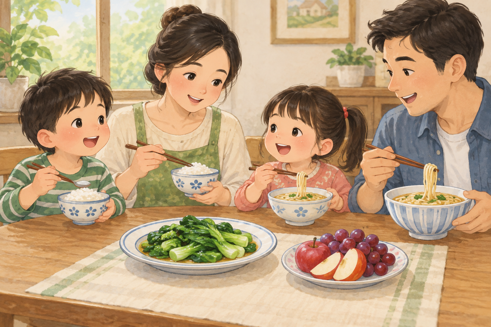
碗里有米饭，盘里有青菜，还有面条和水果。
生成提示词
Use case: illustration-story. One finished landscape 3:2 picture-book illustration for a Chinese literacy app, ages 5–6. Warm cream, sage green and natural muted colors; soft hand-painted gouache texture, friendly expressive East Asian people where the story needs people, clear subjects readable on a phone, uncluttered background. Illustrate the exact Chinese story below, interpreting actions and relationships literally and accurately. Use one coherent scene unless the story explicitly needs successive moments; for a sequence use two or three clearly separated wordless narrative panels, consistent characters and setting. No titles, captions, lettering, numbers, speech bubbles, logos or watermarks. No flashcard grids. No additional narrative characters or unrelated props. Natural anatomy, clear hands and object contact, all important subjects fully in frame. Chapter: 吃饭啦. Exact story (do not print text): 碗里有米饭，盘里有青菜，还有面条和水果。 Composition and constraints: Show a family meal on a table: a bowl of cooked white rice, a plate of leafy green vegetables, a separate bowl of noodles and a small plate of fresh fruit. All four categories clearly identifiable. No text, no invented exotic foods.
C017 · 坐好再出发
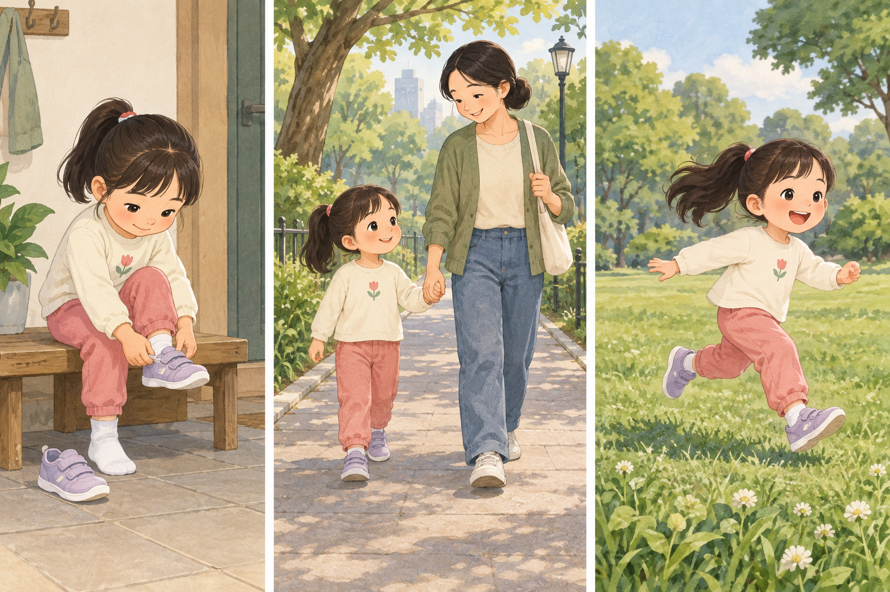
我坐下穿鞋，再站起来。去公园的路上慢慢走，到草地再跑。
生成提示词
Use case: illustration-story. One finished landscape 3:2 picture-book illustration for a Chinese literacy app, ages 5–6. Warm cream, sage green and natural muted colors; soft hand-painted gouache texture, friendly expressive East Asian people where the story needs people, clear subjects readable on a phone, uncluttered background. Illustrate the exact Chinese story below, interpreting actions and relationships literally and accurately. Use one coherent scene unless the story explicitly needs successive moments; for a sequence use two or three clearly separated wordless narrative panels, consistent characters and setting. No titles, captions, lettering, numbers, speech bubbles, logos or watermarks. No flashcard grids. No additional narrative characters or unrelated props. Natural anatomy, clear hands and object contact, all important subjects fully in frame. Chapter: 坐好再出发. Exact story (do not print text): 我坐下穿鞋，再站起来。去公园的路上慢慢走，到草地再跑。 Composition and constraints: Three chronological wordless panels: child sitting on a low bench putting on shoes; same child walking calmly beside an adult on park path; same child running happily only on grass. No running in road.
C018 · 我们一起做
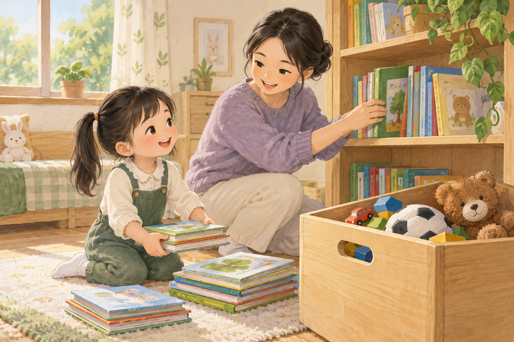
我是小帮手，我和你一起收书。收好了，也不乱放玩具。
生成提示词
Use case: illustration-story. One finished landscape 3:2 picture-book illustration for a Chinese literacy app, ages 5–6. Warm cream, sage green and natural muted colors; soft hand-painted gouache texture, friendly expressive East Asian people where the story needs people, clear subjects readable on a phone, uncluttered background. Illustrate the exact Chinese story below, interpreting actions and relationships literally and accurately. Use one coherent scene unless the story explicitly needs successive moments; for a sequence use two or three clearly separated wordless narrative panels, consistent characters and setting. No titles, captions, lettering, numbers, speech bubbles, logos or watermarks. No flashcard grids. No additional narrative characters or unrelated props. Natural anatomy, clear hands and object contact, all important subjects fully in frame. Chapter: 我们一起做. Exact story (do not print text): 我是小帮手，我和你一起收书。收好了，也不乱放玩具。
C019 · 我的朋友们
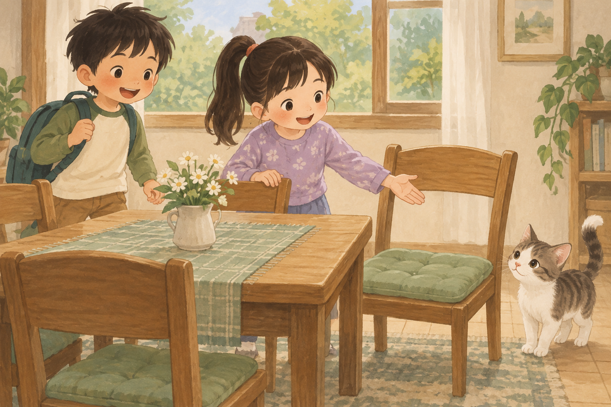
他来了，她也来了。它是一只小猫，我们给它留了一个位置。
生成提示词
Use case: illustration-story. One finished landscape 3:2 picture-book illustration for a Chinese literacy app, ages 5–6. Warm cream, sage green and natural muted colors; soft hand-painted gouache texture, friendly expressive East Asian people where the story needs people, clear subjects readable on a phone, uncluttered background. Illustrate the exact Chinese story below, interpreting actions and relationships literally and accurately. Use one coherent scene unless the story explicitly needs successive moments; for a sequence use two or three clearly separated wordless narrative panels, consistent characters and setting. No titles, captions, lettering, numbers, speech bubbles, logos or watermarks. No flashcard grids. No additional narrative characters or unrelated props. Natural anatomy, clear hands and object contact, all important subjects fully in frame. Chapter: 我的朋友们. Exact story (do not print text): 他来了，她也来了。它是一只小猫，我们给它留了一个位置。
C020 · 问一问再动手
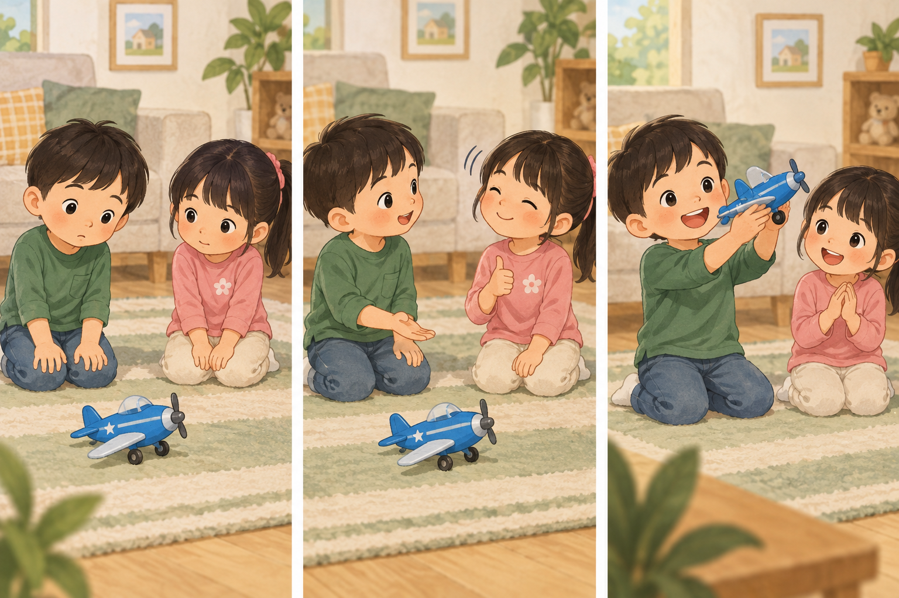
这是什么？那是谁的？我先问清楚，再拿来玩。
生成提示词
Use case: illustration-story. Warm gouache landscape 3:2 children's book illustration for ages 5–6, East Asian children, cream and sage colors, no text, no letters. Three wordless panels left to right with same boy in green shirt and girl in pink shirt and same blue toy airplane. Exact narrative: 这是什么？那是谁的？我先问清楚，再拿来玩。 CRITICAL: first panel toy airplane rests on floor, boy looks curiously with hands resting on his own knees. Second panel toy still rests on floor UNTOUCHED, boy asks girl with an open empty palm, girl smiles and nods permission. Third panel only AFTER permission boy now holds airplane and plays while girl smiles. NO child touching or holding toy in first TWO panels. Clear natural anatomy, friendly expressions, uncluttered home setting, all subjects visible. No captions or speech bubbles.
C021 · 幼儿园的一天
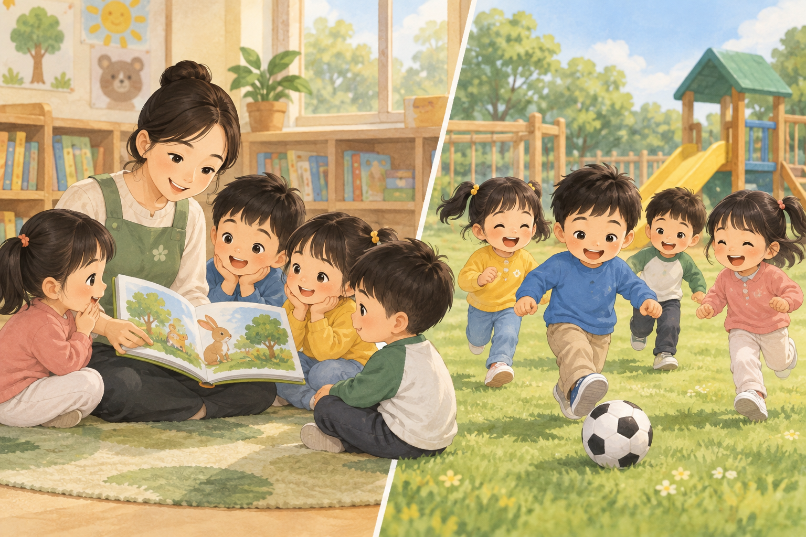
幼儿园里，老师和同学一起看书。我们学习，也一起玩。
生成提示词
Use case: illustration-story. One finished landscape 3:2 picture-book illustration for a Chinese literacy app, ages 5–6. Warm cream, sage green and natural muted colors; soft hand-painted gouache texture, friendly expressive East Asian people where the story needs people, clear subjects readable on a phone, uncluttered background. Illustrate the exact Chinese story below, interpreting actions and relationships literally and accurately. Use one coherent scene unless the story explicitly needs successive moments; for a sequence use two or three clearly separated wordless narrative panels, consistent characters and setting. No titles, captions, lettering, numbers, speech bubbles, logos or watermarks. No flashcard grids. No additional narrative characters or unrelated props. Natural anatomy, clear hands and object contact, all important subjects fully in frame. Chapter: 幼儿园的一天. Exact story (do not print text): 幼儿园里，老师和同学一起看书。我们学习，也一起玩。
C022 · 走进教室
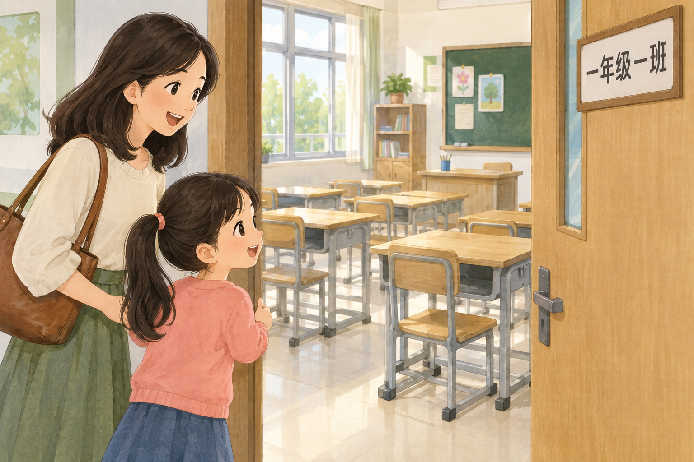
我和妈妈参观学校。教室里有桌子，门上写着班级。
生成提示词
Use case: illustration-story. One finished landscape 3:2 picture-book illustration for a Chinese literacy app, ages 5–6. Warm cream, sage green and natural muted colors; soft hand-painted gouache texture, friendly expressive East Asian people where the story needs people, clear subjects readable on a phone, uncluttered background. Illustrate the exact Chinese story below, interpreting actions and relationships literally and accurately. Use one coherent scene unless the story explicitly needs successive moments; for a sequence use two or three clearly separated wordless narrative panels, consistent characters and setting. No titles, captions, lettering, numbers, speech bubbles, logos or watermarks. No flashcard grids. No additional narrative characters or unrelated props. Natural anatomy, clear hands and object contact, all important subjects fully in frame. Chapter: 走进教室. Exact story (do not print text): 我和妈妈参观学校。教室里有桌子，门上写着班级。
C023 · 收好我的用品
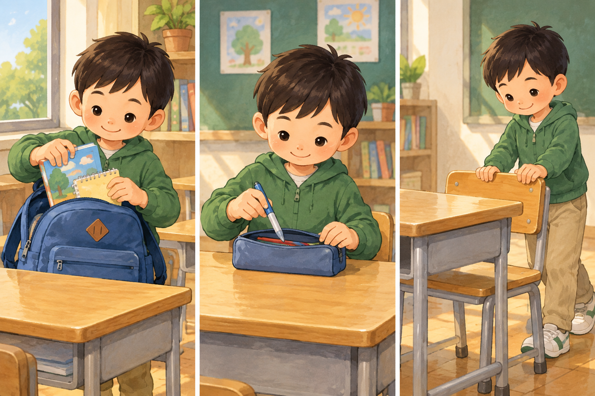
我把书和本子放进书包，把笔收好，再把椅子推回去。
生成提示词
Use case: illustration-story. One finished landscape 3:2 picture-book illustration for a Chinese literacy app, ages 5–6. Warm cream, sage green and natural muted colors; soft hand-painted gouache texture, friendly expressive East Asian people where the story needs people, clear subjects readable on a phone, uncluttered background. Illustrate the exact Chinese story below, interpreting actions and relationships literally and accurately. Use one coherent scene unless the story explicitly needs successive moments; for a sequence use two or three clearly separated wordless narrative panels, consistent characters and setting. No titles, captions, lettering, numbers, speech bubbles, logos or watermarks. No flashcard grids. No additional narrative characters or unrelated props. Natural anatomy, clear hands and object contact, all important subjects fully in frame. Chapter: 收好我的用品. Exact story (do not print text): 我把书和本子放进书包，把笔收好，再把椅子推回去。
C024 · 读读画画

我读一句，你听一句；我说故事，你画小鸟。写字可以以后慢慢学。
生成提示词
Edit the attached picture-book illustration to fix the REMAINING drawing orientation. The mother's open reading book is ALREADY correct: its inside pages face her and only the outside cover faces the viewer; keep that exactly. The daughter is seated on the far side of the table, drawing a little bird on a sheet in front of her. ROTATE the sheet's bird drawing 180 DEGREES within the paper: the bird's HEAD and TOP point toward the far edge of the paper AWAY from the girl, its feet point toward the near edge CLOSEST to the girl, so it is upright to the girl's eyes and upside down to the viewer across the table. Keep her pencil tip touching the bird and her other hand on the sheet. Do not put the bird upright to the viewer. Preserve the two characters, anatomy, composition, warm gouache style, and landscape 3:2 format. No text, no watermark.
C025 · 开口表达
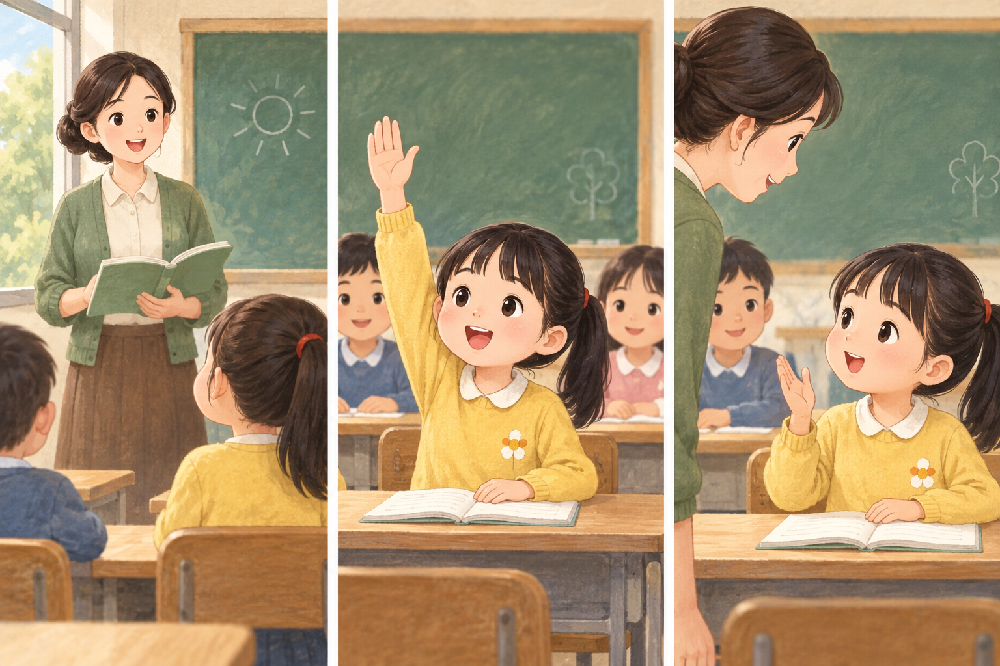
老师叫我的名字，我回答：“我在！”想讲自己的话，可以先问一声。
生成提示词
Use case: illustration-story. One finished landscape 3:2 picture-book illustration for a Chinese literacy app, ages 5–6. Warm cream, sage green and natural muted colors; soft hand-painted gouache texture, friendly expressive East Asian people where the story needs people, clear subjects readable on a phone, uncluttered background. Illustrate the exact Chinese story below, interpreting actions and relationships literally and accurately. Use one coherent scene unless the story explicitly needs successive moments; for a sequence use two or three clearly separated wordless narrative panels, consistent characters and setting. No titles, captions, lettering, numbers, speech bubbles, logos or watermarks. No flashcard grids. No additional narrative characters or unrelated props. Natural anatomy, clear hands and object contact, all important subjects fully in frame. Chapter: 开口表达. Exact story (do not print text): 老师叫我的名字，我回答：“我在！”想讲自己的话，可以先问一声。
C026 · 游戏时间
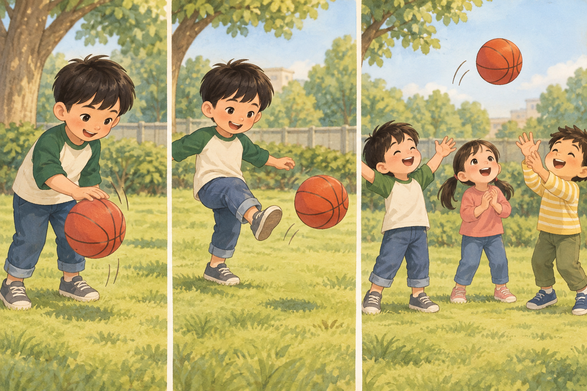
玩球时先拍一拍，再轻轻踢。球跳起来，大家笑了。
生成提示词
Use case: illustration-story. One finished landscape 3:2 picture-book illustration for a Chinese literacy app, ages 5–6. Warm cream, sage green and natural muted colors; soft hand-painted gouache texture, friendly expressive East Asian people where the story needs people, clear subjects readable on a phone, uncluttered background. Illustrate the exact Chinese story below, interpreting actions and relationships literally and accurately. Use one coherent scene unless the story explicitly needs successive moments; for a sequence use two or three clearly separated wordless narrative panels, consistent characters and setting. No titles, captions, lettering, numbers, speech bubbles, logos or watermarks. No flashcard grids. No additional narrative characters or unrelated props. Natural anatomy, clear hands and object contact, all important subjects fully in frame. Chapter: 游戏时间. Exact story (do not print text): 玩球时先拍一拍，再轻轻踢。球跳起来，大家笑了。
C027 · 轮流玩玩具
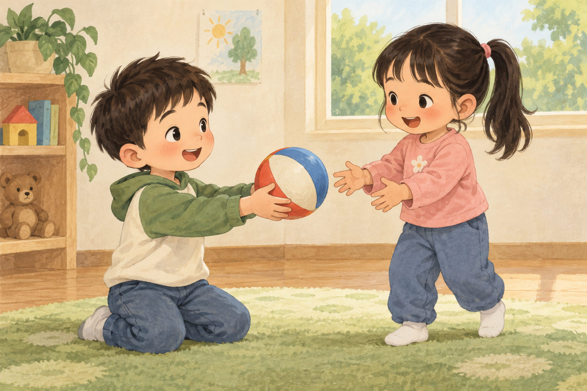
朋友想玩球，我说：“给你。你玩一会儿，我等一等。”
生成提示词
Use case: illustration-story. One finished landscape 3:2 picture-book illustration for a Chinese literacy app, ages 5–6. Warm cream, sage green and natural muted colors; soft hand-painted gouache texture, friendly expressive East Asian people where the story needs people, clear subjects readable on a phone, uncluttered background. Illustrate the exact Chinese story below, interpreting actions and relationships literally and accurately. Use one coherent scene unless the story explicitly needs successive moments; for a sequence use two or three clearly separated wordless narrative panels, consistent characters and setting. No titles, captions, lettering, numbers, speech bubbles, logos or watermarks. No flashcard grids. No additional narrative characters or unrelated props. Natural anatomy, clear hands and object contact, all important subjects fully in frame. Chapter: 轮流玩玩具. Exact story (do not print text): 朋友想玩球，我说：“给你。你玩一会儿，我等一等。”
C028 · 礼貌小客人
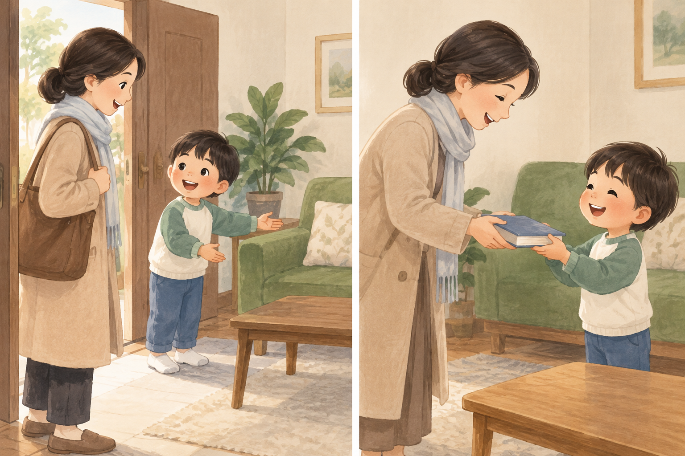
客人来了，我说：“您好，请坐。”收到帮助，我说：“谢谢您。”
生成提示词
Use case: illustration-story. One finished landscape 3:2 picture-book illustration for a Chinese literacy app, ages 5–6. Warm cream, sage green and natural muted colors; soft hand-painted gouache texture, friendly expressive East Asian people where the story needs people, clear subjects readable on a phone, uncluttered background. Illustrate the exact Chinese story below, interpreting actions and relationships literally and accurately. Use one coherent scene unless the story explicitly needs successive moments; for a sequence use two or three clearly separated wordless narrative panels, consistent characters and setting. No titles, captions, lettering, numbers, speech bubbles, logos or watermarks. No flashcard grids. No additional narrative characters or unrelated props. Natural anatomy, clear hands and object contact, all important subjects fully in frame. Chapter: 礼貌小客人. Exact story (do not print text): 客人来了，我说：“您好，请坐。”收到帮助，我说：“谢谢您。”
C029 · 早起和休息
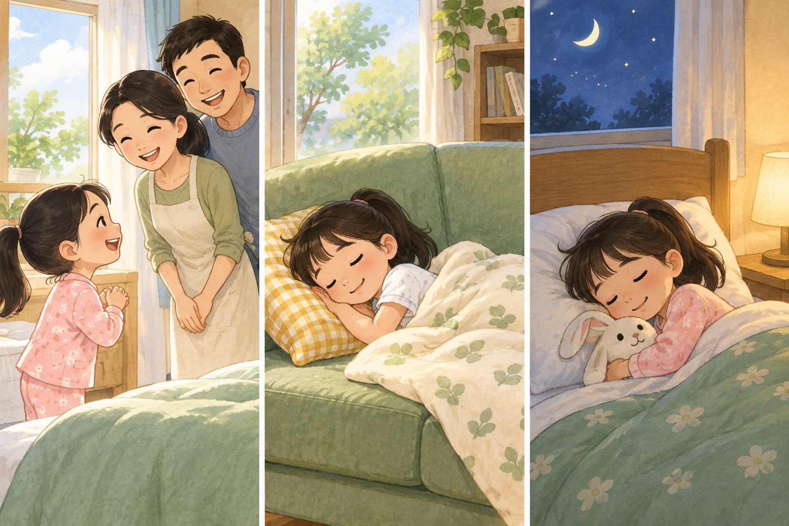
早上醒来，我向家人问好。中午休息，晚上按时睡觉。
生成提示词
Use case: illustration-story. One finished landscape 3:2 picture-book illustration for a Chinese literacy app, ages 5–6. Warm cream, sage green and natural muted colors; soft hand-painted gouache texture, friendly expressive East Asian people where the story needs people, clear subjects readable on a phone, uncluttered background. Illustrate the exact Chinese story below, interpreting actions and relationships literally and accurately. Use one coherent scene unless the story explicitly needs successive moments; for a sequence use two or three clearly separated wordless narrative panels, consistent characters and setting. No titles, captions, lettering, numbers, speech bubbles, logos or watermarks. No flashcard grids. No additional narrative characters or unrelated props. Natural anatomy, clear hands and object contact, all important subjects fully in frame. Chapter: 早起和休息. Exact story (do not print text): 早上醒来，我向家人问好。中午休息，晚上按时睡觉。
C030 · 洗手前看看少了什么
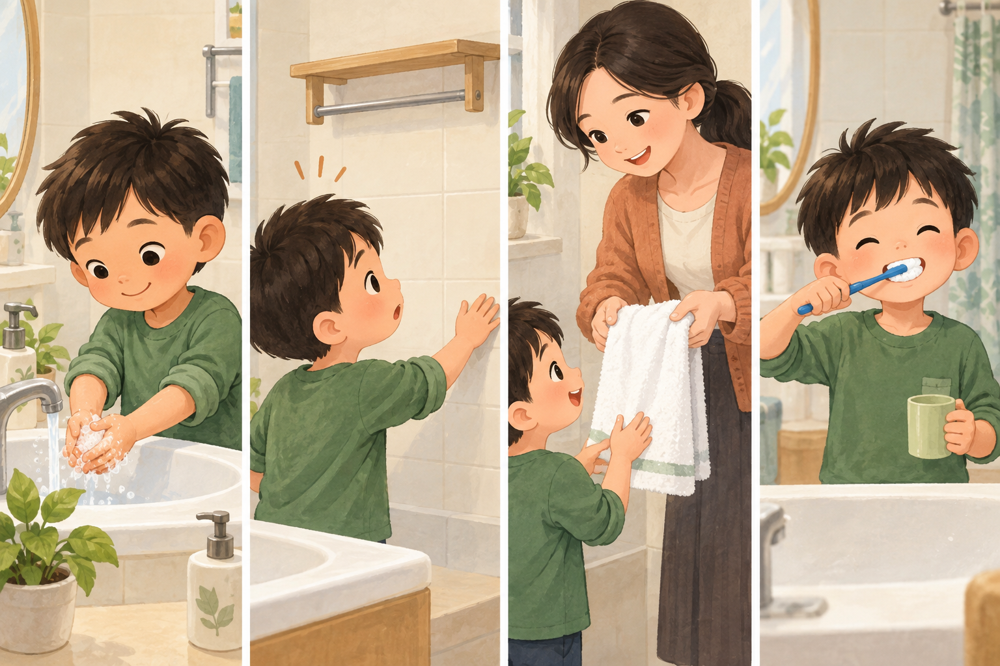
洗手后找毛巾，架上没有。妈妈拿来干净毛巾，我再去刷牙。
生成提示词
Use case: illustration-story. One finished landscape 3:2 picture-book illustration for a Chinese literacy app, ages 5–6. Warm cream, sage green and natural muted colors; soft hand-painted gouache texture, friendly expressive East Asian people where the story needs people, clear subjects readable on a phone, uncluttered background. Illustrate the exact Chinese story below, interpreting actions and relationships literally and accurately. Use one coherent scene unless the story explicitly needs successive moments; for a sequence use two or three clearly separated wordless narrative panels, consistent characters and setting. No titles, captions, lettering, numbers, speech bubbles, logos or watermarks. No flashcard grids. No additional narrative characters or unrelated props. Natural anatomy, clear hands and object contact, all important subjects fully in frame. Chapter: 洗手前看看少了什么. Exact story (do not print text): 洗手后找毛巾，架上没有。妈妈拿来干净毛巾，我再去刷牙。
C031 · 干净的衣服
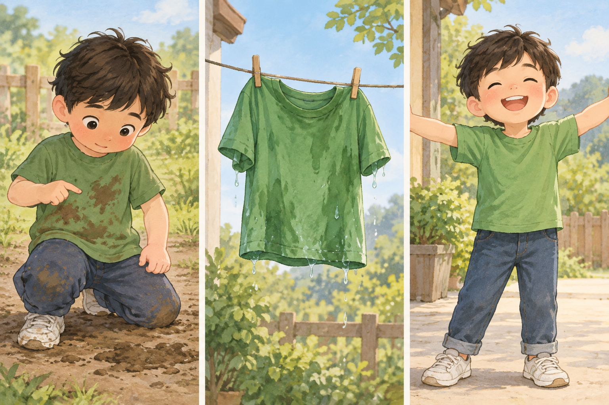
衣服脏了要换，洗净后湿湿的。晒干了，穿着才舒服。
生成提示词
Use case: illustration-story. One finished landscape 3:2 picture-book illustration for a Chinese literacy app, ages 5–6. Warm cream, sage green and natural muted colors; soft hand-painted gouache texture, friendly expressive East Asian people where the story needs people, clear subjects readable on a phone, uncluttered background. Illustrate the exact Chinese story below, interpreting actions and relationships literally and accurately. Use one coherent scene unless the story explicitly needs successive moments; for a sequence use two or three clearly separated wordless narrative panels, consistent characters and setting. No titles, captions, lettering, numbers, speech bubbles, logos or watermarks. No flashcard grids. No additional narrative characters or unrelated props. Natural anatomy, clear hands and object contact, all important subjects fully in frame. Chapter: 干净的衣服. Exact story (do not print text): 衣服脏了要换，洗净后湿湿的。晒干了，穿着才舒服。 Composition and constraints: Show three clear panels: same green shirt dirty with mud, the washed shirt wet on a clothesline, child fully dressed in the same clean dry green shirt. No undressing.
C032 · 洗澡和梳头
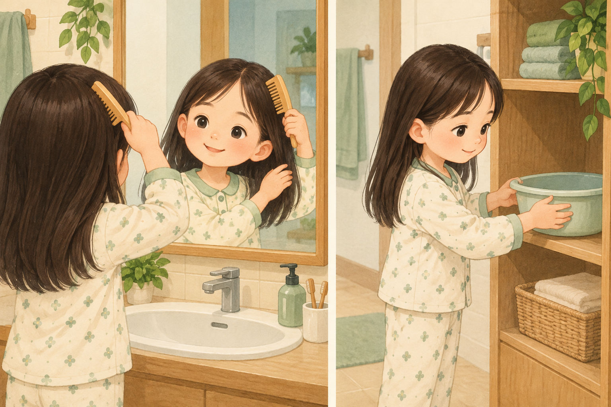
浴室里洗完澡，我对着镜子梳头，再把脸盆放好。
生成提示词
Use case: illustration-story. One finished landscape 3:2 picture-book illustration for a Chinese literacy app, ages 5–6. Warm cream, sage green and natural muted colors; soft hand-painted gouache texture, friendly expressive East Asian people where the story needs people, clear subjects readable on a phone, uncluttered background. Illustrate the exact Chinese story below, interpreting actions and relationships literally and accurately. Use one coherent scene unless the story explicitly needs successive moments; for a sequence use two or three clearly separated wordless narrative panels, consistent characters and setting. No titles, captions, lettering, numbers, speech bubbles, logos or watermarks. No flashcard grids. No additional narrative characters or unrelated props. Natural anatomy, clear hands and object contact, all important subjects fully in frame. Chapter: 洗澡和梳头. Exact story (do not print text): 浴室里洗完澡，我对着镜子梳头，再把脸盆放好。 Composition and constraints: Show the child AFTER bathing, fully dressed in long-sleeved pajamas throughout. Two panels: combing hair in mirror, putting a small washbasin neatly on a shelf. No bathing or undressing scene.
C033 · 认识厕所标识
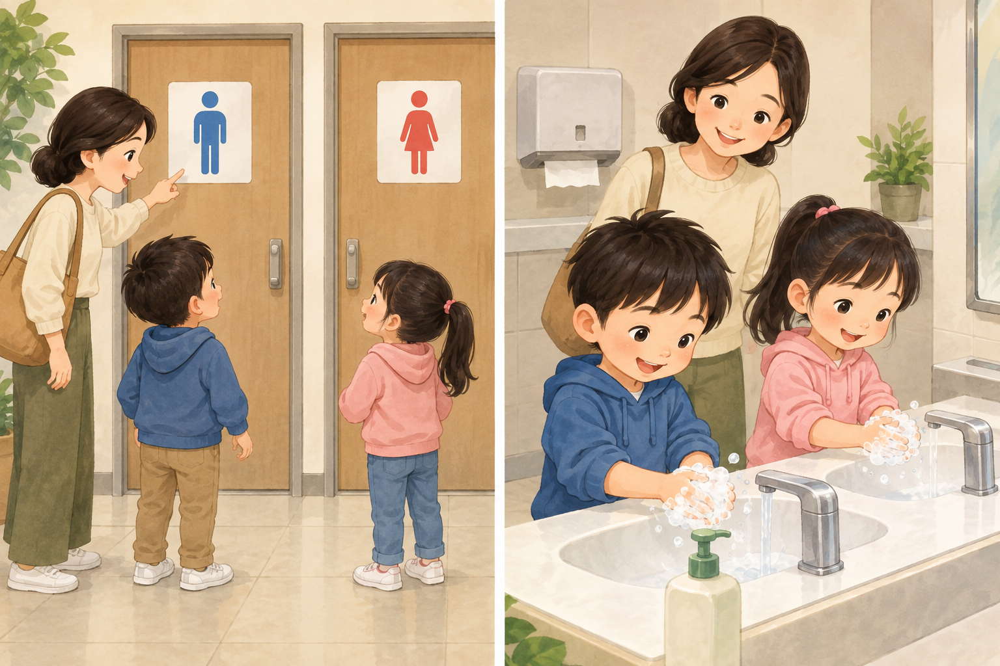
男孩和女孩都要学会看厕所标识。方便后，用好纸，再洗手。
生成提示词
Use case: illustration-story. One finished landscape 3:2 picture-book illustration for a Chinese literacy app, ages 5–6. Warm cream, sage green and natural muted colors; soft hand-painted gouache texture, friendly expressive East Asian people where the story needs people, clear subjects readable on a phone, uncluttered background. Illustrate the exact Chinese story below, interpreting actions and relationships literally and accurately. Use one coherent scene unless the story explicitly needs successive moments; for a sequence use two or three clearly separated wordless narrative panels, consistent characters and setting. No titles, captions, lettering, numbers, speech bubbles, logos or watermarks. No flashcard grids. No additional narrative characters or unrelated props. Natural anatomy, clear hands and object contact, all important subjects fully in frame. Chapter: 认识厕所标识. Exact story (do not print text): 男孩和女孩都要学会看厕所标识。方便后，用好纸，再洗手。 Composition and constraints: Two panels: fully clothed boy and girl with adult looking at clear standard male/female restroom pictograms on closed doors; then both washing hands at sinks with soap. Toilet paper dispenser may appear as context. No actual toilet use or undressing, no letters.
C034 · 午餐准备好
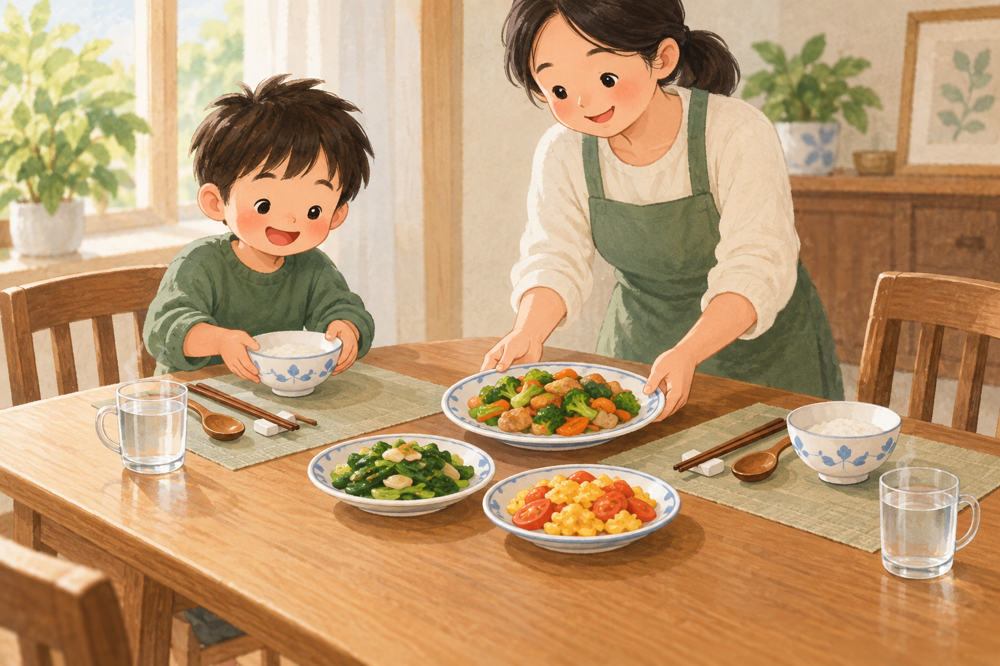
饭碗和盘子放好了，筷子和勺子在旁边。杯里有温水。
生成提示词
Use case: illustration-story. One finished landscape 3:2 picture-book illustration for a Chinese literacy app, ages 5–6. Warm cream, sage green and natural muted colors; soft hand-painted gouache texture, friendly expressive East Asian people where the story needs people, clear subjects readable on a phone, uncluttered background. Illustrate the exact Chinese story below, interpreting actions and relationships literally and accurately. Use one coherent scene unless the story explicitly needs successive moments; for a sequence use two or three clearly separated wordless narrative panels, consistent characters and setting. No titles, captions, lettering, numbers, speech bubbles, logos or watermarks. No flashcard grids. No additional narrative characters or unrelated props. Natural anatomy, clear hands and object contact, all important subjects fully in frame. Chapter: 午餐准备好. Exact story (do not print text): 饭碗和盘子放好了，筷子和勺子在旁边。杯里有温水。
C035 · 我的小床
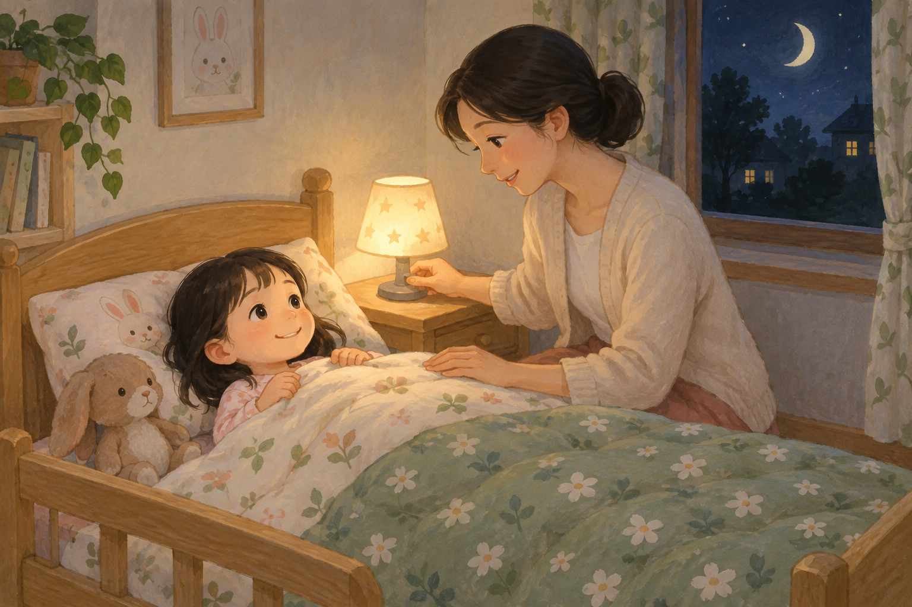
小床上有被子和枕头。窗外天黑了，妈妈关小台灯，陪我休息。
生成提示词
Use case: illustration-story. One finished landscape 3:2 picture-book illustration for a Chinese literacy app, ages 5–6. Warm cream, sage green and natural muted colors; soft hand-painted gouache texture, friendly expressive East Asian people where the story needs people, clear subjects readable on a phone, uncluttered background. Illustrate the exact Chinese story below, interpreting actions and relationships literally and accurately. Use one coherent scene unless the story explicitly needs successive moments; for a sequence use two or three clearly separated wordless narrative panels, consistent characters and setting. No titles, captions, lettering, numbers, speech bubbles, logos or watermarks. No flashcard grids. No additional narrative characters or unrelated props. Natural anatomy, clear hands and object contact, all important subjects fully in frame. Chapter: 我的小床. Exact story (do not print text): 小床上有被子和枕头。窗外天黑了，妈妈关小台灯，陪我休息。
C036 · 我会整理
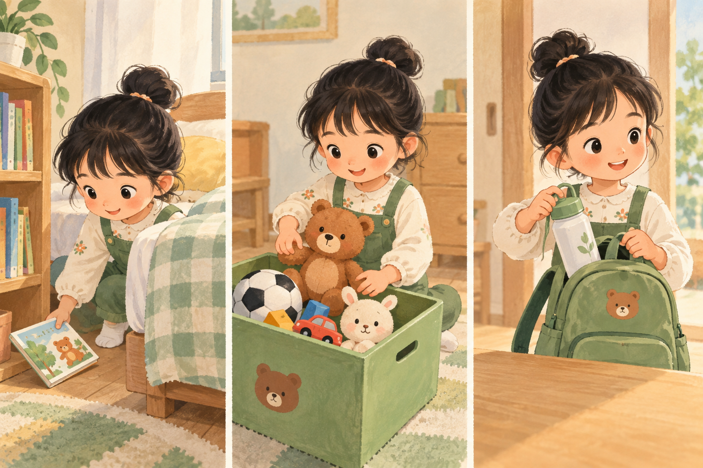
我找到小书，拿来放好；再收起玩具，带上水杯。
生成提示词
Use case: illustration-story. One finished landscape 3:2 picture-book illustration for a Chinese literacy app, ages 5–6. Warm cream, sage green and natural muted colors; soft hand-painted gouache texture, friendly expressive East Asian people where the story needs people, clear subjects readable on a phone, uncluttered background. Illustrate the exact Chinese story below, interpreting actions and relationships literally and accurately. Use one coherent scene unless the story explicitly needs successive moments; for a sequence use two or three clearly separated wordless narrative panels, consistent characters and setting. No titles, captions, lettering, numbers, speech bubbles, logos or watermarks. No flashcard grids. No additional narrative characters or unrelated props. Natural anatomy, clear hands and object contact, all important subjects fully in frame. Chapter: 我会整理. Exact story (do not print text): 我找到小书，拿来放好；再收起玩具，带上水杯。
C037 · 排队不着急
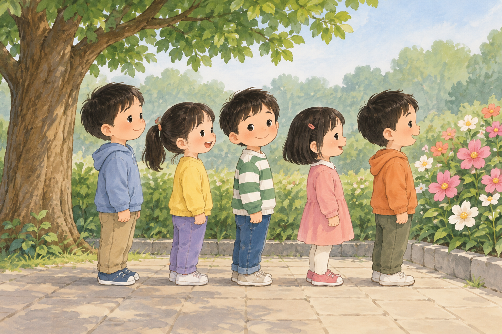
我在队伍中间，前后都有朋友。左边是树，右边是花。
生成提示词
Use case: illustration-story. One finished landscape 3:2 picture-book illustration for a Chinese literacy app, ages 5–6. Warm cream, sage green and natural muted colors; soft hand-painted gouache texture, friendly expressive East Asian people where the story needs people, clear subjects readable on a phone, uncluttered background. Illustrate the exact Chinese story below, interpreting actions and relationships literally and accurately. Use one coherent scene unless the story explicitly needs successive moments; for a sequence use two or three clearly separated wordless narrative panels, consistent characters and setting. No titles, captions, lettering, numbers, speech bubbles, logos or watermarks. No flashcard grids. No additional narrative characters or unrelated props. Natural anatomy, clear hands and object contact, all important subjects fully in frame. Chapter: 排队不着急. Exact story (do not print text): 我在队伍中间，前后都有朋友。左边是树，右边是花。
C038 · 游戏的顺序
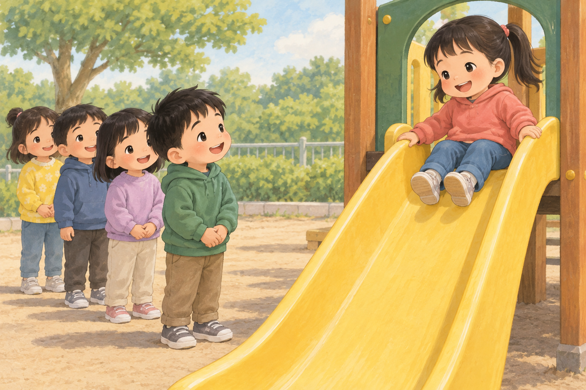
玩滑梯先排队。这次你先，下次再轮到我。
生成提示词
Use case: illustration-story. One finished landscape 3:2 picture-book illustration for a Chinese literacy app, ages 5–6. Warm cream, sage green and natural muted colors; soft hand-painted gouache texture, friendly expressive East Asian people where the story needs people, clear subjects readable on a phone, uncluttered background. Illustrate the exact Chinese story below, interpreting actions and relationships literally and accurately. Use one coherent scene unless the story explicitly needs successive moments; for a sequence use two or three clearly separated wordless narrative panels, consistent characters and setting. No titles, captions, lettering, numbers, speech bubbles, logos or watermarks. No flashcard grids. No additional narrative characters or unrelated props. Natural anatomy, clear hands and object contact, all important subjects fully in frame. Chapter: 游戏的顺序. Exact story (do not print text): 玩滑梯先排队。这次你先，下次再轮到我。
C039 · 保护自己
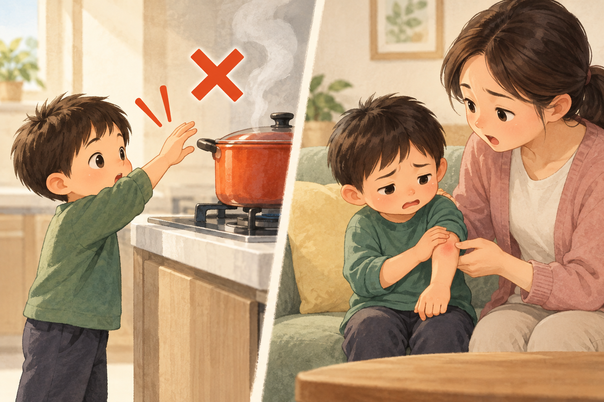
危险的东西不要碰。身体痛了或生病了，要告诉照顾我的大人。
生成提示词
Use case: illustration-story. One finished landscape 3:2 picture-book illustration for a Chinese literacy app, ages 5–6. Warm cream, sage green and natural muted colors; soft hand-painted gouache texture, friendly expressive East Asian people where the story needs people, clear subjects readable on a phone, uncluttered background. Illustrate the exact Chinese story below, interpreting actions and relationships literally and accurately. Use one coherent scene unless the story explicitly needs successive moments; for a sequence use two or three clearly separated wordless narrative panels, consistent characters and setting. No titles, captions, lettering, numbers, speech bubbles, logos or watermarks. No flashcard grids. No additional narrative characters or unrelated props. Natural anatomy, clear hands and object contact, all important subjects fully in frame. Chapter: 保护自己. Exact story (do not print text): 危险的东西不要碰。身体痛了或生病了，要告诉照顾我的大人。
C040 · 爱和帮助说出来
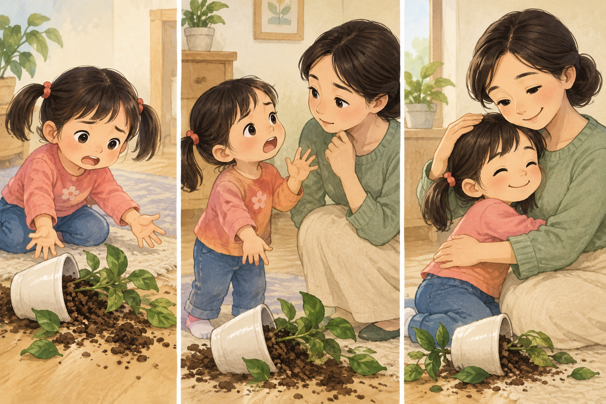
我着急地说：“请帮忙！”妈妈听我告诉她发生的事，用爱陪着我。
生成提示词
Use case: illustration-story. One finished landscape 3:2 picture-book illustration for a Chinese literacy app, ages 5–6. Warm cream, sage green and natural muted colors; soft hand-painted gouache texture, friendly expressive East Asian people where the story needs people, clear subjects readable on a phone, uncluttered background. Illustrate the exact Chinese story below, interpreting actions and relationships literally and accurately. Use one coherent scene unless the story explicitly needs successive moments; for a sequence use two or three clearly separated wordless narrative panels, consistent characters and setting. No titles, captions, lettering, numbers, speech bubbles, logos or watermarks. No flashcard grids. No additional narrative characters or unrelated props. Natural anatomy, clear hands and object contact, all important subjects fully in frame. Chapter: 爱和帮助说出来. Exact story (do not print text): 我着急地说：“请帮忙！”妈妈听我告诉她发生的事，用爱陪着我。
C042 · 池塘边的朋友
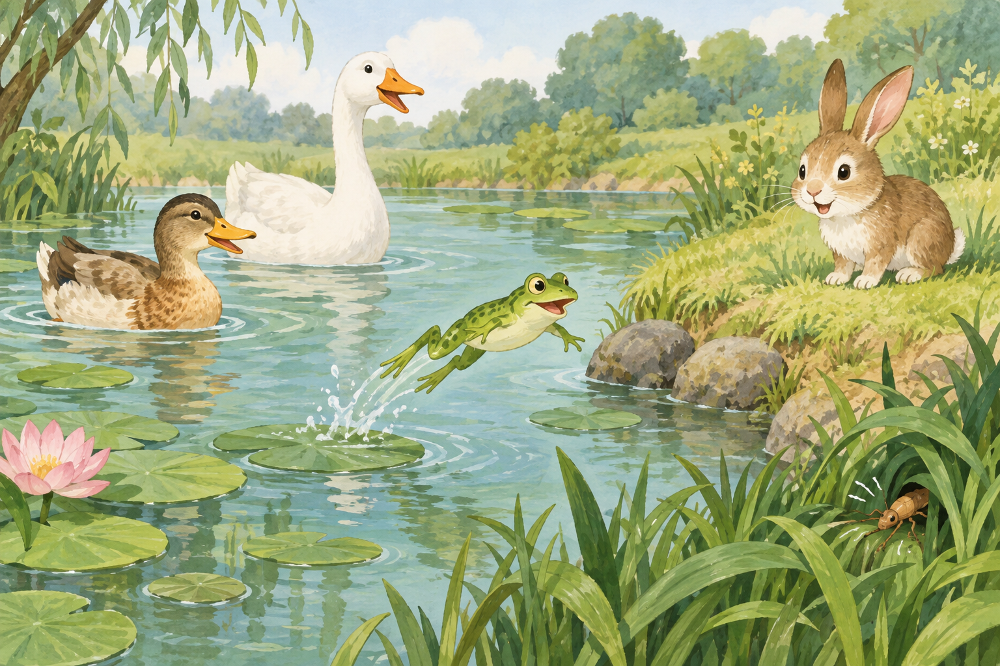
池塘里有鸭和鹅，岸边有兔子。青蛙跳过，小虫躲进草里。
生成提示词
Use case: illustration-story. One finished landscape 3:2 picture-book illustration for a Chinese literacy app, ages 5–6. Warm cream, sage green and natural muted colors; soft hand-painted gouache texture, friendly expressive East Asian people where the story needs people, clear subjects readable on a phone, uncluttered background. Illustrate the exact Chinese story below, interpreting actions and relationships literally and accurately. Use one coherent scene unless the story explicitly needs successive moments; for a sequence use two or three clearly separated wordless narrative panels, consistent characters and setting. No titles, captions, lettering, numbers, speech bubbles, logos or watermarks. No flashcard grids. No additional narrative characters or unrelated props. Natural anatomy, clear hands and object contact, all important subjects fully in frame. Chapter: 池塘边的朋友. Exact story (do not print text): 池塘里有鸭和鹅，岸边有兔子。青蛙跳过，小虫躲进草里。
C043 · 花丛里的昆虫
蚂蚁排着队，蜜蜂飞向花。蝴蝶落在另一朵花上。
生成提示词
Use case: illustration-story. One finished landscape 3:2 picture-book illustration for a Chinese literacy app, ages 5–6. Warm cream, sage green and natural muted colors; soft hand-painted gouache texture, friendly expressive East Asian people where the story needs people, clear subjects readable on a phone, uncluttered background. Illustrate the exact Chinese story below, interpreting actions and relationships literally and accurately. Use one coherent scene unless the story explicitly needs successive moments; for a sequence use two or three clearly separated wordless narrative panels, consistent characters and setting. No titles, captions, lettering, numbers, speech bubbles, logos or watermarks. No flashcard grids. No additional narrative characters or unrelated props. Natural anatomy, clear hands and object contact, all important subjects fully in frame. Chapter: 花丛里的昆虫. Exact story (do not print text): 蚂蚁排着队，蜜蜂飞向花。蝴蝶落在另一朵花上。
C044 · 听虫子唱歌
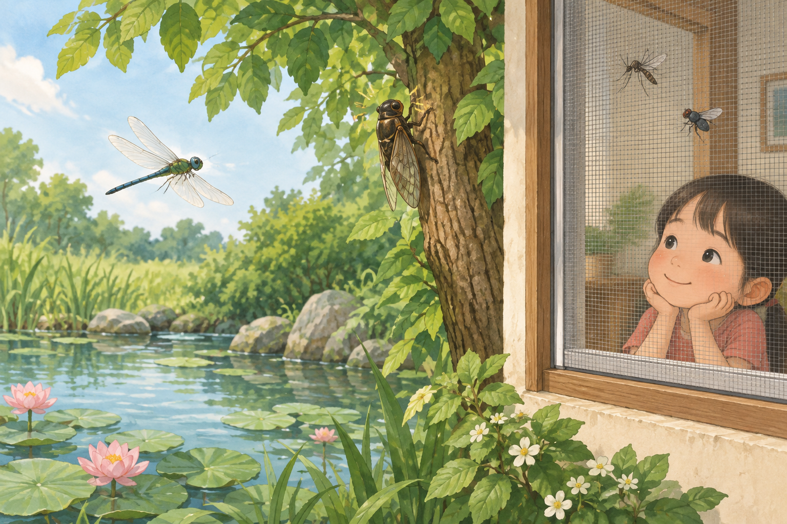
蜻蜓飞过池塘，蝉在树上叫。纱窗挡住蚊子和苍蝇。
生成提示词
Use case: illustration-story. One finished landscape 3:2 picture-book illustration for a Chinese literacy app, ages 5–6. Warm cream, sage green and natural muted colors; soft hand-painted gouache texture, friendly expressive East Asian people where the story needs people, clear subjects readable on a phone, uncluttered background. Illustrate the exact Chinese story below, interpreting actions and relationships literally and accurately. Use one coherent scene unless the story explicitly needs successive moments; for a sequence use two or three clearly separated wordless narrative panels, consistent characters and setting. No titles, captions, lettering, numbers, speech bubbles, logos or watermarks. No flashcard grids. No additional narrative characters or unrelated props. Natural anatomy, clear hands and object contact, all important subjects fully in frame. Chapter: 听虫子唱歌. Exact story (do not print text): 蜻蜓飞过池塘，蝉在树上叫。纱窗挡住蚊子和苍蝇。
C045 · 森林里的大动物

图画里有老虎、狮子、大象、小熊和小鹿。我指给妈妈看。
生成提示词
Edit the attached illustration to fix the open book's orientation. Preserve the mother, daughter, warm living-room gouache style, and exactly five animal drawings: tiger, male lion, elephant, little bear, spotted deer, all printed flat INSIDE the book. Move the viewpoint to a clear over-the-shoulder view from BEHIND the seated mother and daughter, looking toward the open book lying on the table. The book's TOP edge is away from the readers and its BOTTOM edge is closest to their bodies; every animal is upright from the mother and daughter's reading viewpoint. Daughter points to one animal. Show the backs or side profiles of the people as needed so their eyes and the pages have the same orientation. No real animals outside the book, no text, no extra characters, no watermark. Finished landscape 3:2.
C046 · 树林里的伙伴
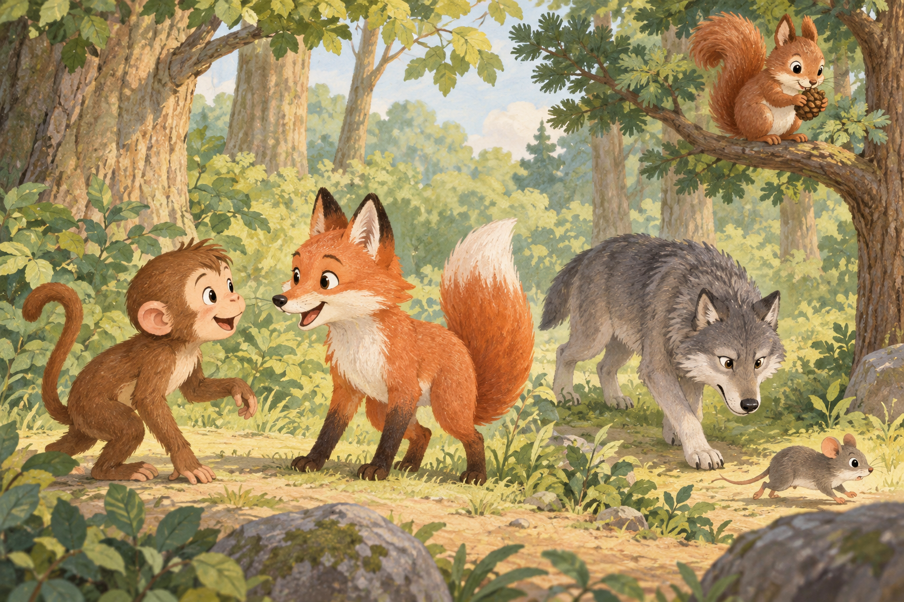
故事里，猴子碰见狐狸，灰狼找老鼠，松鼠正在树上吃东西。
生成提示词
Use case: illustration-story. One finished landscape 3:2 picture-book illustration for a Chinese literacy app, ages 5–6. Warm cream, sage green and natural muted colors; soft hand-painted gouache texture, friendly expressive East Asian people where the story needs people, clear subjects readable on a phone, uncluttered background. Illustrate the exact Chinese story below, interpreting actions and relationships literally and accurately. Use one coherent scene unless the story explicitly needs successive moments; for a sequence use two or three clearly separated wordless narrative panels, consistent characters and setting. No titles, captions, lettering, numbers, speech bubbles, logos or watermarks. No flashcard grids. No additional narrative characters or unrelated props. Natural anatomy, clear hands and object contact, all important subjects fully in frame. Chapter: 树林里的伙伴. Exact story (do not print text): 故事里，猴子碰见狐狸，灰狼找老鼠，松鼠正在树上吃东西。
C047 · 水里的动物
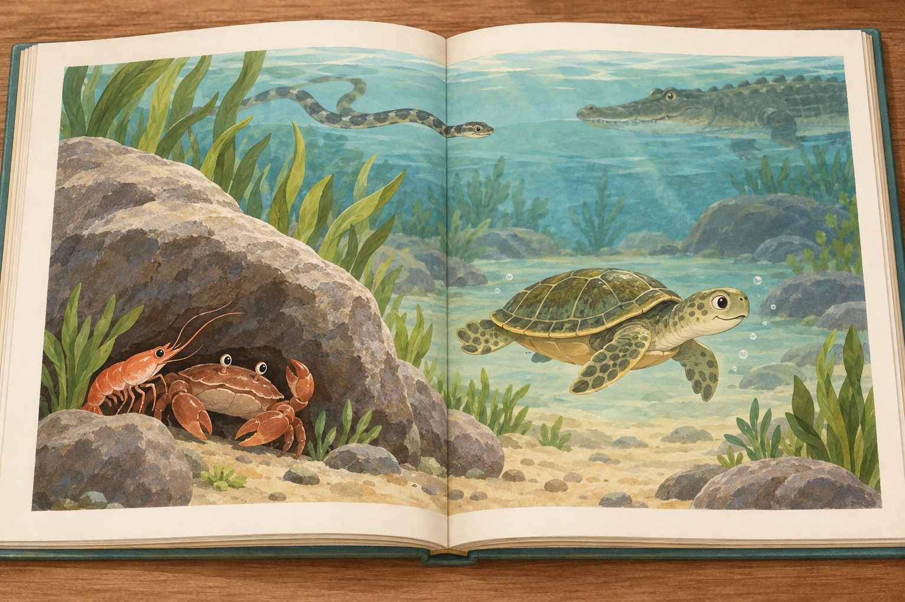
图书里，小虾和螃蟹躲在石边，乌龟游过去，远处有水蛇和鳄鱼。
生成提示词
Use case: illustration-story. One finished landscape 3:2 picture-book illustration for a Chinese literacy app, ages 5–6. Warm cream, sage green and natural muted colors; soft hand-painted gouache texture, friendly expressive East Asian people where the story needs people, clear subjects readable on a phone, uncluttered background. Illustrate the exact Chinese story below, interpreting actions and relationships literally and accurately. Use one coherent scene unless the story explicitly needs successive moments; for a sequence use two or three clearly separated wordless narrative panels, consistent characters and setting. No titles, captions, lettering, numbers, speech bubbles, logos or watermarks. No flashcard grids. No additional narrative characters or unrelated props. Natural anatomy, clear hands and object contact, all important subjects fully in frame. Chapter: 水里的动物. Exact story (do not print text): 图书里，小虾和螃蟹躲在石边，乌龟游过去，远处有水蛇和鳄鱼。 Critical framing: These are illustrations INSIDE a clearly visible large open picture book resting on a table. The book fills most of the frame, with visible page edges and binding. All named animals/plants/scenery are flat printed pictures within the page boundaries, never real creatures around a child. Use close-up book framing so all named subjects remain easy to recognize.
C048 · 谁在海里游
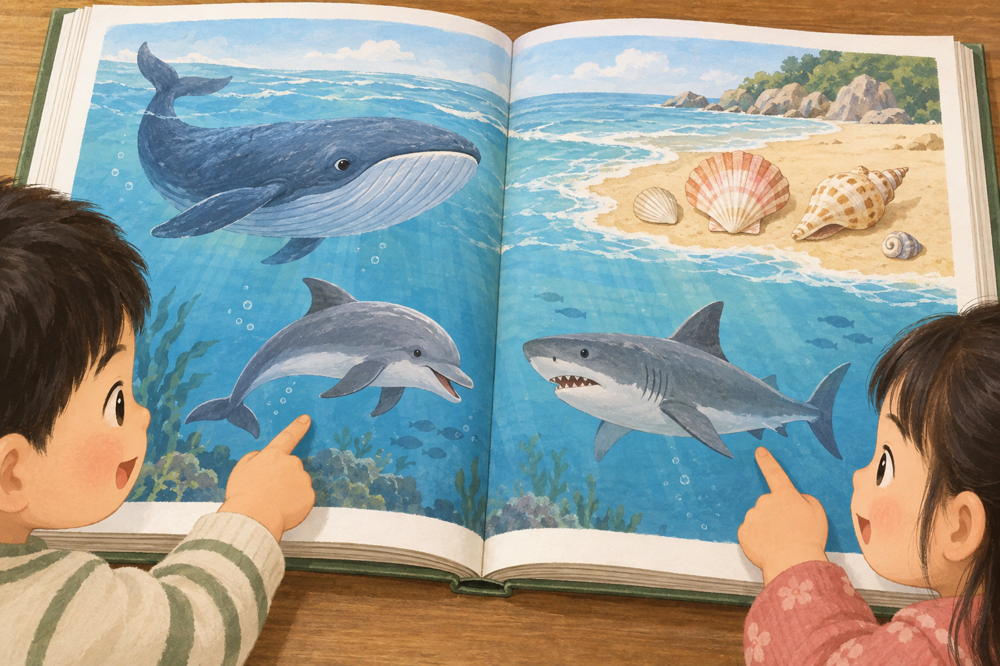
海里有鲸、海豚和鲨鱼，海边有贝壳。我们在书里找它们。
生成提示词
Use case: illustration-story. One finished landscape 3:2 picture-book illustration for a Chinese literacy app, ages 5–6. Warm cream, sage green and natural muted colors; soft hand-painted gouache texture, friendly expressive East Asian people where the story needs people, clear subjects readable on a phone, uncluttered background. Illustrate the exact Chinese story below, interpreting actions and relationships literally and accurately. Use one coherent scene unless the story explicitly needs successive moments; for a sequence use two or three clearly separated wordless narrative panels, consistent characters and setting. No titles, captions, lettering, numbers, speech bubbles, logos or watermarks. No flashcard grids. No additional narrative characters or unrelated props. Natural anatomy, clear hands and object contact, all important subjects fully in frame. Chapter: 谁在海里游. Exact story (do not print text): 海里有鲸、海豚和鲨鱼，海边有贝壳。我们在书里找它们。 Critical framing: These are illustrations INSIDE a clearly visible large open picture book resting on a table. The book fills most of the frame, with visible page edges and binding. All named animals/plants/scenery are flat printed pictures within the page boundaries, never real creatures around a child. Use close-up book framing so all named subjects remain easy to recognize.
C049 · 看动物的身体
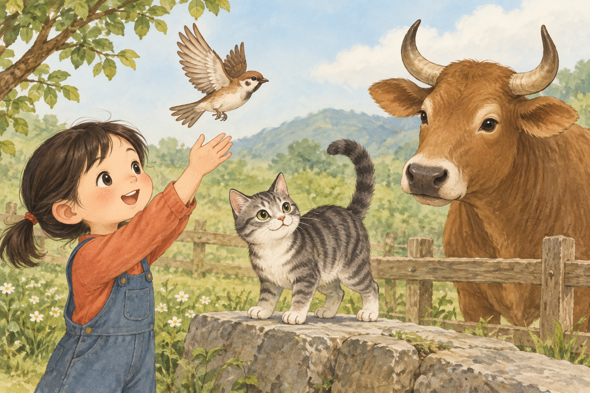
鸟有翅膀和羽毛，猫有尾巴和爪子，牛头上有角。
生成提示词
Use case: illustration-story. One finished landscape 3:2 picture-book illustration for a Chinese literacy app, ages 5–6. Warm cream, sage green and natural muted colors; soft hand-painted gouache texture, friendly expressive East Asian people where the story needs people, clear subjects readable on a phone, uncluttered background. Illustrate the exact Chinese story below, interpreting actions and relationships literally and accurately. Use one coherent scene unless the story explicitly needs successive moments; for a sequence use two or three clearly separated wordless narrative panels, consistent characters and setting. No titles, captions, lettering, numbers, speech bubbles, logos or watermarks. No flashcard grids. No additional narrative characters or unrelated props. Natural anatomy, clear hands and object contact, all important subjects fully in frame. Chapter: 看动物的身体. Exact story (do not print text): 鸟有翅膀和羽毛，猫有尾巴和爪子，牛头上有角。
C051 · 花园里的颜色
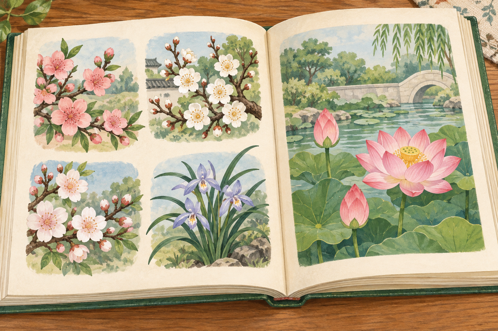
花册里有桃花、梅花、杏花和兰花。翻一页，池里还有荷花。
生成提示词
Use case: illustration-story. One finished landscape 3:2 picture-book illustration for a Chinese literacy app, ages 5–6. Warm cream, sage green and natural muted colors; soft hand-painted gouache texture, friendly expressive East Asian people where the story needs people, clear subjects readable on a phone, uncluttered background. Illustrate the exact Chinese story below, interpreting actions and relationships literally and accurately. Use one coherent scene unless the story explicitly needs successive moments; for a sequence use two or three clearly separated wordless narrative panels, consistent characters and setting. No titles, captions, lettering, numbers, speech bubbles, logos or watermarks. No flashcard grids. No additional narrative characters or unrelated props. Natural anatomy, clear hands and object contact, all important subjects fully in frame. Chapter: 花园里的颜色. Exact story (do not print text): 花册里有桃花、梅花、杏花和兰花。翻一页，池里还有荷花。 Critical framing: These are illustrations INSIDE a clearly visible large open picture book resting on a table. The book fills most of the frame, with visible page edges and binding. All named animals/plants/scenery are flat printed pictures within the page boundaries, never real creatures around a child. Use close-up book framing so all named subjects remain easy to recognize.
C052 · 秋天的叶子
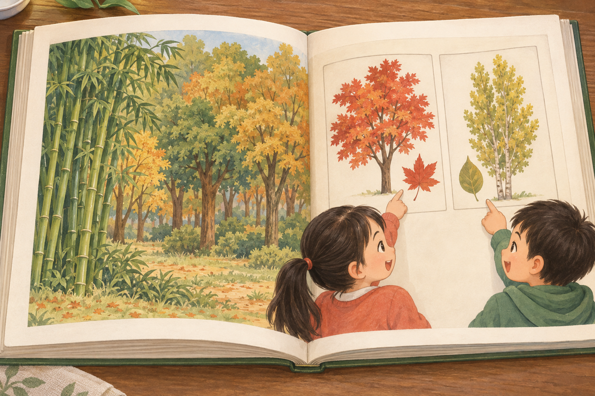
竹子旁是一片树林。我们在森林图里找到枫树和杨树。
生成提示词
Use case: illustration-story. One finished landscape 3:2 picture-book illustration for a Chinese literacy app, ages 5–6. Warm cream, sage green and natural muted colors; soft hand-painted gouache texture, friendly expressive East Asian people where the story needs people, clear subjects readable on a phone, uncluttered background. Illustrate the exact Chinese story below, interpreting actions and relationships literally and accurately. Use one coherent scene unless the story explicitly needs successive moments; for a sequence use two or three clearly separated wordless narrative panels, consistent characters and setting. No titles, captions, lettering, numbers, speech bubbles, logos or watermarks. No flashcard grids. No additional narrative characters or unrelated props. Natural anatomy, clear hands and object contact, all important subjects fully in frame. Chapter: 秋天的叶子. Exact story (do not print text): 竹子旁是一片树林。我们在森林图里找到枫树和杨树。 Critical framing: These are illustrations INSIDE a clearly visible large open picture book resting on a table. The book fills most of the frame, with visible page edges and binding. All named animals/plants/scenery are flat printed pictures within the page boundaries, never real creatures around a child. Use close-up book framing so all named subjects remain easy to recognize.
C053 · 找一找水在哪里

地图上有江、河和湖。公园里有水池，山边有泉水。
生成提示词
Edit the attached triptych illustration while preserving its gentle gouache style and exact story: a parent and child discover rivers and a lake on a paper map, then the child sees a park pond and a mountain spring. Fix the paper map's viewing direction in the LEFT panel. Reframe ONLY that panel from behind or over the shoulders of the parent and child, with their heads in the near foreground and the map flat on the table ahead of them. The map's top points AWAY from their bodies, its bottom edge is nearest them, and both look at the same map side; any directional symbols or landforms are upright to their eyes. The child or parent points at a visible blue river and lake. Preserve the two right panels with pond and spring. No text, no captions, no watermark. Finished landscape 3:2.
C054 · 看看天空
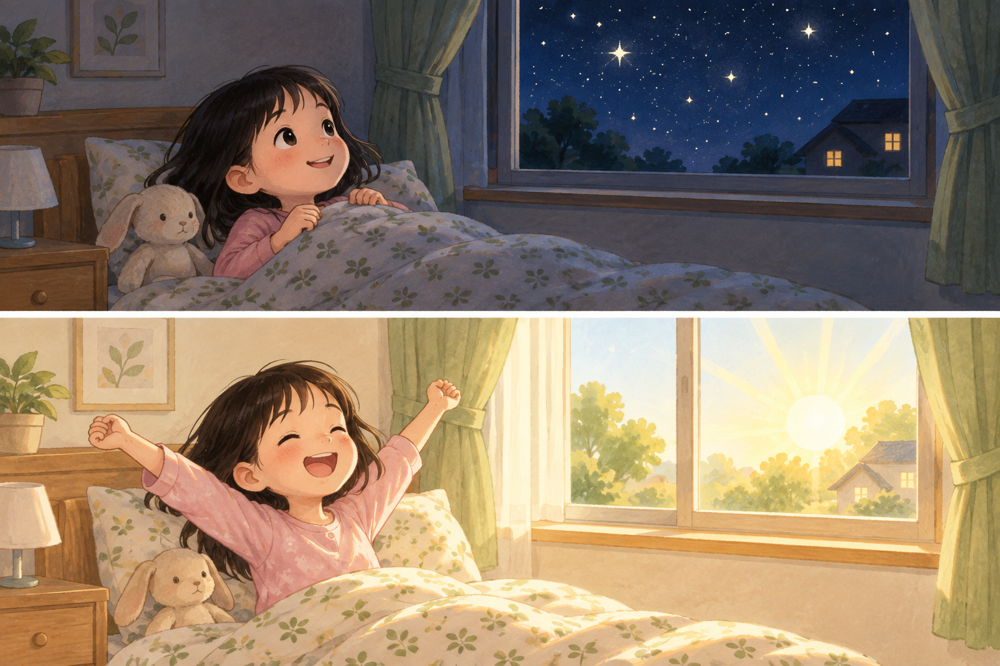
黑夜里，天空有星星。早上阳光来了，屋里亮起来。
生成提示词
Use case: illustration-story. One finished landscape 3:2 picture-book illustration for a Chinese literacy app, ages 5–6. Warm cream, sage green and natural muted colors; soft hand-painted gouache texture, friendly expressive East Asian people where the story needs people, clear subjects readable on a phone, uncluttered background. Illustrate the exact Chinese story below, interpreting actions and relationships literally and accurately. Use one coherent scene unless the story explicitly needs successive moments; for a sequence use two or three clearly separated wordless narrative panels, consistent characters and setting. No titles, captions, lettering, numbers, speech bubbles, logos or watermarks. No flashcard grids. No additional narrative characters or unrelated props. Natural anatomy, clear hands and object contact, all important subjects fully in frame. Chapter: 看看天空. Exact story (do not print text): 黑夜里，天空有星星。早上阳光来了，屋里亮起来。
C055 · 下雪的日子
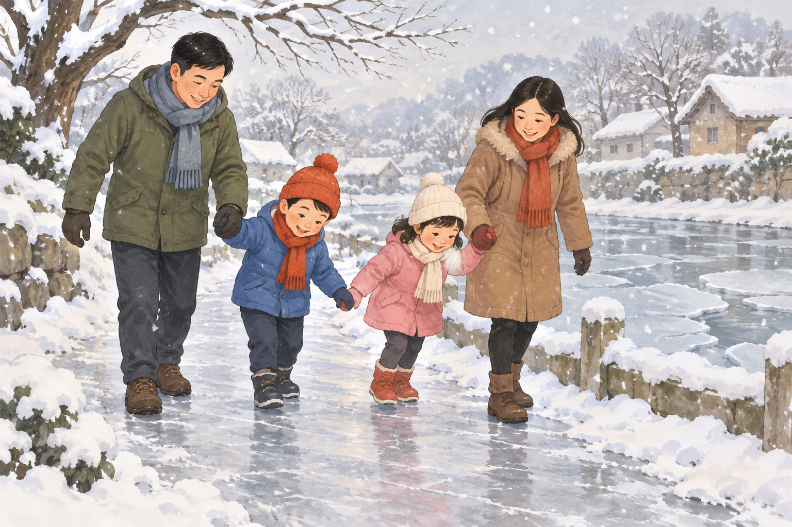
下雪了，天气冷。水结成冰，路面冻得很滑，我们和大人慢慢走。
生成提示词
Use case: illustration-story. One finished landscape 3:2 picture-book illustration for a Chinese literacy app, ages 5–6. Warm cream, sage green and natural muted colors; soft hand-painted gouache texture, friendly expressive East Asian people where the story needs people, clear subjects readable on a phone, uncluttered background. Illustrate the exact Chinese story below, interpreting actions and relationships literally and accurately. Use one coherent scene unless the story explicitly needs successive moments; for a sequence use two or three clearly separated wordless narrative panels, consistent characters and setting. No titles, captions, lettering, numbers, speech bubbles, logos or watermarks. No flashcard grids. No additional narrative characters or unrelated props. Natural anatomy, clear hands and object contact, all important subjects fully in frame. Chapter: 下雪的日子. Exact story (do not print text): 下雪了，天气冷。水结成冰，路面冻得很滑，我们和大人慢慢走。
C056 · 暖暖的天气
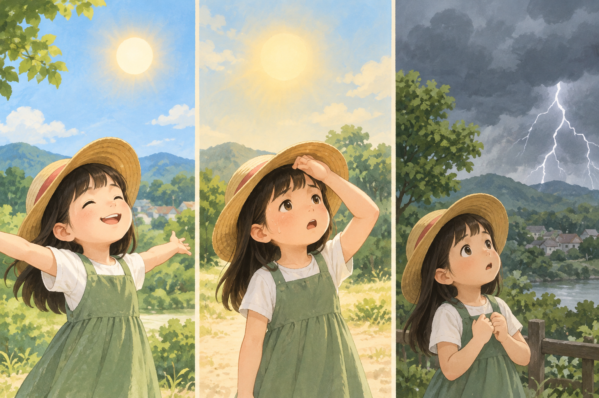
晴天里暖暖的，中午有点热。后来转阴，还响起了雷声。
生成提示词
Use case: illustration-story. One finished landscape 3:2 picture-book illustration for a Chinese literacy app, ages 5–6. Warm cream, sage green and natural muted colors; soft hand-painted gouache texture, friendly expressive East Asian people where the story needs people, clear subjects readable on a phone, uncluttered background. Illustrate the exact Chinese story below, interpreting actions and relationships literally and accurately. Use one coherent scene unless the story explicitly needs successive moments; for a sequence use two or three clearly separated wordless narrative panels, consistent characters and setting. No titles, captions, lettering, numbers, speech bubbles, logos or watermarks. No flashcard grids. No additional narrative characters or unrelated props. Natural anatomy, clear hands and object contact, all important subjects fully in frame. Chapter: 暖暖的天气. Exact story (do not print text): 晴天里暖暖的，中午有点热。后来转阴，还响起了雷声。
C057 · 四季慢慢变
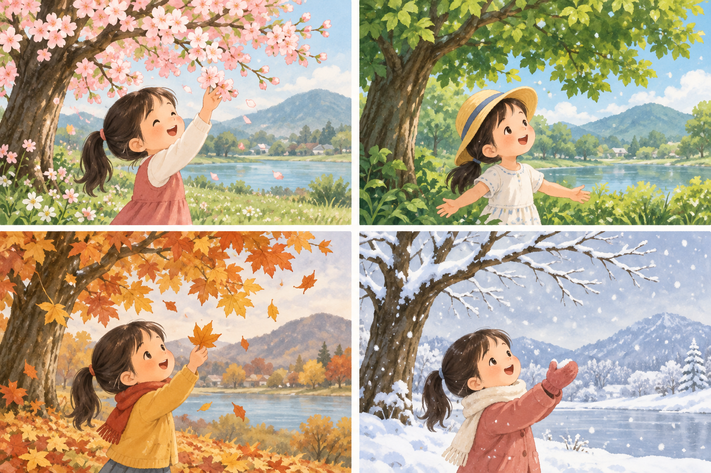
春天开花，夏天树绿，秋天叶落，冬天下雪。四季各有好看的景色。
生成提示词
Use case: illustration-story. One finished landscape 3:2 picture-book illustration for a Chinese literacy app, ages 5–6. Warm cream, sage green and natural muted colors; soft hand-painted gouache texture, friendly expressive East Asian people where the story needs people, clear subjects readable on a phone, uncluttered background. Illustrate the exact Chinese story below, interpreting actions and relationships literally and accurately. Use one coherent scene unless the story explicitly needs successive moments; for a sequence use two or three clearly separated wordless narrative panels, consistent characters and setting. No titles, captions, lettering, numbers, speech bubbles, logos or watermarks. No flashcard grids. No additional narrative characters or unrelated props. Natural anatomy, clear hands and object contact, all important subjects fully in frame. Chapter: 四季慢慢变. Exact story (do not print text): 春天开花，夏天树绿，秋天叶落，冬天下雪。四季各有好看的景色。
C058 · 观察天气变化
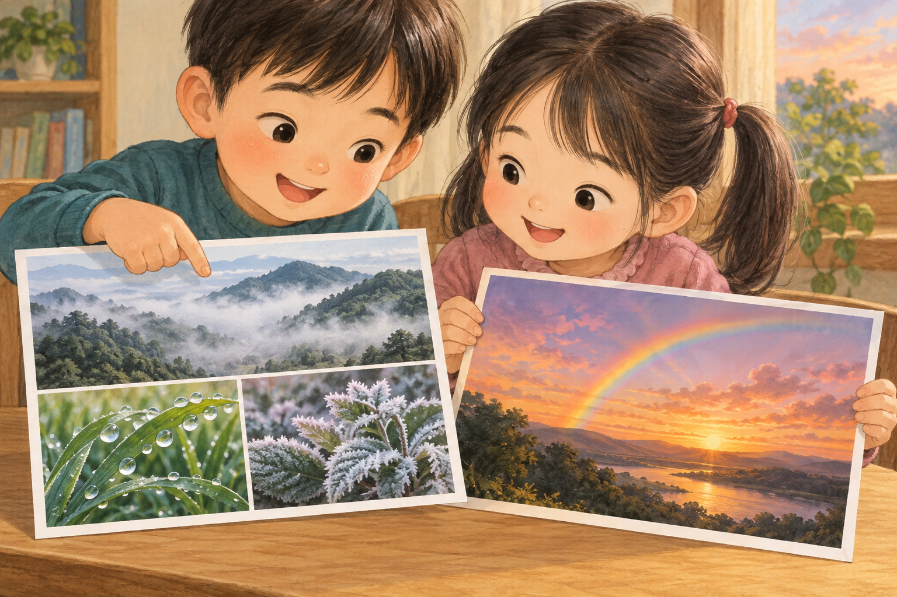
照片里有山雾、露水和白霜。另一张照片里，彩虹映着晚霞。
生成提示词
Use case: illustration-story. One finished landscape 3:2 picture-book illustration for a Chinese literacy app, ages 5–6. Warm cream, sage green and natural muted colors; soft hand-painted gouache texture, friendly expressive East Asian people where the story needs people, clear subjects readable on a phone, uncluttered background. Illustrate the exact Chinese story below, interpreting actions and relationships literally and accurately. Use one coherent scene unless the story explicitly needs successive moments; for a sequence use two or three clearly separated wordless narrative panels, consistent characters and setting. No titles, captions, lettering, numbers, speech bubbles, logos or watermarks. No flashcard grids. No additional narrative characters or unrelated props. Natural anatomy, clear hands and object contact, all important subjects fully in frame. Chapter: 观察天气变化. Exact story (do not print text): 照片里有山雾、露水和白霜。另一张照片里，彩虹映着晚霞。
C059 · 山洞里有回声
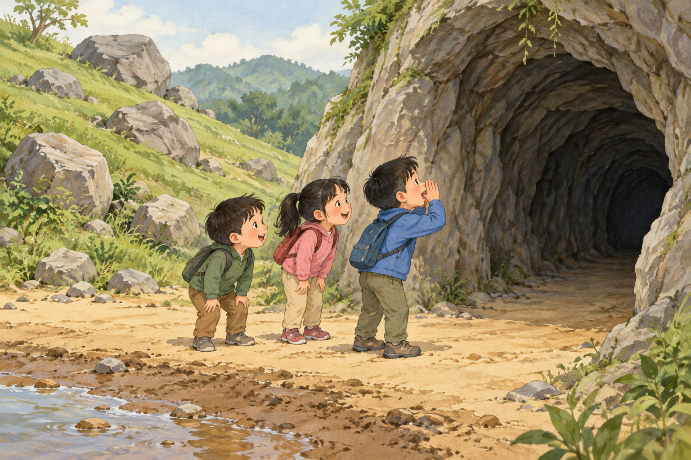
山坡上有岩石，坡下有泥和沙。我们在故事里听山洞的回声。
生成提示词
Use case: illustration-story. One finished landscape 3:2 picture-book illustration for a Chinese literacy app, ages 5–6. Warm cream, sage green and natural muted colors; soft hand-painted gouache texture, friendly expressive East Asian people where the story needs people, clear subjects readable on a phone, uncluttered background. Illustrate the exact Chinese story below, interpreting actions and relationships literally and accurately. Use one coherent scene unless the story explicitly needs successive moments; for a sequence use two or three clearly separated wordless narrative panels, consistent characters and setting. No titles, captions, lettering, numbers, speech bubbles, logos or watermarks. No flashcard grids. No additional narrative characters or unrelated props. Natural anatomy, clear hands and object contact, all important subjects fully in frame. Chapter: 山洞里有回声. Exact story (do not print text): 山坡上有岩石，坡下有泥和沙。我们在故事里听山洞的回声。
C060 · 爱护小生命
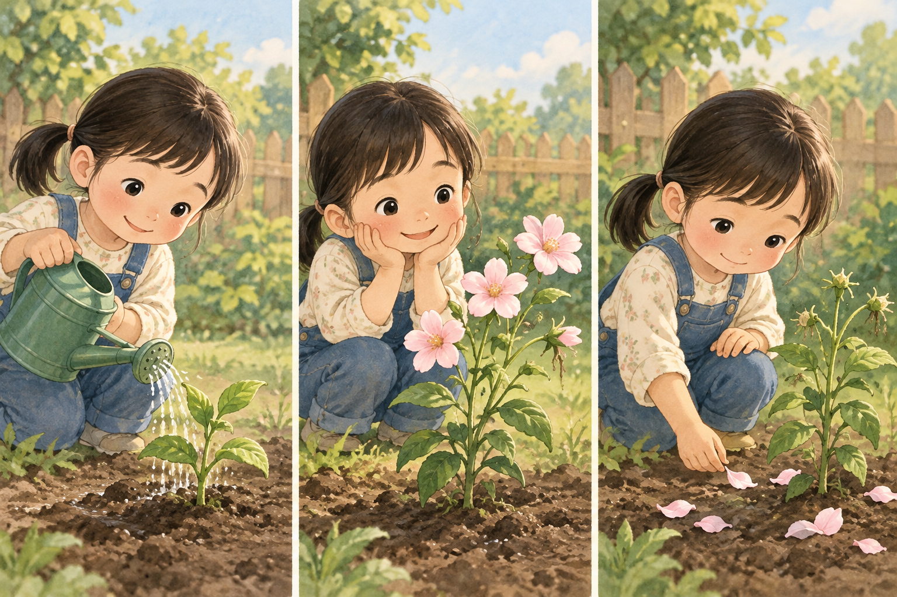
小苗慢慢长大，开出花。花落了，我们仍然爱护它的生命。
生成提示词
Use case: illustration-story. One finished landscape 3:2 picture-book illustration for a Chinese literacy app, ages 5–6. Warm cream, sage green and natural muted colors; soft hand-painted gouache texture, friendly expressive East Asian people where the story needs people, clear subjects readable on a phone, uncluttered background. Illustrate the exact Chinese story below, interpreting actions and relationships literally and accurately. Use one coherent scene unless the story explicitly needs successive moments; for a sequence use two or three clearly separated wordless narrative panels, consistent characters and setting. No titles, captions, lettering, numbers, speech bubbles, logos or watermarks. No flashcard grids. No additional narrative characters or unrelated props. Natural anatomy, clear hands and object contact, all important subjects fully in frame. Chapter: 爱护小生命. Exact story (do not print text): 小苗慢慢长大，开出花。花落了，我们仍然爱护它的生命。
C061 · 跟着路标走
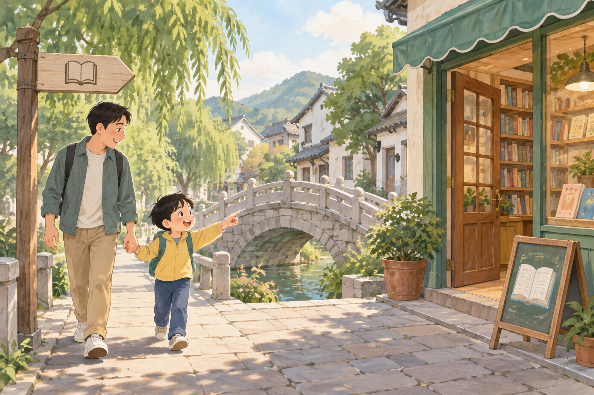
我和爸爸沿着街道走，过小桥，来到路边的书店。
生成提示词
Use case: illustration-story. One finished landscape 3:2 picture-book illustration for a Chinese literacy app, ages 5–6. Warm cream, sage green and natural muted colors; soft hand-painted gouache texture, friendly expressive East Asian people where the story needs people, clear subjects readable on a phone, uncluttered background. Illustrate the exact Chinese story below, interpreting actions and relationships literally and accurately. Use one coherent scene unless the story explicitly needs successive moments; for a sequence use two or three clearly separated wordless narrative panels, consistent characters and setting. No titles, captions, lettering, numbers, speech bubbles, logos or watermarks. No flashcard grids. No additional narrative characters or unrelated props. Natural anatomy, clear hands and object contact, all important subjects fully in frame. Chapter: 跟着路标走. Exact story (do not print text): 我和爸爸沿着街道走，过小桥，来到路边的书店。
C063 · 过人行横道
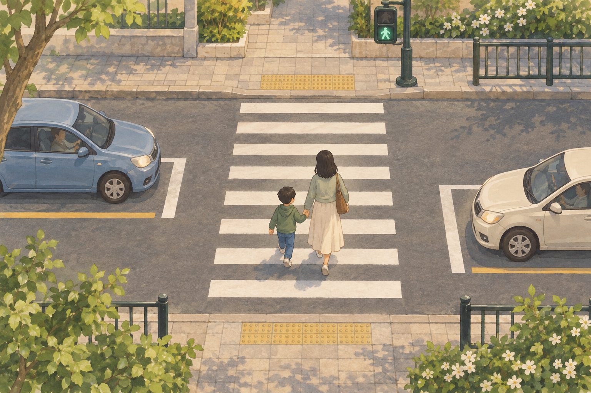
我和妈妈看好来车，沿人行横道过街。脚步落在斑马线上。
生成提示词
Use case: illustration-story. Warm gouache landscape 3:2 children's book illustration, East Asian mother holding five-year-old son's hand crossing at zebra crossing. CRITICAL ROAD GEOMETRY: elevated oblique bird's eye view. Road runs horizontally LEFT to RIGHT across image, sidewalks along its TOP and BOTTOM edges. Zebra crossing spans vertically from the bottom sidewalk to the top sidewalk; the painted WHITE BARS are horizontal parallel to road/vehicle travel direction, repeated from bottom to top. Mother and child walk away from viewer UPWARD toward TOP sidewalk on crossing, PERPENDICULAR to cars. One car points RIGHT and waits at stop line to the LEFT of crossing. Another car points LEFT and waits at stop line to the RIGHT of crossing. Clear gaps between stopped cars and pedestrians, green pedestrian signal on sidewalk. No car faces toward viewer. Exact story: 我和妈妈看好来车，沿人行横道过街。脚步落在斑马线上。 Safe calm crossing, natural anatomy, muted cream sage, no text no logos.
C064 · 认识交通工具
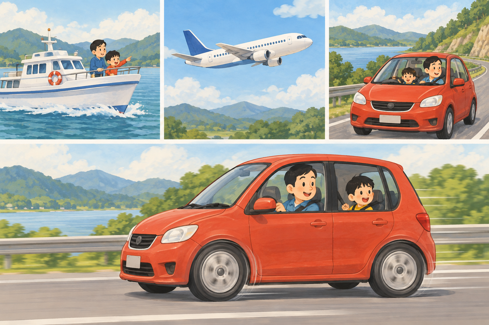
水上有船，天上有飞机，路上有汽车。车轮转起来，车向前走。
生成提示词
Use case: illustration-story. One finished landscape 3:2 picture-book illustration for a Chinese literacy app, ages 5–6. Warm cream, sage green and natural muted colors; soft hand-painted gouache texture, friendly expressive East Asian people where the story needs people, clear subjects readable on a phone, uncluttered background. Illustrate the exact Chinese story below, interpreting actions and relationships literally and accurately. Use one coherent scene unless the story explicitly needs successive moments; for a sequence use two or three clearly separated wordless narrative panels, consistent characters and setting. No titles, captions, lettering, numbers, speech bubbles, logos or watermarks. No flashcard grids. No additional narrative characters or unrelated props. Natural anatomy, clear hands and object contact, all important subjects fully in frame. Chapter: 认识交通工具. Exact story (do not print text): 水上有船，天上有飞机，路上有汽车。车轮转起来，车向前走。
C065 · 火车站里
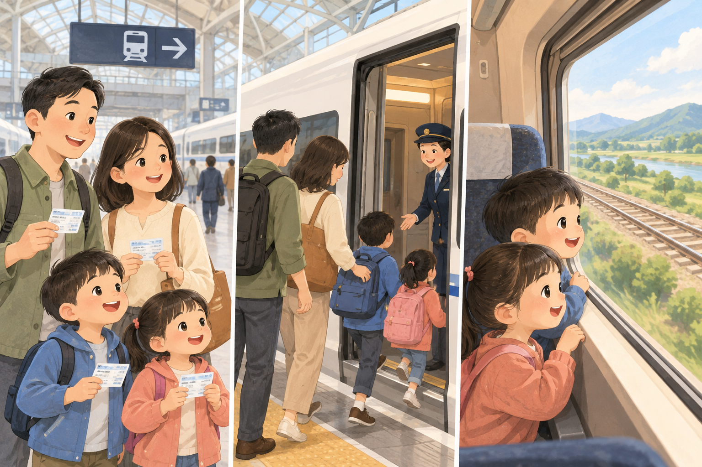
我和家人到火车站，拿好车票，按指引乘车。窗外有长长的铁路。
生成提示词
Use case: illustration-story. One finished landscape 3:2 picture-book illustration for a Chinese literacy app, ages 5–6. Warm cream, sage green and natural muted colors; soft hand-painted gouache texture, friendly expressive East Asian people where the story needs people, clear subjects readable on a phone, uncluttered background. Illustrate the exact Chinese story below, interpreting actions and relationships literally and accurately. Use one coherent scene unless the story explicitly needs successive moments; for a sequence use two or three clearly separated wordless narrative panels, consistent characters and setting. No titles, captions, lettering, numbers, speech bubbles, logos or watermarks. No flashcard grids. No additional narrative characters or unrelated props. Natural anatomy, clear hands and object contact, all important subjects fully in frame. Chapter: 火车站里. Exact story (do not print text): 我和家人到火车站，拿好车票，按指引乘车。窗外有长长的铁路。
C067 · 出发和到达
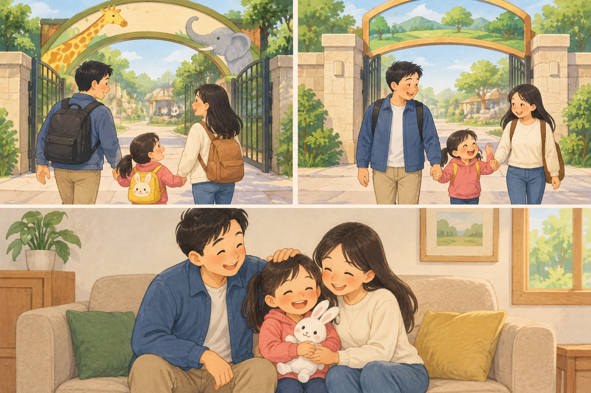
从入口进去，从出口出来。游玩结束，我们一起回到家。
生成提示词
Use case: illustration-story. One finished landscape 3:2 picture-book illustration for a Chinese literacy app, ages 5–6. Warm cream, sage green and natural muted colors; soft hand-painted gouache texture, friendly expressive East Asian people where the story needs people, clear subjects readable on a phone, uncluttered background. Illustrate the exact Chinese story below, interpreting actions and relationships literally and accurately. Use one coherent scene unless the story explicitly needs successive moments; for a sequence use two or three clearly separated wordless narrative panels, consistent characters and setting. No titles, captions, lettering, numbers, speech bubbles, logos or watermarks. No flashcard grids. No additional narrative characters or unrelated props. Natural anatomy, clear hands and object contact, all important subjects fully in frame. Chapter: 出发和到达. Exact story (do not print text): 从入口进去，从出口出来。游玩结束，我们一起回到家。
C068 · 地图上的方向
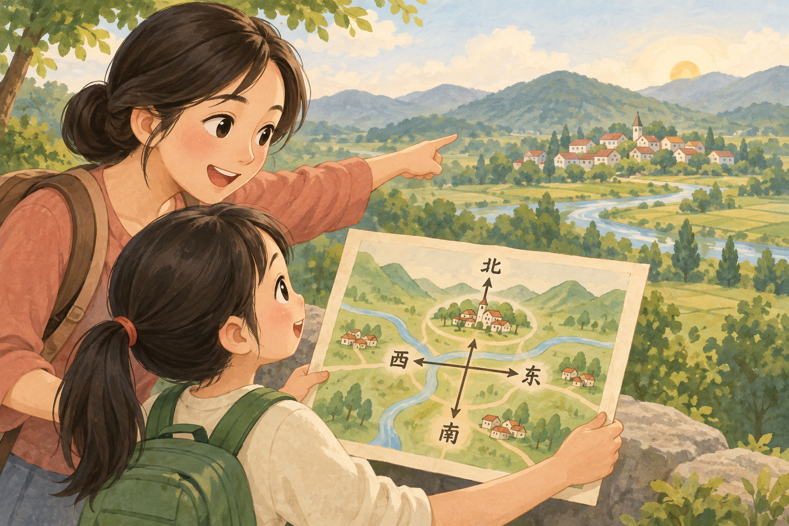
地图上有东、西、南、北。妈妈指着远方，说那里是我们的家乡。
生成提示词
Use case: illustration-story. One finished landscape 3:2 picture-book illustration for a Chinese literacy app, ages 5–6. Warm cream, sage green and natural muted colors; soft hand-painted gouache texture, friendly expressive East Asian people where the story needs people, clear subjects readable on a phone, uncluttered background. Illustrate the exact Chinese story below, interpreting actions and relationships literally and accurately. Use one coherent scene unless the story explicitly needs successive moments; for a sequence use two or three clearly separated wordless narrative panels, consistent characters and setting. No titles, captions, lettering, numbers, speech bubbles, logos or watermarks. No flashcard grids. No additional narrative characters or unrelated props. Natural anatomy, clear hands and object contact, all important subjects fully in frame. Chapter: 地图上的方向. Exact story (do not print text): 地图上有东、西、南、北。妈妈指着远方，说那里是我们的家乡。 Specific requirement overrides general no-text rule where stated: Only text allowed: compass directions 北 at TOP, 南 at BOTTOM, 西 at LEFT, 东 at RIGHT on a simple paper map. All four characters correct, no other letters or text. Mother points toward a distant hometown shown on map.
C069 · 近处和转弯处
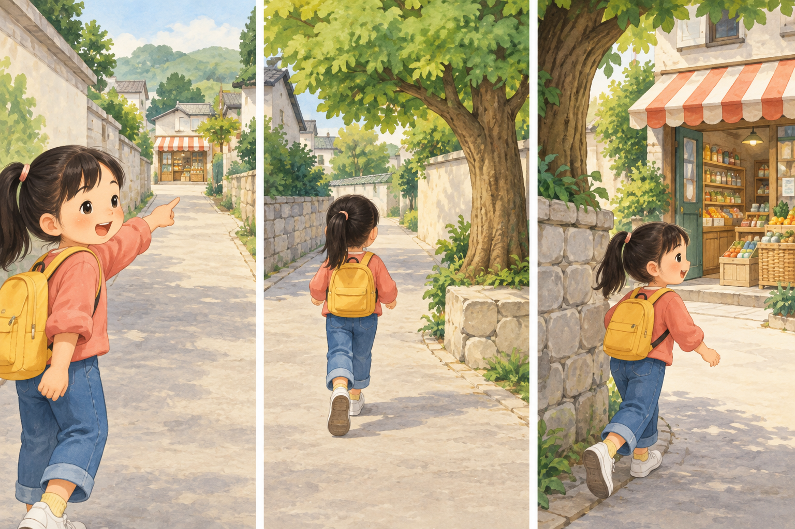
商店就在近处。沿路直走，到树旁再转弯，就能看见。
生成提示词
Use case: illustration-story. One finished landscape 3:2 picture-book illustration for a Chinese literacy app, ages 5–6. Warm cream, sage green and natural muted colors; soft hand-painted gouache texture, friendly expressive East Asian people where the story needs people, clear subjects readable on a phone, uncluttered background. Illustrate the exact Chinese story below, interpreting actions and relationships literally and accurately. Use one coherent scene unless the story explicitly needs successive moments; for a sequence use two or three clearly separated wordless narrative panels, consistent characters and setting. No titles, captions, lettering, numbers, speech bubbles, logos or watermarks. No flashcard grids. No additional narrative characters or unrelated props. Natural anatomy, clear hands and object contact, all important subjects fully in frame. Chapter: 近处和转弯处. Exact story (do not print text): 商店就在近处。沿路直走，到树旁再转弯，就能看见。
C070 · 和家人去买菜
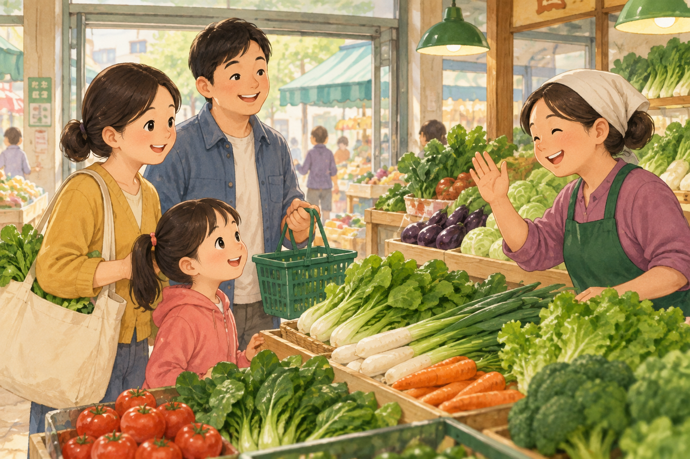
城市里的菜市场开门了。我和家人进店买菜，卖菜的人向我们问好。
生成提示词
Use case: illustration-story. One finished landscape 3:2 picture-book illustration for a Chinese literacy app, ages 5–6. Warm cream, sage green and natural muted colors; soft hand-painted gouache texture, friendly expressive East Asian people where the story needs people, clear subjects readable on a phone, uncluttered background. Illustrate the exact Chinese story below, interpreting actions and relationships literally and accurately. Use one coherent scene unless the story explicitly needs successive moments; for a sequence use two or three clearly separated wordless narrative panels, consistent characters and setting. No titles, captions, lettering, numbers, speech bubbles, logos or watermarks. No flashcard grids. No additional narrative characters or unrelated props. Natural anatomy, clear hands and object contact, all important subjects fully in frame. Chapter: 和家人去买菜. Exact story (do not print text): 城市里的菜市场开门了。我和家人进店买菜，卖菜的人向我们问好。
C071 · 超市里选东西
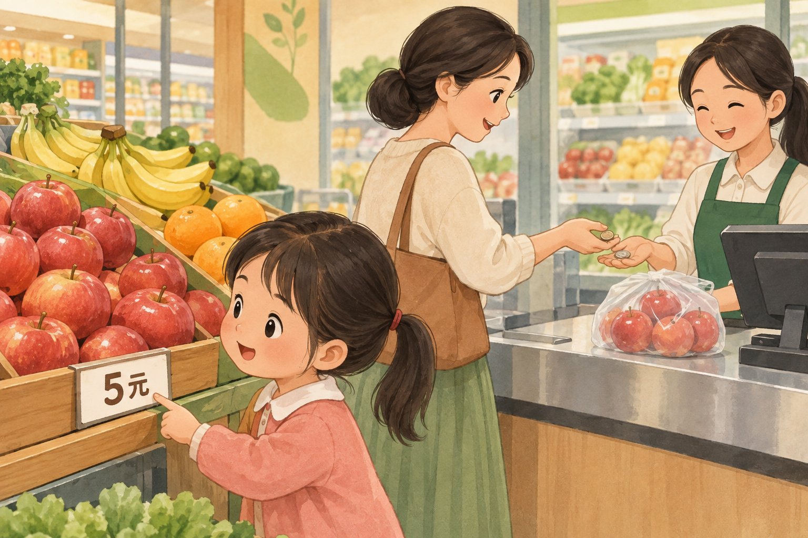
超市货架上有水果。妈妈拿出零钱付款，我看见价签上的“元”。
生成提示词
Use case: illustration-story. One finished landscape 3:2 picture-book illustration for a Chinese literacy app, ages 5–6. Warm cream, sage green and natural muted colors; soft hand-painted gouache texture, friendly expressive East Asian people where the story needs people, clear subjects readable on a phone, uncluttered background. Illustrate the exact Chinese story below, interpreting actions and relationships literally and accurately. Use one coherent scene unless the story explicitly needs successive moments; for a sequence use two or three clearly separated wordless narrative panels, consistent characters and setting. No titles, captions, lettering, numbers, speech bubbles, logos or watermarks. No flashcard grids. No additional narrative characters or unrelated props. Natural anatomy, clear hands and object contact, all important subjects fully in frame. Chapter: 超市里选东西. Exact story (do not print text): 超市货架上有水果。妈妈拿出零钱付款，我看见价签上的“元”。 Specific requirement overrides general no-text rule where stated: The only lettering is a clear price tag reading 5元 beneath fruit. Mother paying cashier with coins, child looking at tag.
C072 · 认识街边商铺
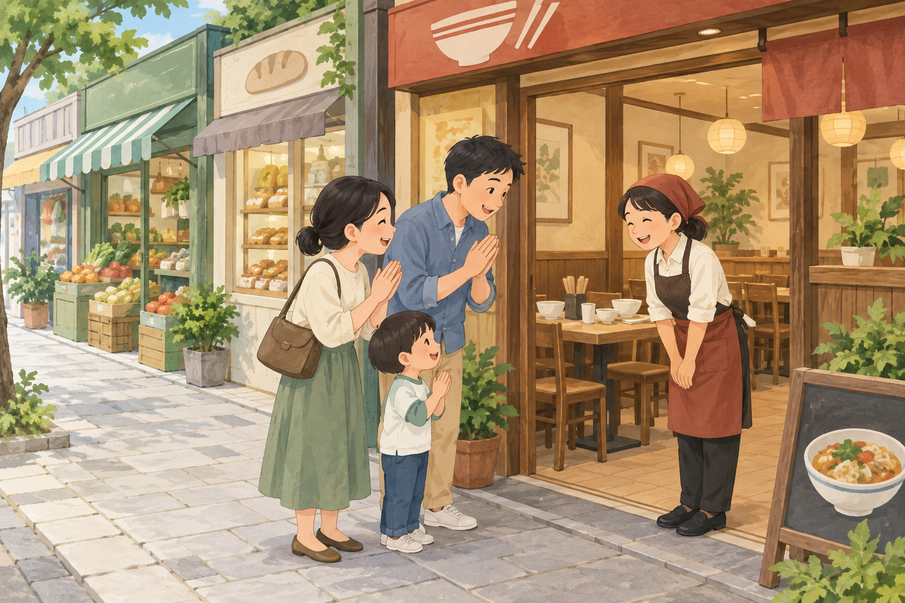
街边有商铺和饭馆。餐厅的客人吃完饭，向店员道谢。
生成提示词
Use case: illustration-story. One finished landscape 3:2 picture-book illustration for a Chinese literacy app, ages 5–6. Warm cream, sage green and natural muted colors; soft hand-painted gouache texture, friendly expressive East Asian people where the story needs people, clear subjects readable on a phone, uncluttered background. Illustrate the exact Chinese story below, interpreting actions and relationships literally and accurately. Use one coherent scene unless the story explicitly needs successive moments; for a sequence use two or three clearly separated wordless narrative panels, consistent characters and setting. No titles, captions, lettering, numbers, speech bubbles, logos or watermarks. No flashcard grids. No additional narrative characters or unrelated props. Natural anatomy, clear hands and object contact, all important subjects fully in frame. Chapter: 认识街边商铺. Exact story (do not print text): 街边有商铺和饭馆。餐厅的客人吃完饭，向店员道谢。
C073 · 小区里的邻居
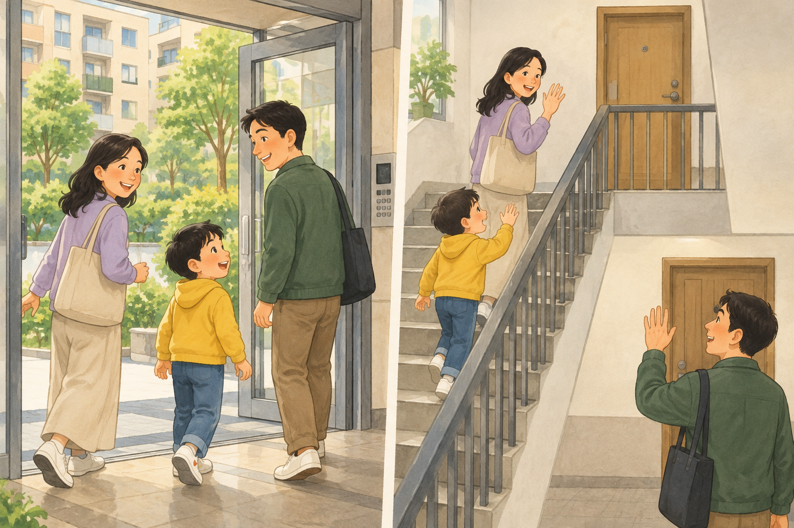
邻居住在同一小区。我们一起进楼，到了各自住的楼层再见。
生成提示词
Use case: illustration-story. One finished landscape 3:2 picture-book illustration for a Chinese literacy app, ages 5–6. Warm cream, sage green and natural muted colors; soft hand-painted gouache texture, friendly expressive East Asian people where the story needs people, clear subjects readable on a phone, uncluttered background. Illustrate the exact Chinese story below, interpreting actions and relationships literally and accurately. Use one coherent scene unless the story explicitly needs successive moments; for a sequence use two or three clearly separated wordless narrative panels, consistent characters and setting. No titles, captions, lettering, numbers, speech bubbles, logos or watermarks. No flashcard grids. No additional narrative characters or unrelated props. Natural anatomy, clear hands and object contact, all important subjects fully in frame. Chapter: 小区里的邻居. Exact story (do not print text): 邻居住在同一小区。我们一起进楼，到了各自住的楼层再见。
C074 · 去医院看病
在医院，医生看了我的情况。药和针都由专业的大人安排，我不自己拿药吃。
生成提示词
Use case: illustration-story. One finished landscape 3:2 picture-book illustration for a Chinese literacy app, ages 5–6. Warm cream, sage green and natural muted colors; soft hand-painted gouache texture, friendly expressive East Asian people where the story needs people, clear subjects readable on a phone, uncluttered background. Illustrate the exact Chinese story below, interpreting actions and relationships literally and accurately. Use one coherent scene unless the story explicitly needs successive moments; for a sequence use two or three clearly separated wordless narrative panels, consistent characters and setting. No titles, captions, lettering, numbers, speech bubbles, logos or watermarks. No flashcard grids. No additional narrative characters or unrelated props. Natural anatomy, clear hands and object contact, all important subjects fully in frame. Chapter: 去医院看病. Exact story (do not print text): 在医院，医生看了我的情况。药和针都由专业的大人安排，我不自己拿药吃。
C075 · 认识帮助我们的人
警察帮助问路的人，消防员讲防火知识。我们认真听。
生成提示词
Use case: illustration-story. One finished landscape 3:2 picture-book illustration for a Chinese literacy app, ages 5–6. Warm cream, sage green and natural muted colors; soft hand-painted gouache texture, friendly expressive East Asian people where the story needs people, clear subjects readable on a phone, uncluttered background. Illustrate the exact Chinese story below, interpreting actions and relationships literally and accurately. Use one coherent scene unless the story explicitly needs successive moments; for a sequence use two or three clearly separated wordless narrative panels, consistent characters and setting. No titles, captions, lettering, numbers, speech bubbles, logos or watermarks. No flashcard grids. No additional narrative characters or unrelated props. Natural anatomy, clear hands and object contact, all important subjects fully in frame. Chapter: 认识帮助我们的人. Exact story (do not print text): 警察帮助问路的人，消防员讲防火知识。我们认真听。
C076 · 认识公共服务
我和家人去邮局寄信，再到银行办事。信会送到远方的朋友手里。
生成提示词
Use case: illustration-story. One finished landscape 3:2 picture-book illustration for a Chinese literacy app, ages 5–6. Warm cream, sage green and natural muted colors; soft hand-painted gouache texture, friendly expressive East Asian people where the story needs people, clear subjects readable on a phone, uncluttered background. Illustrate the exact Chinese story below, interpreting actions and relationships literally and accurately. Use one coherent scene unless the story explicitly needs successive moments; for a sequence use two or three clearly separated wordless narrative panels, consistent characters and setting. No titles, captions, lettering, numbers, speech bubbles, logos or watermarks. No flashcard grids. No additional narrative characters or unrelated props. Natural anatomy, clear hands and object contact, all important subjects fully in frame. Chapter: 认识公共服务. Exact story (do not print text): 我和家人去邮局寄信，再到银行办事。信会送到远方的朋友手里。
C077 · 旅行的行李
旅行前，我把衣服放进箱子，把雨伞放进袋子，准备出门游玩。
生成提示词
Use case: illustration-story. Landscape 3:2 warm cream and sage gouache children's picture book. Exact story: 旅行前，我把衣服放进箱子，把雨伞放进袋子，准备出门游玩。 THREE DISTINCT PANELS separated by wide white gutters, showing same East Asian girl in lavender striped shirt. Panel 1: girl uses her TWO hands to put folded yellow shirt into open suitcase. Panel 2: girl uses ONE hand to lower closed blue umbrella into green travel bag, OTHER hand holds bag handle. Panel 3: girl fully dressed beside front door, carrying green bag in one hand and wheeled suitcase handle in other. EXACTLY TWO ARMS AND TWO HANDS for girl in EACH panel. NO floating hands, no actions superimposed in same panel, no extra people. Clear object contact. Consistent yellow shirt, blue umbrella, green bag and grey suitcase. No lettering, captions, logos or watermark.
C078 · 守护我们的城市
从城市到小镇，再到乡村，我们看见祖国不同地方的生活。
生成提示词
Use case: illustration-story. One finished landscape 3:2 picture-book illustration for a Chinese literacy app, ages 5–6. Warm cream, sage green and natural muted colors; soft hand-painted gouache texture, friendly expressive East Asian people where the story needs people, clear subjects readable on a phone, uncluttered background. Illustrate the exact Chinese story below, interpreting actions and relationships literally and accurately. Use one coherent scene unless the story explicitly needs successive moments; for a sequence use two or three clearly separated wordless narrative panels, consistent characters and setting. No titles, captions, lettering, numbers, speech bubbles, logos or watermarks. No flashcard grids. No additional narrative characters or unrelated props. Natural anatomy, clear hands and object contact, all important subjects fully in frame. Chapter: 守护我们的城市. Exact story (do not print text): 从城市到小镇，再到乡村，我们看见祖国不同地方的生活。
C079 · 看懂安全标志
标志上写着“禁止入内”。我看懂提示，停下来，和大人换一条路。
生成提示词
Use case: illustration-story. One finished landscape 3:2 picture-book illustration for a Chinese literacy app, ages 5–6. Warm cream, sage green and natural muted colors; soft hand-painted gouache texture, friendly expressive East Asian people where the story needs people, clear subjects readable on a phone, uncluttered background. Illustrate the exact Chinese story below, interpreting actions and relationships literally and accurately. Use one coherent scene unless the story explicitly needs successive moments; for a sequence use two or three clearly separated wordless narrative panels, consistent characters and setting. No titles, captions, lettering, numbers, speech bubbles, logos or watermarks. No flashcard grids. No additional narrative characters or unrelated props. Natural anatomy, clear hands and object contact, all important subjects fully in frame. Chapter: 看懂安全标志. Exact story (do not print text): 标志上写着“禁止入内”。我看懂提示，停下来，和大人换一条路。 Specific requirement overrides general no-text rule where stated: The only text is exactly 禁止入内 on a clear barrier sign. Adult and child STOP outside barrier and choose another open path. Never show them entering restricted area.
C080 · 安全到家
我们遵守规则，保护自己和同伴，一起平安回家。
生成提示词
Use case: illustration-story. One finished landscape 3:2 picture-book illustration for a Chinese literacy app, ages 5–6. Warm cream, sage green and natural muted colors; soft hand-painted gouache texture, friendly expressive East Asian people where the story needs people, clear subjects readable on a phone, uncluttered background. Illustrate the exact Chinese story below, interpreting actions and relationships literally and accurately. Use one coherent scene unless the story explicitly needs successive moments; for a sequence use two or three clearly separated wordless narrative panels, consistent characters and setting. No titles, captions, lettering, numbers, speech bubbles, logos or watermarks. No flashcard grids. No additional narrative characters or unrelated props. Natural anatomy, clear hands and object contact, all important subjects fully in frame. Chapter: 安全到家. Exact story (do not print text): 我们遵守规则，保护自己和同伴，一起平安回家。
C081 · 认识我的亲人
爷爷和奶奶看书，哥哥和姐姐收玩具，弟弟把球放回去。
生成提示词
Use case: illustration-story. One finished landscape 3:2 picture-book illustration for a Chinese literacy app, ages 5–6. Warm cream, sage green and natural muted colors; soft hand-painted gouache texture, friendly expressive East Asian people where the story needs people, clear subjects readable on a phone, uncluttered background. Illustrate the exact Chinese story below, interpreting actions and relationships literally and accurately. Use one coherent scene unless the story explicitly needs successive moments; for a sequence use two or three clearly separated wordless narrative panels, consistent characters and setting. No titles, captions, lettering, numbers, speech bubbles, logos or watermarks. No flashcard grids. No additional narrative characters or unrelated props. Natural anatomy, clear hands and object contact, all important subjects fully in frame. Chapter: 认识我的亲人. Exact story (do not print text): 爷爷和奶奶看书，哥哥和姐姐收玩具，弟弟把球放回去。
C082 · 一家人团聚
妹妹和叔叔打招呼，阿姨和伯伯也来了。亲人们坐在一起聊天。
生成提示词
Use case: illustration-story. Landscape 3:2 warm gouache children's book illustration, cream and sage muted colors. Exact story: 妹妹和叔叔打招呼，阿姨和伯伯也来了。亲人们坐在一起聊天。 TWO clearly separated panels with white gutter. Left: little East Asian girl in pink dress greeting her uncle at front door; aunt and older uncle stand behind him. Girl waves with ONE raised hand; her OTHER arm rests straight down beside dress. EXACTLY TWO arms and TWO hands per person, no duplicated hands or ghost limbs. Right: SAME FOUR PEOPLE sit around a low table chatting, little girl pink dress, young uncle blue shirt, aunt tan jacket, older uncle green jacket with glasses. Simple cozy home, all figures clearly separate and well formed, no extra relatives, no lettering, no logos or watermarks.
C083 · 一起长大的家人
每个孩子都有自己的名字。儿童活动开始前，我找到写着我名字的字卡。
生成提示词
Use case: illustration-story. Warm gouache landscape 3:2 illustration for 5–6-year-old Chinese literacy. Exact story: 每个孩子都有自己的名字。儿童活动开始前，我找到写着我名字的字卡。 One East Asian girl wearing lavender top, at children's activity classroom table, holds ONE name card with both hands and smiles. Card faces viewer, text EXACTLY 小雨 in large crisp correct black Simplified Chinese. TWO other cards on table, text EXACTLY 小明 and 乐乐 respectively. These six Chinese characters are the ONLY text in image; no extra letters. Girl has exactly two arms, two hands. Friendly cream/sage soft painted texture, card names prominent and readable. No captions, watermark or logos.
C084 · 我家的房间
我家有客厅、厨房和卧室。房间的墙上挂着一张画。
生成提示词
Use case: illustration-story. One finished landscape 3:2 picture-book illustration for a Chinese literacy app, ages 5–6. Warm cream, sage green and natural muted colors; soft hand-painted gouache texture, friendly expressive East Asian people where the story needs people, clear subjects readable on a phone, uncluttered background. Illustrate the exact Chinese story below, interpreting actions and relationships literally and accurately. Use one coherent scene unless the story explicitly needs successive moments; for a sequence use two or three clearly separated wordless narrative panels, consistent characters and setting. No titles, captions, lettering, numbers, speech bubbles, logos or watermarks. No flashcard grids. No additional narrative characters or unrelated props. Natural anatomy, clear hands and object contact, all important subjects fully in frame. Chapter: 我家的房间. Exact story (do not print text): 我家有客厅、厨房和卧室。房间的墙上挂着一张画。
C085 · 家里的电器
电视正在播放音乐，音响传来歌声。天热了，大人打开电风扇。
生成提示词
Use case: illustration-story. One finished landscape 3:2 picture-book illustration for a Chinese literacy app, ages 5–6. Warm cream, sage green and natural muted colors; soft hand-painted gouache texture, friendly expressive East Asian people where the story needs people, clear subjects readable on a phone, uncluttered background. Illustrate the exact Chinese story below, interpreting actions and relationships literally and accurately. Use one coherent scene unless the story explicitly needs successive moments; for a sequence use two or three clearly separated wordless narrative panels, consistent characters and setting. No titles, captions, lettering, numbers, speech bubbles, logos or watermarks. No flashcard grids. No additional narrative characters or unrelated props. Natural anatomy, clear hands and object contact, all important subjects fully in frame. Chapter: 家里的电器. Exact story (do not print text): 电视正在播放音乐，音响传来歌声。天热了，大人打开电风扇。
C086 · 谁在厨房忙
厨房有锅、刀和叉，架上有瓶和罐。尖利的工具交给大人使用。
生成提示词
Use case: illustration-story. One finished landscape 3:2 picture-book illustration for a Chinese literacy app, ages 5–6. Warm cream, sage green and natural muted colors; soft hand-painted gouache texture, friendly expressive East Asian people where the story needs people, clear subjects readable on a phone, uncluttered background. Illustrate the exact Chinese story below, interpreting actions and relationships literally and accurately. Use one coherent scene unless the story explicitly needs successive moments; for a sequence use two or three clearly separated wordless narrative panels, consistent characters and setting. No titles, captions, lettering, numbers, speech bubbles, logos or watermarks. No flashcard grids. No additional narrative characters or unrelated props. Natural anatomy, clear hands and object contact, all important subjects fully in frame. Chapter: 谁在厨房忙. Exact story (do not print text): 厨房有锅、刀和叉，架上有瓶和罐。尖利的工具交给大人使用。
C087 · 做一顿好吃的
大人切菜、炒菜、煮汤，又蒸了蛋、烤了饼。我在安全的地方等开饭。
生成提示词
Use case: illustration-story. One finished landscape 3:2 picture-book illustration for a Chinese literacy app, ages 5–6. Warm cream, sage green and natural muted colors; soft hand-painted gouache texture, friendly expressive East Asian people where the story needs people, clear subjects readable on a phone, uncluttered background. Illustrate the exact Chinese story below, interpreting actions and relationships literally and accurately. Use one coherent scene unless the story explicitly needs successive moments; for a sequence use two or three clearly separated wordless narrative panels, consistent characters and setting. No titles, captions, lettering, numbers, speech bubbles, logos or watermarks. No flashcard grids. No additional narrative characters or unrelated props. Natural anatomy, clear hands and object contact, all important subjects fully in frame. Chapter: 做一顿好吃的. Exact story (do not print text): 大人切菜、炒菜、煮汤，又蒸了蛋、烤了饼。我在安全的地方等开饭。
C088 · 食物的味道
水果有甜味和酸味，苦瓜有点苦。辣椒辣，汤里加盐会有咸味。
生成提示词
Use case: illustration-story. One finished landscape 3:2 picture-book illustration for a Chinese literacy app, ages 5–6. Warm cream, sage green and natural muted colors; soft hand-painted gouache texture, friendly expressive East Asian people where the story needs people, clear subjects readable on a phone, uncluttered background. Illustrate the exact Chinese story below, interpreting actions and relationships literally and accurately. Use one coherent scene unless the story explicitly needs successive moments; for a sequence use two or three clearly separated wordless narrative panels, consistent characters and setting. No titles, captions, lettering, numbers, speech bubbles, logos or watermarks. No flashcard grids. No additional narrative characters or unrelated props. Natural anatomy, clear hands and object contact, all important subjects fully in frame. Chapter: 食物的味道. Exact story (do not print text): 水果有甜味和酸味，苦瓜有点苦。辣椒辣，汤里加盐会有咸味。
C089 · 水果篮子
篮子里有苹果、梨和瓜，旁边放着红枣和草莓。我们洗好再吃。
生成提示词
Use case: illustration-story. One finished landscape 3:2 picture-book illustration for a Chinese literacy app, ages 5–6. Warm cream, sage green and natural muted colors; soft hand-painted gouache texture, friendly expressive East Asian people where the story needs people, clear subjects readable on a phone, uncluttered background. Illustrate the exact Chinese story below, interpreting actions and relationships literally and accurately. Use one coherent scene unless the story explicitly needs successive moments; for a sequence use two or three clearly separated wordless narrative panels, consistent characters and setting. No titles, captions, lettering, numbers, speech bubbles, logos or watermarks. No flashcard grids. No additional narrative characters or unrelated props. Natural anatomy, clear hands and object contact, all important subjects fully in frame. Chapter: 水果篮子. Exact story (do not print text): 篮子里有苹果、梨和瓜，旁边放着红枣和草莓。我们洗好再吃。
C091 · 果园和菜园
菜园里有萝卜和豆子，果园里有橘子。我把蔬菜和水果分开放好。
生成提示词
Use case: illustration-story. One finished landscape 3:2 picture-book illustration for a Chinese literacy app, ages 5–6. Warm cream, sage green and natural muted colors; soft hand-painted gouache texture, friendly expressive East Asian people where the story needs people, clear subjects readable on a phone, uncluttered background. Illustrate the exact Chinese story below, interpreting actions and relationships literally and accurately. Use one coherent scene unless the story explicitly needs successive moments; for a sequence use two or three clearly separated wordless narrative panels, consistent characters and setting. No titles, captions, lettering, numbers, speech bubbles, logos or watermarks. No flashcard grids. No additional narrative characters or unrelated props. Natural anatomy, clear hands and object contact, all important subjects fully in frame. Chapter: 果园和菜园. Exact story (do not print text): 菜园里有萝卜和豆子，果园里有橘子。我把蔬菜和水果分开放好。
C092 · 厨房里的蔬菜
篮子里有茄子、辣椒和红薯。大人切好葱和蒜，准备做菜。
生成提示词
Use case: illustration-story. One finished landscape 3:2 picture-book illustration for a Chinese literacy app, ages 5–6. Warm cream, sage green and natural muted colors; soft hand-painted gouache texture, friendly expressive East Asian people where the story needs people, clear subjects readable on a phone, uncluttered background. Illustrate the exact Chinese story below, interpreting actions and relationships literally and accurately. Use one coherent scene unless the story explicitly needs successive moments; for a sequence use two or three clearly separated wordless narrative panels, consistent characters and setting. No titles, captions, lettering, numbers, speech bubbles, logos or watermarks. No flashcard grids. No additional narrative characters or unrelated props. Natural anatomy, clear hands and object contact, all important subjects fully in frame. Chapter: 厨房里的蔬菜. Exact story (do not print text): 篮子里有茄子、辣椒和红薯。大人切好葱和蒜，准备做菜。
C093 · 早餐真丰富
早餐有鸡蛋、肉包和牛乳。桌上还有大人的茶和一碗温汤。
生成提示词
Use case: illustration-story. One finished landscape 3:2 picture-book illustration for a Chinese literacy app, ages 5–6. Warm cream, sage green and natural muted colors; soft hand-painted gouache texture, friendly expressive East Asian people where the story needs people, clear subjects readable on a phone, uncluttered background. Illustrate the exact Chinese story below, interpreting actions and relationships literally and accurately. Use one coherent scene unless the story explicitly needs successive moments; for a sequence use two or three clearly separated wordless narrative panels, consistent characters and setting. No titles, captions, lettering, numbers, speech bubbles, logos or watermarks. No flashcard grids. No additional narrative characters or unrelated props. Natural anatomy, clear hands and object contact, all important subjects fully in frame. Chapter: 早餐真丰富. Exact story (do not print text): 早餐有鸡蛋、肉包和牛乳。桌上还有大人的茶和一碗温汤。
C094 · 面点和零食
面店有饼、糕、饺子和米粉。我们挑好正餐，糖果留着偶尔少量吃。
生成提示词
Use case: illustration-story. One finished landscape 3:2 picture-book illustration for a Chinese literacy app, ages 5–6. Warm cream, sage green and natural muted colors; soft hand-painted gouache texture, friendly expressive East Asian people where the story needs people, clear subjects readable on a phone, uncluttered background. Illustrate the exact Chinese story below, interpreting actions and relationships literally and accurately. Use one coherent scene unless the story explicitly needs successive moments; for a sequence use two or three clearly separated wordless narrative panels, consistent characters and setting. No titles, captions, lettering, numbers, speech bubbles, logos or watermarks. No flashcard grids. No additional narrative characters or unrelated props. Natural anatomy, clear hands and object contact, all important subjects fully in frame. Chapter: 面点和零食. Exact story (do not print text): 面店有饼、糕、饺子和米粉。我们挑好正餐，糖果留着偶尔少量吃。
C095 · 食物从哪里来
农民在田里种谷子和小麦。粮食经过许多人的劳动，来到饭桌上。
生成提示词
Use case: illustration-story. One finished landscape 3:2 picture-book illustration for a Chinese literacy app, ages 5–6. Warm cream, sage green and natural muted colors; soft hand-painted gouache texture, friendly expressive East Asian people where the story needs people, clear subjects readable on a phone, uncluttered background. Illustrate the exact Chinese story below, interpreting actions and relationships literally and accurately. Use one coherent scene unless the story explicitly needs successive moments; for a sequence use two or three clearly separated wordless narrative panels, consistent characters and setting. No titles, captions, lettering, numbers, speech bubbles, logos or watermarks. No flashcard grids. No additional narrative characters or unrelated props. Natural anatomy, clear hands and object contact, all important subjects fully in frame. Chapter: 食物从哪里来. Exact story (do not print text): 农民在田里种谷子和小麦。粮食经过许多人的劳动，来到饭桌上。
C096 · 珍惜每一口
饿了吃饭，渴了喝水。吃饱了就停，盛饭先少量，减少剩饭和浪费。
生成提示词
Use case: illustration-story. One finished landscape 3:2 picture-book illustration for a Chinese literacy app, ages 5–6. Warm cream, sage green and natural muted colors; soft hand-painted gouache texture, friendly expressive East Asian people where the story needs people, clear subjects readable on a phone, uncluttered background. Illustrate the exact Chinese story below, interpreting actions and relationships literally and accurately. Use one coherent scene unless the story explicitly needs successive moments; for a sequence use two or three clearly separated wordless narrative panels, consistent characters and setting. No titles, captions, lettering, numbers, speech bubbles, logos or watermarks. No flashcard grids. No additional narrative characters or unrelated props. Natural anatomy, clear hands and object contact, all important subjects fully in frame. Chapter: 珍惜每一口. Exact story (do not print text): 饿了吃饭，渴了喝水。吃饱了就停，盛饭先少量，减少剩饭和浪费。
C098 · 衣服放哪里
书放书架，衣服放柜子。晒干的衣服，有的挂起来，有的叠好。
生成提示词
Use case: illustration-story. One finished landscape 3:2 picture-book illustration for a Chinese literacy app, ages 5–6. Warm cream, sage green and natural muted colors; soft hand-painted gouache texture, friendly expressive East Asian people where the story needs people, clear subjects readable on a phone, uncluttered background. Illustrate the exact Chinese story below, interpreting actions and relationships literally and accurately. Use one coherent scene unless the story explicitly needs successive moments; for a sequence use two or three clearly separated wordless narrative panels, consistent characters and setting. No titles, captions, lettering, numbers, speech bubbles, logos or watermarks. No flashcard grids. No additional narrative characters or unrelated props. Natural anatomy, clear hands and object contact, all important subjects fully in frame. Chapter: 衣服放哪里. Exact story (do not print text): 书放书架，衣服放柜子。晒干的衣服，有的挂起来，有的叠好。
C099 · 让屋子更舒服
厚被子和薄被子摸起来都软。硬盒子放在旁边，我轻轻关上盖子。
生成提示词
Use case: illustration-story. One finished landscape 3:2 picture-book illustration for a Chinese literacy app, ages 5–6. Warm cream, sage green and natural muted colors; soft hand-painted gouache texture, friendly expressive East Asian people where the story needs people, clear subjects readable on a phone, uncluttered background. Illustrate the exact Chinese story below, interpreting actions and relationships literally and accurately. Use one coherent scene unless the story explicitly needs successive moments; for a sequence use two or three clearly separated wordless narrative panels, consistent characters and setting. No titles, captions, lettering, numbers, speech bubbles, logos or watermarks. No flashcard grids. No additional narrative characters or unrelated props. Natural anatomy, clear hands and object contact, all important subjects fully in frame. Chapter: 让屋子更舒服. Exact story (do not print text): 厚被子和薄被子摸起来都软。硬盒子放在旁边，我轻轻关上盖子。
C100 · 小小修理员
旧书破了一页，我请大人一起修补。坏玩具也先看看能不能修好。
生成提示词
Use case: illustration-story. One finished landscape 3:2 picture-book illustration for a Chinese literacy app, ages 5–6. Warm cream, sage green and natural muted colors; soft hand-painted gouache texture, friendly expressive East Asian people where the story needs people, clear subjects readable on a phone, uncluttered background. Illustrate the exact Chinese story below, interpreting actions and relationships literally and accurately. Use one coherent scene unless the story explicitly needs successive moments; for a sequence use two or three clearly separated wordless narrative panels, consistent characters and setting. No titles, captions, lettering, numbers, speech bubbles, logos or watermarks. No flashcard grids. No additional narrative characters or unrelated props. Natural anatomy, clear hands and object contact, all important subjects fully in frame. Chapter: 小小修理员. Exact story (do not print text): 旧书破了一页，我请大人一起修补。坏玩具也先看看能不能修好。
C101 · 时间的名字
昨天我和家人看日历，今天圈出今年的生日，明天再一起准备。
生成提示词
Use case: illustration-story. One finished landscape 3:2 picture-book illustration for a Chinese literacy app, ages 5–6. Warm cream, sage green and natural muted colors; soft hand-painted gouache texture, friendly expressive East Asian people where the story needs people, clear subjects readable on a phone, uncluttered background. Illustrate the exact Chinese story below, interpreting actions and relationships literally and accurately. Use one coherent scene unless the story explicitly needs successive moments; for a sequence use two or three clearly separated wordless narrative panels, consistent characters and setting. No titles, captions, lettering, numbers, speech bubbles, logos or watermarks. No flashcard grids. No additional narrative characters or unrelated props. Natural anatomy, clear hands and object contact, all important subjects fully in frame. Chapter: 时间的名字. Exact story (do not print text): 昨天我和家人看日历，今天圈出今年的生日，明天再一起准备。 Specific composition (allow exact text when requested, overriding no-text rule): Three wordless panels, same parent and child: yesterday look together at wall calendar; today circle birthday square with a small cake icon; tomorrow prepare colorful birthday decorations. Only a few simple calendar squares in focus, do not invent dense illegible text.
C102 · 看看日历
日历上有日期和星期。周末到了，我们给五岁的妹妹过生日，圈好那一天的号码。
生成提示词
Use case: illustration-story. One finished landscape 3:2 picture-book illustration for a Chinese literacy app, ages 5–6. Warm cream, sage green and natural muted colors; soft hand-painted gouache texture, friendly expressive East Asian people where the story needs people, clear subjects readable on a phone, uncluttered background. Illustrate the exact Chinese story below, interpreting actions and relationships literally and accurately. Use one coherent scene unless the story explicitly needs successive moments; for a sequence use two or three clearly separated wordless narrative panels, consistent characters and setting. No titles, captions, lettering, numbers, speech bubbles, logos or watermarks. No flashcard grids. No additional narrative characters or unrelated props. Natural anatomy, clear hands and object contact, all important subjects fully in frame. Chapter: 看看日历. Exact story (do not print text): 日历上有日期和星期。周末到了，我们给五岁的妹妹过生日，圈好那一天的号码。 Specific composition (allow exact text when requested, overriding no-text rule): Use a close-up single tear-off calendar page displaying exactly 星期六 on top and a large 26 in center, with red circle around 26. Family points to this date next to birthday cake with EXACTLY FIVE candles for little sister. These are the only words/numerals allowed.
C103 · 钟表滴答响
钟表上，秒针走得忙。长短不同的针帮助我们看几点、几分。
生成提示词
Use case: illustration-story. One finished landscape 3:2 picture-book illustration for a Chinese literacy app, ages 5–6. Warm cream, sage green and natural muted colors; soft hand-painted gouache texture, friendly expressive East Asian people where the story needs people, clear subjects readable on a phone, uncluttered background. Illustrate the exact Chinese story below, interpreting actions and relationships literally and accurately. Use one coherent scene unless the story explicitly needs successive moments; for a sequence use two or three clearly separated wordless narrative panels, consistent characters and setting. No titles, captions, lettering, numbers, speech bubbles, logos or watermarks. No flashcard grids. No additional narrative characters or unrelated props. Natural anatomy, clear hands and object contact, all important subjects fully in frame. Chapter: 钟表滴答响. Exact story (do not print text): 钟表上，秒针走得忙。长短不同的针帮助我们看几点、几分。 Specific composition (allow exact text when requested, overriding no-text rule): A clear round analog wall clock dominates scene: all numerals 1 through 12 appear ONCE at correct positions. Short hour hand points to 3, long minute hand points to 12, thin red second hand points to 6. Exactly three hands attached to same center. Child and adult observe. No additional text. Revision: all twelve numerals equally spaced, especially include 8 between 7 and 9. Verified corrected image.
C104 · 一天的安排
早晨我玩了一会儿，过了半天就到中午。夜晚来临，一天结束了。
生成提示词
Use case: illustration-story. One finished landscape 3:2 picture-book illustration for a Chinese literacy app, ages 5–6. Warm cream, sage green and natural muted colors; soft hand-painted gouache texture, friendly expressive East Asian people where the story needs people, clear subjects readable on a phone, uncluttered background. Illustrate the exact Chinese story below, interpreting actions and relationships literally and accurately. Use one coherent scene unless the story explicitly needs successive moments; for a sequence use two or three clearly separated wordless narrative panels, consistent characters and setting. No titles, captions, lettering, numbers, speech bubbles, logos or watermarks. No flashcard grids. No additional narrative characters or unrelated props. Natural anatomy, clear hands and object contact, all important subjects fully in frame. Chapter: 一天的安排. Exact story (do not print text): 早晨我玩了一会儿，过了半天就到中午。夜晚来临，一天结束了。
C105 · 数更多的东西
书里写着百、千、万，表示不同的数量。盒里原有两个球，拿走后是零个。
生成提示词
Landscape 3:2 warm gouache children's illustration with exactly TWO sequential panels. Left: open book shows ONLY large Chinese characters 百 千 万, no quantity diagrams, dots or blocks. Beside book shallow green box contains exactly TWO balls, red and blue. East Asian girl observes hands resting empty on table. Right: same girl holds one red ball in left hand, one blue ball in right hand, shallow green box now COMPLETELY EMPTY, fully visible empty inside. No extra balls anywhere. Two arms two hands per girl. Story: 书里写着百、千、万，表示不同的数量。盒里原有两个球，拿走后是零个。 No other text, arrows or numerals. Cream sage palette, clear object count and contact.
C106 · 数一数分一分
我数一数积木，加上两块就多了，拿走一块就减少了。
生成提示词
Use case: illustration-story. One finished landscape 3:2 picture-book illustration for a Chinese literacy app, ages 5–6. Warm cream, sage green and natural muted colors; soft hand-painted gouache texture, friendly expressive East Asian people where the story needs people, clear subjects readable on a phone, uncluttered background. Illustrate the exact Chinese story below, interpreting actions and relationships literally and accurately. Use one coherent scene unless the story explicitly needs successive moments; for a sequence use two or three clearly separated wordless narrative panels, consistent characters and setting. No titles, captions, lettering, numbers, speech bubbles, logos or watermarks. No flashcard grids. No additional narrative characters or unrelated props. Natural anatomy, clear hands and object contact, all important subjects fully in frame. Chapter: 数一数分一分. Exact story (do not print text): 我数一数积木，加上两块就多了，拿走一块就减少了。 Revision with original image reference: Correct this educational image only in the MIDDLE panel: remove BOTH blocks held in the child's hands. Keep the FIVE blocks in the row on the table, red yellow blue green purple, exactly as they are. Rest the child's empty hands flat on table behind the row. There must be exactly five blocks total in middle panel. Preserve left panel three blocks, right panel four blocks on table and fifth purple block in hand. Preserve style, characters and layout.
C107 · 买东西会比较
每人各拿几块饼干，再数一共多少。桌边放着一双筷子。
生成提示词
Use case: illustration-story. One finished landscape 3:2 picture-book illustration for a Chinese literacy app, ages 5–6. Warm cream, sage green and natural muted colors; soft hand-painted gouache texture, friendly expressive East Asian people where the story needs people, clear subjects readable on a phone, uncluttered background. Illustrate the exact Chinese story below, interpreting actions and relationships literally and accurately. Use one coherent scene unless the story explicitly needs successive moments; for a sequence use two or three clearly separated wordless narrative panels, consistent characters and setting. No titles, captions, lettering, numbers, speech bubbles, logos or watermarks. No flashcard grids. No additional narrative characters or unrelated props. Natural anatomy, clear hands and object contact, all important subjects fully in frame. Chapter: 买东西会比较. Exact story (do not print text): 每人各拿几块饼干，再数一共多少。桌边放着一双筷子。
C108 · 一份还是一堆
一只鸟站在一块石头上，旁边有一条小路。我把一片叶子画在一张纸上。
生成提示词
Use case: illustration-story. One finished landscape 3:2 picture-book illustration for a Chinese literacy app, ages 5–6. Warm cream, sage green and natural muted colors; soft hand-painted gouache texture, friendly expressive East Asian people where the story needs people, clear subjects readable on a phone, uncluttered background. Illustrate the exact Chinese story below, interpreting actions and relationships literally and accurately. Use one coherent scene unless the story explicitly needs successive moments; for a sequence use two or three clearly separated wordless narrative panels, consistent characters and setting. No titles, captions, lettering, numbers, speech bubbles, logos or watermarks. No flashcard grids. No additional narrative characters or unrelated props. Natural anatomy, clear hands and object contact, all important subjects fully in frame. Chapter: 一份还是一堆. Exact story (do not print text): 一只鸟站在一块石头上，旁边有一条小路。我把一片叶子画在一张纸上。
C109 · 大小和高矮
图里的胖熊和瘦猴一起走过宽路。高树旁有矮树，各有各的样子。
生成提示词
Use case: illustration-story. One finished landscape 3:2 picture-book illustration for a Chinese literacy app, ages 5–6. Warm cream, sage green and natural muted colors; soft hand-painted gouache texture, friendly expressive East Asian people where the story needs people, clear subjects readable on a phone, uncluttered background. Illustrate the exact Chinese story below, interpreting actions and relationships literally and accurately. Use one coherent scene unless the story explicitly needs successive moments; for a sequence use two or three clearly separated wordless narrative panels, consistent characters and setting. No titles, captions, lettering, numbers, speech bubbles, logos or watermarks. No flashcard grids. No additional narrative characters or unrelated props. Natural anatomy, clear hands and object contact, all important subjects fully in frame. Chapter: 大小和高矮. Exact story (do not print text): 图里的胖熊和瘦猴一起走过宽路。高树旁有矮树，各有各的样子。
C110 · 长短和深浅
短桥下的水有深有浅。我们留在岸上，低头看大人称石头的重量。
生成提示词
Use case: illustration-story. One finished landscape 3:2 picture-book illustration for a Chinese literacy app, ages 5–6. Warm cream, sage green and natural muted colors; soft hand-painted gouache texture, friendly expressive East Asian people where the story needs people, clear subjects readable on a phone, uncluttered background. Illustrate the exact Chinese story below, interpreting actions and relationships literally and accurately. Use one coherent scene unless the story explicitly needs successive moments; for a sequence use two or three clearly separated wordless narrative panels, consistent characters and setting. No titles, captions, lettering, numbers, speech bubbles, logos or watermarks. No flashcard grids. No additional narrative characters or unrelated props. Natural anatomy, clear hands and object contact, all important subjects fully in frame. Chapter: 长短和深浅. Exact story (do not print text): 短桥下的水有深有浅。我们留在岸上，低头看大人称石头的重量。
C111 · 认识形状
圆盘旁有正方形纸片，纸上的尖角碰着盘边。我把它们放在平桌上。
生成提示词
Use case: illustration-story. One finished landscape 3:2 picture-book illustration for a Chinese literacy app, ages 5–6. Warm cream, sage green and natural muted colors; soft hand-painted gouache texture, friendly expressive East Asian people where the story needs people, clear subjects readable on a phone, uncluttered background. Illustrate the exact Chinese story below, interpreting actions and relationships literally and accurately. Use one coherent scene unless the story explicitly needs successive moments; for a sequence use two or three clearly separated wordless narrative panels, consistent characters and setting. No titles, captions, lettering, numbers, speech bubbles, logos or watermarks. No flashcard grids. No additional narrative characters or unrelated props. Natural anatomy, clear hands and object contact, all important subjects fully in frame. Chapter: 认识形状. Exact story (do not print text): 圆盘旁有正方形纸片，纸上的尖角碰着盘边。我把它们放在平桌上。
C112 · 拼图和积木
我用积木拼出房子，再看图找相同的形状。屋顶和墙的形状不一样。
生成提示词
Use case: illustration-story. One finished landscape 3:2 picture-book illustration for a Chinese literacy app, ages 5–6. Warm cream, sage green and natural muted colors; soft hand-painted gouache texture, friendly expressive East Asian people where the story needs people, clear subjects readable on a phone, uncluttered background. Illustrate the exact Chinese story below, interpreting actions and relationships literally and accurately. Use one coherent scene unless the story explicitly needs successive moments; for a sequence use two or three clearly separated wordless narrative panels, consistent characters and setting. No titles, captions, lettering, numbers, speech bubbles, logos or watermarks. No flashcard grids. No additional narrative characters or unrelated props. Natural anatomy, clear hands and object contact, all important subjects fully in frame. Chapter: 拼图和积木. Exact story (do not print text): 我用积木拼出房子，再看图找相同的形状。屋顶和墙的形状不一样。
C113 · 找出不一样
两片叶子看着很像，仔细看却不一样。我们找出相同处和差异。
生成提示词
Use case: illustration-story. One finished landscape 3:2 picture-book illustration for a Chinese literacy app, ages 5–6. Warm cream, sage green and natural muted colors; soft hand-painted gouache texture, friendly expressive East Asian people where the story needs people, clear subjects readable on a phone, uncluttered background. Illustrate the exact Chinese story below, interpreting actions and relationships literally and accurately. Use one coherent scene unless the story explicitly needs successive moments; for a sequence use two or three clearly separated wordless narrative panels, consistent characters and setting. No titles, captions, lettering, numbers, speech bubbles, logos or watermarks. No flashcard grids. No additional narrative characters or unrelated props. Natural anatomy, clear hands and object contact, all important subjects fully in frame. Chapter: 找出不一样. Exact story (do not print text): 两片叶子看着很像，仔细看却不一样。我们找出相同处和差异。
C114 · 按顺序摆一摆
先找第一张图，再按顺序排到末尾。我从首先发生的事讲起。
生成提示词
Use case: illustration-story. One finished landscape 3:2 picture-book illustration for a Chinese literacy app, ages 5–6. Warm cream, sage green and natural muted colors; soft hand-painted gouache texture, friendly expressive East Asian people where the story needs people, clear subjects readable on a phone, uncluttered background. Illustrate the exact Chinese story below, interpreting actions and relationships literally and accurately. Use one coherent scene unless the story explicitly needs successive moments; for a sequence use two or three clearly separated wordless narrative panels, consistent characters and setting. No titles, captions, lettering, numbers, speech bubbles, logos or watermarks. No flashcard grids. No additional narrative characters or unrelated props. Natural anatomy, clear hands and object contact, all important subjects fully in frame. Chapter: 按顺序摆一摆. Exact story (do not print text): 先找第一张图，再按顺序排到末尾。我从首先发生的事讲起。
C115 · 量一量比一比
大人用尺量纸的尺寸，再用秤称盒子。我们比较哪个盒子重。
生成提示词
Use case: illustration-story. One finished landscape 3:2 picture-book illustration for a Chinese literacy app, ages 5–6. Warm cream, sage green and natural muted colors; soft hand-painted gouache texture, friendly expressive East Asian people where the story needs people, clear subjects readable on a phone, uncluttered background. Illustrate the exact Chinese story below, interpreting actions and relationships literally and accurately. Use one coherent scene unless the story explicitly needs successive moments; for a sequence use two or three clearly separated wordless narrative panels, consistent characters and setting. No titles, captions, lettering, numbers, speech bubbles, logos or watermarks. No flashcard grids. No additional narrative characters or unrelated props. Natural anatomy, clear hands and object contact, all important subjects fully in frame. Chapter: 量一量比一比. Exact story (do not print text): 大人用尺量纸的尺寸，再用秤称盒子。我们比较哪个盒子重。
C116 · 盒子里外找位置
盒内放满积木，盒外还有两块。里面装不下了，我们另找够大的盒子。
生成提示词
Use case: illustration-story. One finished landscape 3:2 picture-book illustration for a Chinese literacy app, ages 5–6. Warm cream, sage green and natural muted colors; soft hand-painted gouache texture, friendly expressive East Asian people where the story needs people, clear subjects readable on a phone, uncluttered background. Illustrate the exact Chinese story below, interpreting actions and relationships literally and accurately. Use one coherent scene unless the story explicitly needs successive moments; for a sequence use two or three clearly separated wordless narrative panels, consistent characters and setting. No titles, captions, lettering, numbers, speech bubbles, logos or watermarks. No flashcard grids. No additional narrative characters or unrelated props. Natural anatomy, clear hands and object contact, all important subjects fully in frame. Chapter: 盒子里外找位置. Exact story (do not print text): 盒内放满积木，盒外还有两块。里面装不下了，我们另找够大的盒子。
C117 · 做个小实验
我们试着把纸放进水里，观察变化，记录测量结果。小实验有了新发现。
生成提示词
Use case: illustration-story. One finished landscape 3:2 picture-book illustration for a Chinese literacy app, ages 5–6. Warm cream, sage green and natural muted colors; soft hand-painted gouache texture, friendly expressive East Asian people where the story needs people, clear subjects readable on a phone, uncluttered background. Illustrate the exact Chinese story below, interpreting actions and relationships literally and accurately. Use one coherent scene unless the story explicitly needs successive moments; for a sequence use two or three clearly separated wordless narrative panels, consistent characters and setting. No titles, captions, lettering, numbers, speech bubbles, logos or watermarks. No flashcard grids. No additional narrative characters or unrelated props. Natural anatomy, clear hands and object contact, all important subjects fully in frame. Chapter: 做个小实验. Exact story (do not print text): 我们试着把纸放进水里，观察变化，记录测量结果。小实验有了新发现。
C118 · 发现磁铁的秘密
大人拿来大块磁铁做演示，它吸住铁片。我推开盒子，再把盒子拉回来。
生成提示词
Use case: illustration-story. One finished landscape 3:2 picture-book illustration for a Chinese literacy app, ages 5–6. Warm cream, sage green and natural muted colors; soft hand-painted gouache texture, friendly expressive East Asian people where the story needs people, clear subjects readable on a phone, uncluttered background. Illustrate the exact Chinese story below, interpreting actions and relationships literally and accurately. Use one coherent scene unless the story explicitly needs successive moments; for a sequence use two or three clearly separated wordless narrative panels, consistent characters and setting. No titles, captions, lettering, numbers, speech bubbles, logos or watermarks. No flashcard grids. No additional narrative characters or unrelated props. Natural anatomy, clear hands and object contact, all important subjects fully in frame. Chapter: 发现磁铁的秘密. Exact story (do not print text): 大人拿来大块磁铁做演示，它吸住铁片。我推开盒子，再把盒子拉回来。
C119 · 水会变成什么
大人演示冰受热的变化：温度升高，冰慢慢化成水。冷下来，温度会下降。
生成提示词
Use case: illustration-story. One finished landscape 3:2 picture-book illustration for a Chinese literacy app, ages 5–6. Warm cream, sage green and natural muted colors; soft hand-painted gouache texture, friendly expressive East Asian people where the story needs people, clear subjects readable on a phone, uncluttered background. Illustrate the exact Chinese story below, interpreting actions and relationships literally and accurately. Use one coherent scene unless the story explicitly needs successive moments; for a sequence use two or three clearly separated wordless narrative panels, consistent characters and setting. No titles, captions, lettering, numbers, speech bubbles, logos or watermarks. No flashcard grids. No additional narrative characters or unrelated props. Natural anatomy, clear hands and object contact, all important subjects fully in frame. Chapter: 水会变成什么. Exact story (do not print text): 大人演示冰受热的变化：温度升高，冰慢慢化成水。冷下来，温度会下降。
C120 · 珍惜水和电
关好水龙头，离开时关灯。节省用水用电，可以减少浪费、珍惜资源。
生成提示词
Use case: illustration-story. Asset type: one finished landscape 3:2 picture-book scene for a Chinese literacy app, ages 5–6. Story to depict (do not print): 关好水龙头，离开时关灯。节省用水用电，可以减少浪费、珍惜资源。 Two clearly separated but connected wordless moments in the same cozy home: an East Asian child gently turns a faucet fully off, with the last drop stopped; then the same child flips a wall light switch off while leaving a room with an adult nearby. Make faucet and light switch large enough to read on a phone. Warm cream, sage green, natural muted colors, soft hand-painted gouache texture. Friendly expressive figures, natural anatomy and clear hand contact. No text, numbers, symbols, captions, watermarks, logos, speech bubbles or unrelated objects.
C121 · 很久以前的故事
从前有个古老的村子。故事里，一位仙女来到这里，发生了一件有趣的事。
生成提示词
Use case: illustration-story. One finished landscape 3:2 picture-book illustration for a Chinese literacy app, ages 5–6. Warm cream, sage green and natural muted colors; soft hand-painted gouache texture, friendly expressive East Asian people where the story needs people, clear subjects readable on a phone, uncluttered background. Illustrate the exact Chinese story below, interpreting actions and relationships literally and accurately. Use one coherent scene unless the story explicitly needs successive moments; for a sequence use two or three clearly separated wordless narrative panels, consistent characters and setting. No titles, captions, lettering, numbers, speech bubbles, logos or watermarks. No flashcard grids. No additional narrative characters or unrelated props. Natural anatomy, clear hands and object contact, all important subjects fully in frame. Chapter: 很久以前的故事. Exact story (do not print text): 从前有个古老的村子。故事里，一位仙女来到这里，发生了一件有趣的事。
C122 · 森林里的小屋
森林里有一座小屋，小熊住在里面。屋顶是红的，周围长着花。
生成提示词
Use case: illustration-story. One finished landscape 3:2 picture-book illustration for a Chinese literacy app, ages 5–6. Warm cream, sage green and natural muted colors; soft hand-painted gouache texture, friendly expressive East Asian people where the story needs people, clear subjects readable on a phone, uncluttered background. Illustrate the exact Chinese story below, interpreting actions and relationships literally and accurately. Use one coherent scene unless the story explicitly needs successive moments; for a sequence use two or three clearly separated wordless narrative panels, consistent characters and setting. No titles, captions, lettering, numbers, speech bubbles, logos or watermarks. No flashcard grids. No additional narrative characters or unrelated props. Natural anatomy, clear hands and object contact, all important subjects fully in frame. Chapter: 森林里的小屋. Exact story (do not print text): 森林里有一座小屋，小熊住在里面。屋顶是红的，周围长着花。
C123 · 快乐的生日
朋友来过生日，我很快乐。我喜欢大家一起唱歌，笑着欢迎每个人。
生成提示词
Use case: illustration-story. One finished landscape 3:2 picture-book illustration for a Chinese literacy app, ages 5–6. Warm cream, sage green and natural muted colors; soft hand-painted gouache texture, friendly expressive East Asian people where the story needs people, clear subjects readable on a phone, uncluttered background. Illustrate the exact Chinese story below, interpreting actions and relationships literally and accurately. Use one coherent scene unless the story explicitly needs successive moments; for a sequence use two or three clearly separated wordless narrative panels, consistent characters and setting. No titles, captions, lettering, numbers, speech bubbles, logos or watermarks. No flashcard grids. No additional narrative characters or unrelated props. Natural anatomy, clear hands and object contact, all important subjects fully in frame. Chapter: 快乐的生日. Exact story (do not print text): 朋友来过生日，我很快乐。我喜欢大家一起唱歌，笑着欢迎每个人。
C124 · 不开心的时候
积木倒了，我伤心地哭，眼泪掉下来。妈妈懂我的难过，陪我说出心里的疼。
生成提示词
Use case: illustration-story. One finished landscape 3:2 picture-book illustration for a Chinese literacy app, ages 5–6. Warm cream, sage green and natural muted colors; soft hand-painted gouache texture, friendly expressive East Asian people where the story needs people, clear subjects readable on a phone, uncluttered background. Illustrate the exact Chinese story below, interpreting actions and relationships literally and accurately. Use one coherent scene unless the story explicitly needs successive moments; for a sequence use two or three clearly separated wordless narrative panels, consistent characters and setting. No titles, captions, lettering, numbers, speech bubbles, logos or watermarks. No flashcard grids. No additional narrative characters or unrelated props. Natural anatomy, clear hands and object contact, all important subjects fully in frame. Chapter: 不开心的时候. Exact story (do not print text): 积木倒了，我伤心地哭，眼泪掉下来。妈妈懂我的难过，陪我说出心里的疼。
C125 · 勇敢地试一试
我有点怕第一次表演。朋友陪我尝试，我鼓起勇气，大胆走了一小步。
生成提示词
Use case: illustration-story. One finished landscape 3:2 picture-book illustration for a Chinese literacy app, ages 5–6. Warm cream, sage green and natural muted colors; soft hand-painted gouache texture, friendly expressive East Asian people where the story needs people, clear subjects readable on a phone, uncluttered background. Illustrate the exact Chinese story below, interpreting actions and relationships literally and accurately. Use one coherent scene unless the story explicitly needs successive moments; for a sequence use two or three clearly separated wordless narrative panels, consistent characters and setting. No titles, captions, lettering, numbers, speech bubbles, logos or watermarks. No flashcard grids. No additional narrative characters or unrelated props. Natural anatomy, clear hands and object contact, all important subjects fully in frame. Chapter: 勇敢地试一试. Exact story (do not print text): 我有点怕第一次表演。朋友陪我尝试，我鼓起勇气，大胆走了一小步。
C126 · 着急时慢慢说
突然听到响声，我吃惊又紧张，有点着慌。大人陪我停下来，慢慢说出焦急的原因。
生成提示词
Use case: illustration-story. One finished landscape 3:2 picture-book illustration for a Chinese literacy app, ages 5–6. Warm cream, sage green and natural muted colors; soft hand-painted gouache texture, friendly expressive East Asian people where the story needs people, clear subjects readable on a phone, uncluttered background. Illustrate the exact Chinese story below, interpreting actions and relationships literally and accurately. Use one coherent scene unless the story explicitly needs successive moments; for a sequence use two or three clearly separated wordless narrative panels, consistent characters and setting. No titles, captions, lettering, numbers, speech bubbles, logos or watermarks. No flashcard grids. No additional narrative characters or unrelated props. Natural anatomy, clear hands and object contact, all important subjects fully in frame. Chapter: 着急时慢慢说. Exact story (do not print text): 突然听到响声，我吃惊又紧张，有点着慌。大人陪我停下来，慢慢说出焦急的原因。
C127 · 小兔迷路了
故事里，小兔迷路了，还丢失了帽子。它不追赶乱跑，留在原处等家人寻找。
生成提示词
Use case: illustration-story. One finished landscape 3:2 picture-book illustration for a Chinese literacy app, ages 5–6. Warm cream, sage green and natural muted colors; soft hand-painted gouache texture, friendly expressive East Asian people where the story needs people, clear subjects readable on a phone, uncluttered background. Illustrate the exact Chinese story below, interpreting actions and relationships literally and accurately. Use one coherent scene unless the story explicitly needs successive moments; for a sequence use two or three clearly separated wordless narrative panels, consistent characters and setting. No titles, captions, lettering, numbers, speech bubbles, logos or watermarks. No flashcard grids. No additional narrative characters or unrelated props. Natural anatomy, clear hands and object contact, all important subjects fully in frame. Chapter: 小兔迷路了. Exact story (do not print text): 故事里，小兔迷路了，还丢失了帽子。它不追赶乱跑，留在原处等家人寻找。
C129 · 想个好办法
桥被水冲坏了，小动物想过河。大家一起思考，终于有了搭船的好办法。
生成提示词
Use case: illustration-story. One finished landscape 3:2 picture-book illustration for a Chinese literacy app, ages 5–6. Warm cream, sage green and natural muted colors; soft hand-painted gouache texture, friendly expressive East Asian people where the story needs people, clear subjects readable on a phone, uncluttered background. Illustrate the exact Chinese story below, interpreting actions and relationships literally and accurately. Use one coherent scene unless the story explicitly needs successive moments; for a sequence use two or three clearly separated wordless narrative panels, consistent characters and setting. No titles, captions, lettering, numbers, speech bubbles, logos or watermarks. No flashcard grids. No additional narrative characters or unrelated props. Natural anatomy, clear hands and object contact, all important subjects fully in frame. Chapter: 想个好办法. Exact story (do not print text): 桥被水冲坏了，小动物想过河。大家一起思考，终于有了搭船的好办法。
C130 · 大家来帮忙
小熊搬木头，小兔拿绳子，大家团结合作。一起协作，小屋很快整理好了。
生成提示词
Use case: illustration-story. One finished landscape 3:2 picture-book illustration for a Chinese literacy app, ages 5–6. Warm cream, sage green and natural muted colors; soft hand-painted gouache texture, friendly expressive East Asian people where the story needs people, clear subjects readable on a phone, uncluttered background. Illustrate the exact Chinese story below, interpreting actions and relationships literally and accurately. Use one coherent scene unless the story explicitly needs successive moments; for a sequence use two or three clearly separated wordless narrative panels, consistent characters and setting. No titles, captions, lettering, numbers, speech bubbles, logos or watermarks. No flashcard grids. No additional narrative characters or unrelated props. Natural anatomy, clear hands and object contact, all important subjects fully in frame. Chapter: 大家来帮忙. Exact story (do not print text): 小熊搬木头，小兔拿绳子，大家团结合作。一起协作，小屋很快整理好了。
C131 · 谢谢你的礼物
朋友送来一件礼物，我双手接过，说：“谢谢！”接受心意后，我把物品放好。
生成提示词
Use case: illustration-story. One finished landscape 3:2 picture-book illustration for a Chinese literacy app, ages 5–6. Warm cream, sage green and natural muted colors; soft hand-painted gouache texture, friendly expressive East Asian people where the story needs people, clear subjects readable on a phone, uncluttered background. Illustrate the exact Chinese story below, interpreting actions and relationships literally and accurately. Use one coherent scene unless the story explicitly needs successive moments; for a sequence use two or three clearly separated wordless narrative panels, consistent characters and setting. No titles, captions, lettering, numbers, speech bubbles, logos or watermarks. No flashcard grids. No additional narrative characters or unrelated props. Natural anatomy, clear hands and object contact, all important subjects fully in frame. Chapter: 谢谢你的礼物. Exact story (do not print text): 朋友送来一件礼物，我双手接过，说：“谢谢！”接受心意后，我把物品放好。
C132 · 说清真实的事情
杯子是我碰倒的，我诚实地说出真相。说实话，不编假的故事，也是一种善意。
生成提示词
Use case: illustration-story. One finished landscape 3:2 picture-book illustration for a Chinese literacy app, ages 5–6. Warm cream, sage green and natural muted colors; soft hand-painted gouache texture, friendly expressive East Asian people where the story needs people, clear subjects readable on a phone, uncluttered background. Illustrate the exact Chinese story below, interpreting actions and relationships literally and accurately. Use one coherent scene unless the story explicitly needs successive moments; for a sequence use two or three clearly separated wordless narrative panels, consistent characters and setting. No titles, captions, lettering, numbers, speech bubbles, logos or watermarks. No flashcard grids. No additional narrative characters or unrelated props. Natural anatomy, clear hands and object contact, all important subjects fully in frame. Chapter: 说清真实的事情. Exact story (do not print text): 杯子是我碰倒的，我诚实地说出真相。说实话，不编假的故事，也是一种善意。
C133 · 不小心做错了
我不小心弄坏朋友的画，承认错误，认真道歉，再想办法改好。朋友愿意原谅我。
生成提示词
Use case: illustration-story. One finished landscape 3:2 picture-book illustration for a Chinese literacy app, ages 5–6. Warm cream, sage green and natural muted colors; soft hand-painted gouache texture, friendly expressive East Asian people where the story needs people, clear subjects readable on a phone, uncluttered background. Illustrate the exact Chinese story below, interpreting actions and relationships literally and accurately. Use one coherent scene unless the story explicitly needs successive moments; for a sequence use two or three clearly separated wordless narrative panels, consistent characters and setting. No titles, captions, lettering, numbers, speech bubbles, logos or watermarks. No flashcard grids. No additional narrative characters or unrelated props. Natural anatomy, clear hands and object contact, all important subjects fully in frame. Chapter: 不小心做错了. Exact story (do not print text): 我不小心弄坏朋友的画，承认错误，认真道歉，再想办法改好。朋友愿意原谅我。
C134 · 遇到困难不放弃
拼图遇到困难，我先休息，再努力试试。坚持可以分几次，不用勉强一次做完。
生成提示词
Use case: illustration-story. One finished landscape 3:2 picture-book illustration for a Chinese literacy app, ages 5–6. Warm cream, sage green and natural muted colors; soft hand-painted gouache texture, friendly expressive East Asian people where the story needs people, clear subjects readable on a phone, uncluttered background. Illustrate the exact Chinese story below, interpreting actions and relationships literally and accurately. Use one coherent scene unless the story explicitly needs successive moments; for a sequence use two or three clearly separated wordless narrative panels, consistent characters and setting. No titles, captions, lettering, numbers, speech bubbles, logos or watermarks. No flashcard grids. No additional narrative characters or unrelated props. Natural anatomy, clear hands and object contact, all important subjects fully in frame. Chapter: 遇到困难不放弃. Exact story (do not print text): 拼图遇到困难，我先休息，再努力试试。坚持可以分几次，不用勉强一次做完。
C135 · 每个人都有本领
你能唱歌，我会讲故事。每个人都有本领，聪明的办法也来自多次尝试。
生成提示词
Use case: illustration-story. One finished landscape 3:2 picture-book illustration for a Chinese literacy app, ages 5–6. Warm cream, sage green and natural muted colors; soft hand-painted gouache texture, friendly expressive East Asian people where the story needs people, clear subjects readable on a phone, uncluttered background. Illustrate the exact Chinese story below, interpreting actions and relationships literally and accurately. Use one coherent scene unless the story explicitly needs successive moments; for a sequence use two or three clearly separated wordless narrative panels, consistent characters and setting. No titles, captions, lettering, numbers, speech bubbles, logos or watermarks. No flashcard grids. No additional narrative characters or unrelated props. Natural anatomy, clear hands and object contact, all important subjects fully in frame. Chapter: 每个人都有本领. Exact story (do not print text): 你能唱歌，我会讲故事。每个人都有本领，聪明的办法也来自多次尝试。
C136 · 故事突然有变化
小兔曾经怕水。有一天忽然下雨，发生了新的故事，然后它想起了雨伞。
生成提示词
Use case: illustration-story. One finished landscape 3:2 picture-book illustration for a Chinese literacy app, ages 5–6. Warm cream, sage green and natural muted colors; soft hand-painted gouache texture, friendly expressive East Asian people where the story needs people, clear subjects readable on a phone, uncluttered background. Illustrate the exact Chinese story below, interpreting actions and relationships literally and accurately. Use one coherent scene unless the story explicitly needs successive moments; for a sequence use two or three clearly separated wordless narrative panels, consistent characters and setting. No titles, captions, lettering, numbers, speech bubbles, logos or watermarks. No flashcard grids. No additional narrative characters or unrelated props. Natural anatomy, clear hands and object contact, all important subjects fully in frame. Chapter: 故事突然有变化. Exact story (do not print text): 小兔曾经怕水。有一天忽然下雨，发生了新的故事，然后它想起了雨伞。
C137 · 故事里的声音
小鸟鸣叫，孩子唱歌，爷爷演奏。远处有人喊：“好听的声音！”
生成提示词
Use case: illustration-story. One finished landscape 3:2 picture-book illustration for a Chinese literacy app, ages 5–6. Warm cream, sage green and natural muted colors; soft hand-painted gouache texture, friendly expressive East Asian people where the story needs people, clear subjects readable on a phone, uncluttered background. Illustrate the exact Chinese story below, interpreting actions and relationships literally and accurately. Use one coherent scene unless the story explicitly needs successive moments; for a sequence use two or three clearly separated wordless narrative panels, consistent characters and setting. No titles, captions, lettering, numbers, speech bubbles, logos or watermarks. No flashcard grids. No additional narrative characters or unrelated props. Natural anatomy, clear hands and object contact, all important subjects fully in frame. Chapter: 故事里的声音. Exact story (do not print text): 小鸟鸣叫，孩子唱歌，爷爷演奏。远处有人喊：“好听的声音！”
C138 · 故事里的动作
故事里，小虫爬过叶子，小兔钻进洞里躲雨，松果滚到藏着小鼠的树旁。
生成提示词
Use case: illustration-story. One finished landscape 3:2 picture-book illustration for a Chinese literacy app, ages 5–6. Warm cream, sage green and natural muted colors; soft hand-painted gouache texture, friendly expressive East Asian people where the story needs people, clear subjects readable on a phone, uncluttered background. Illustrate the exact Chinese story below, interpreting actions and relationships literally and accurately. Use one coherent scene unless the story explicitly needs successive moments; for a sequence use two or three clearly separated wordless narrative panels, consistent characters and setting. No titles, captions, lettering, numbers, speech bubbles, logos or watermarks. No flashcard grids. No additional narrative characters or unrelated props. Natural anatomy, clear hands and object contact, all important subjects fully in frame. Chapter: 故事里的动作. Exact story (do not print text): 故事里，小虫爬过叶子，小兔钻进洞里躲雨，松果滚到藏着小鼠的树旁。
C139 · 故事里的样子
新来的小鸭让大家好奇。读完《丑小鸭》，我们说：不能只看外表判断美和丑。
生成提示词
Use case: illustration-story. One finished landscape 3:2 picture-book illustration for a Chinese literacy app, ages 5–6. Warm cream, sage green and natural muted colors; soft hand-painted gouache texture, friendly expressive East Asian people where the story needs people, clear subjects readable on a phone, uncluttered background. Illustrate the exact Chinese story below, interpreting actions and relationships literally and accurately. Use one coherent scene unless the story explicitly needs successive moments; for a sequence use two or three clearly separated wordless narrative panels, consistent characters and setting. No titles, captions, lettering, numbers, speech bubbles, logos or watermarks. No flashcard grids. No additional narrative characters or unrelated props. Natural anatomy, clear hands and object contact, all important subjects fully in frame. Chapter: 故事里的样子. Exact story (do not print text): 新来的小鸭让大家好奇。读完《丑小鸭》，我们说：不能只看外表判断美和丑。
C140 · 好好说再见
朋友要离开，我有点舍不得。我们先问能不能拥抱，再说再见，欢迎下次来玩。
生成提示词
Use case: illustration-story. One finished landscape 3:2 picture-book illustration for a Chinese literacy app, ages 5–6. Warm cream, sage green and natural muted colors; soft hand-painted gouache texture, friendly expressive East Asian people where the story needs people, clear subjects readable on a phone, uncluttered background. Illustrate the exact Chinese story below, interpreting actions and relationships literally and accurately. Use one coherent scene unless the story explicitly needs successive moments; for a sequence use two or three clearly separated wordless narrative panels, consistent characters and setting. No titles, captions, lettering, numbers, speech bubbles, logos or watermarks. No flashcard grids. No additional narrative characters or unrelated props. Natural anatomy, clear hands and object contact, all important subjects fully in frame. Chapter: 好好说再见. Exact story (do not print text): 朋友要离开，我有点舍不得。我们先问能不能拥抱，再说再见，欢迎下次来玩。
C141 · 说说我的愿望
我想要种一棵树，这是我的愿望。我愿意照顾它，盼着梦想慢慢实现。
生成提示词
Use case: illustration-story. One finished landscape 3:2 picture-book illustration for a Chinese literacy app, ages 5–6. Warm cream, sage green and natural muted colors; soft hand-painted gouache texture, friendly expressive East Asian people where the story needs people, clear subjects readable on a phone, uncluttered background. Illustrate the exact Chinese story below, interpreting actions and relationships literally and accurately. Use one coherent scene unless the story explicitly needs successive moments; for a sequence use two or three clearly separated wordless narrative panels, consistent characters and setting. No titles, captions, lettering, numbers, speech bubbles, logos or watermarks. No flashcard grids. No additional narrative characters or unrelated props. Natural anatomy, clear hands and object contact, all important subjects fully in frame. Chapter: 说说我的愿望. Exact story (do not print text): 我想要种一棵树，这是我的愿望。我愿意照顾它，盼着梦想慢慢实现。
C142 · 把话说完整
大家都来了，还有小猫。能一起玩就很好，这是我最喜欢的时光。
生成提示词
Use case: illustration-story. One finished landscape 3:2 picture-book illustration for a Chinese literacy app, ages 5–6. Warm cream, sage green and natural muted colors; soft hand-painted gouache texture, friendly expressive East Asian people where the story needs people, clear subjects readable on a phone, uncluttered background. Illustrate the exact Chinese story below, interpreting actions and relationships literally and accurately. Use one coherent scene unless the story explicitly needs successive moments; for a sequence use two or three clearly separated wordless narrative panels, consistent characters and setting. No titles, captions, lettering, numbers, speech bubbles, logos or watermarks. No flashcard grids. No additional narrative characters or unrelated props. Natural anatomy, clear hands and object contact, all important subjects fully in frame. Chapter: 把话说完整. Exact story (do not print text): 大家都来了，还有小猫。能一起玩就很好，这是我最喜欢的时光。
C143 · 把一件事讲清楚
我已经把书放好，并轻轻地关上门。妈妈说：“你做得很认真。”
生成提示词
Use case: illustration-story. One finished landscape 3:2 picture-book illustration for a Chinese literacy app, ages 5–6. Warm cream, sage green and natural muted colors; soft hand-painted gouache texture, friendly expressive East Asian people where the story needs people, clear subjects readable on a phone, uncluttered background. Illustrate the exact Chinese story below, interpreting actions and relationships literally and accurately. Use one coherent scene unless the story explicitly needs successive moments; for a sequence use two or three clearly separated wordless narrative panels, consistent characters and setting. No titles, captions, lettering, numbers, speech bubbles, logos or watermarks. No flashcard grids. No additional narrative characters or unrelated props. Natural anatomy, clear hands and object contact, all important subjects fully in frame. Chapter: 把一件事讲清楚. Exact story (do not print text): 我已经把书放好，并轻轻地关上门。妈妈说：“你做得很认真。”
C144 · 先问一句
“你要来吗？”“去哪里呢？”“来花园吧！”“好呀！”我们笑着出发。
生成提示词
Use case: illustration-story. One finished landscape 3:2 picture-book illustration for a Chinese literacy app, ages 5–6. Warm cream, sage green and natural muted colors; soft hand-painted gouache texture, friendly expressive East Asian people where the story needs people, clear subjects readable on a phone, uncluttered background. Illustrate the exact Chinese story below, interpreting actions and relationships literally and accurately. Use one coherent scene unless the story explicitly needs successive moments; for a sequence use two or three clearly separated wordless narrative panels, consistent characters and setting. No titles, captions, lettering, numbers, speech bubbles, logos or watermarks. No flashcard grids. No additional narrative characters or unrelated props. Natural anatomy, clear hands and object contact, all important subjects fully in frame. Chapter: 先问一句. Exact story (do not print text): “你要来吗？”“去哪里呢？”“来花园吧！”“好呀！”我们笑着出发。
C145 · 转个弯把话说完
虽然想出去玩，但是外面下雨了。我却不着急，又找来一本好书。
生成提示词
Use case: illustration-story. One finished landscape 3:2 picture-book illustration for a Chinese literacy app, ages 5–6. Warm cream, sage green and natural muted colors; soft hand-painted gouache texture, friendly expressive East Asian people where the story needs people, clear subjects readable on a phone, uncluttered background. Illustrate the exact Chinese story below, interpreting actions and relationships literally and accurately. Use one coherent scene unless the story explicitly needs successive moments; for a sequence use two or three clearly separated wordless narrative panels, consistent characters and setting. No titles, captions, lettering, numbers, speech bubbles, logos or watermarks. No flashcard grids. No additional narrative characters or unrelated props. Natural anatomy, clear hands and object contact, all important subjects fully in frame. Chapter: 转个弯把话说完. Exact story (do not print text): 虽然想出去玩，但是外面下雨了。我却不着急，又找来一本好书。
C146 · 如果这样会怎样
如果下雨，就在屋里画画，或者读书。即使没去公园，也能过得开心。
生成提示词
Use case: illustration-story. One finished landscape 3:2 picture-book illustration for a Chinese literacy app, ages 5–6. Warm cream, sage green and natural muted colors; soft hand-painted gouache texture, friendly expressive East Asian people where the story needs people, clear subjects readable on a phone, uncluttered background. Illustrate the exact Chinese story below, interpreting actions and relationships literally and accurately. Use one coherent scene unless the story explicitly needs successive moments; for a sequence use two or three clearly separated wordless narrative panels, consistent characters and setting. No titles, captions, lettering, numbers, speech bubbles, logos or watermarks. No flashcard grids. No additional narrative characters or unrelated props. Natural anatomy, clear hands and object contact, all important subjects fully in frame. Chapter: 如果这样会怎样. Exact story (do not print text): 如果下雨，就在屋里画画，或者读书。即使没去公园，也能过得开心。
C147 · 我来做选择
我决定选蓝纸，你选择红纸。我们说出自己的意思，再商量怎么拼在一起。
生成提示词
Use case: illustration-story. One finished landscape 3:2 picture-book illustration for a Chinese literacy app, ages 5–6. Warm cream, sage green and natural muted colors; soft hand-painted gouache texture, friendly expressive East Asian people where the story needs people, clear subjects readable on a phone, uncluttered background. Illustrate the exact Chinese story below, interpreting actions and relationships literally and accurately. Use one coherent scene unless the story explicitly needs successive moments; for a sequence use two or three clearly separated wordless narrative panels, consistent characters and setting. No titles, captions, lettering, numbers, speech bubbles, logos or watermarks. No flashcard grids. No additional narrative characters or unrelated props. Natural anatomy, clear hands and object contact, all important subjects fully in frame. Chapter: 我来做选择. Exact story (do not print text): 我决定选蓝纸，你选择红纸。我们说出自己的意思，再商量怎么拼在一起。
C148 · 分清感觉和判断
我感觉有点冷，觉得该加衣。看看天气，再判断应该穿哪一件。
生成提示词
Use case: illustration-story. One finished landscape 3:2 picture-book illustration for a Chinese literacy app, ages 5–6. Warm cream, sage green and natural muted colors; soft hand-painted gouache texture, friendly expressive East Asian people where the story needs people, clear subjects readable on a phone, uncluttered background. Illustrate the exact Chinese story below, interpreting actions and relationships literally and accurately. Use one coherent scene unless the story explicitly needs successive moments; for a sequence use two or three clearly separated wordless narrative panels, consistent characters and setting. No titles, captions, lettering, numbers, speech bubbles, logos or watermarks. No flashcard grids. No additional narrative characters or unrelated props. Natural anatomy, clear hands and object contact, all important subjects fully in frame. Chapter: 分清感觉和判断. Exact story (do not print text): 我感觉有点冷，觉得该加衣。看看天气，再判断应该穿哪一件。
C149 · 专心听完再回应
我耐心听朋友讲完，专注地看他指的图，仔细想一想，再回答。
生成提示词
Use case: illustration-story. One finished landscape 3:2 picture-book illustration for a Chinese literacy app, ages 5–6. Warm cream, sage green and natural muted colors; soft hand-painted gouache texture, friendly expressive East Asian people where the story needs people, clear subjects readable on a phone, uncluttered background. Illustrate the exact Chinese story below, interpreting actions and relationships literally and accurately. Use one coherent scene unless the story explicitly needs successive moments; for a sequence use two or three clearly separated wordless narrative panels, consistent characters and setting. No titles, captions, lettering, numbers, speech bubbles, logos or watermarks. No flashcard grids. No additional narrative characters or unrelated props. Natural anatomy, clear hands and object contact, all important subjects fully in frame. Chapter: 专心听完再回应. Exact story (do not print text): 我耐心听朋友讲完，专注地看他指的图，仔细想一想，再回答。
C150 · 每个人都有特点
有人性格安静，有人爱说话。各有特点和兴趣，我们从不同特征认识朋友。
生成提示词
Use case: illustration-story. One finished landscape 3:2 picture-book illustration for a Chinese literacy app, ages 5–6. Warm cream, sage green and natural muted colors; soft hand-painted gouache texture, friendly expressive East Asian people where the story needs people, clear subjects readable on a phone, uncluttered background. Illustrate the exact Chinese story below, interpreting actions and relationships literally and accurately. Use one coherent scene unless the story explicitly needs successive moments; for a sequence use two or three clearly separated wordless narrative panels, consistent characters and setting. No titles, captions, lettering, numbers, speech bubbles, logos or watermarks. No flashcard grids. No additional narrative characters or unrelated props. Natural anatomy, clear hands and object contact, all important subjects fully in frame. Chapter: 每个人都有特点. Exact story (do not print text): 有人性格安静，有人爱说话。各有特点和兴趣，我们从不同特征认识朋友。
C151 · 认识我的情绪
活动前我很兴奋，结束后慢慢安静。高兴和难过都是情绪，都可以说出来。
生成提示词
Use case: illustration-story. One finished landscape 3:2 picture-book illustration for a Chinese literacy app, ages 5–6. Warm cream, sage green and natural muted colors; soft hand-painted gouache texture, friendly expressive East Asian people where the story needs people, clear subjects readable on a phone, uncluttered background. Illustrate the exact Chinese story below, interpreting actions and relationships literally and accurately. Use one coherent scene unless the story explicitly needs successive moments; for a sequence use two or three clearly separated wordless narrative panels, consistent characters and setting. No titles, captions, lettering, numbers, speech bubbles, logos or watermarks. No flashcard grids. No additional narrative characters or unrelated props. Natural anatomy, clear hands and object contact, all important subjects fully in frame. Chapter: 认识我的情绪. Exact story (do not print text): 活动前我很兴奋，结束后慢慢安静。高兴和难过都是情绪，都可以说出来。
C152 · 和朋友有分歧
争着玩球，两个人吵起来。老师劝大家轮流，帮助解决问题，再彼此体谅。
生成提示词
Use case: illustration-story. One finished landscape 3:2 picture-book illustration for a Chinese literacy app, ages 5–6. Warm cream, sage green and natural muted colors; soft hand-painted gouache texture, friendly expressive East Asian people where the story needs people, clear subjects readable on a phone, uncluttered background. Illustrate the exact Chinese story below, interpreting actions and relationships literally and accurately. Use one coherent scene unless the story explicitly needs successive moments; for a sequence use two or three clearly separated wordless narrative panels, consistent characters and setting. No titles, captions, lettering, numbers, speech bubbles, logos or watermarks. No flashcard grids. No additional narrative characters or unrelated props. Natural anatomy, clear hands and object contact, all important subjects fully in frame. Chapter: 和朋友有分歧. Exact story (do not print text): 争着玩球，两个人吵起来。老师劝大家轮流，帮助解决问题，再彼此体谅。
C153 · 说清楚需要什么
我需要帮助，就向身边可信任的大人请求。大人帮我联络家人，我说清发生了什么。
生成提示词
Use case: illustration-story. One finished landscape 3:2 picture-book illustration for a Chinese literacy app, ages 5–6. Warm cream, sage green and natural muted colors; soft hand-painted gouache texture, friendly expressive East Asian people where the story needs people, clear subjects readable on a phone, uncluttered background. Illustrate the exact Chinese story below, interpreting actions and relationships literally and accurately. Use one coherent scene unless the story explicitly needs successive moments; for a sequence use two or three clearly separated wordless narrative panels, consistent characters and setting. No titles, captions, lettering, numbers, speech bubbles, logos or watermarks. No flashcard grids. No additional narrative characters or unrelated props. Natural anatomy, clear hands and object contact, all important subjects fully in frame. Chapter: 说清楚需要什么. Exact story (do not print text): 我需要帮助，就向身边可信任的大人请求。大人帮我联络家人，我说清发生了什么。
C155 · 保护个人信息
密码和家庭信息属于隐私，要保护好。让我不舒服的“秘密”，可以告诉可信任的大人。
生成提示词
Use case: illustration-story. One finished landscape 3:2 picture-book illustration for a Chinese literacy app, ages 5–6. Warm cream, sage green and natural muted colors; soft hand-painted gouache texture, friendly expressive East Asian people where the story needs people, clear subjects readable on a phone, uncluttered background. Illustrate the exact Chinese story below, interpreting actions and relationships literally and accurately. Use one coherent scene unless the story explicitly needs successive moments; for a sequence use two or three clearly separated wordless narrative panels, consistent characters and setting. No titles, captions, lettering, numbers, speech bubbles, logos or watermarks. No flashcard grids. No additional narrative characters or unrelated props. Natural anatomy, clear hands and object contact, all important subjects fully in frame. Chapter: 保护个人信息. Exact story (do not print text): 密码和家庭信息属于隐私，要保护好。让我不舒服的“秘密”，可以告诉可信任的大人。
C156 · 不同意也能做朋友
朋友拒绝拥抱，我尊重他的决定。没有允许就停下，包容彼此的不同选择。
生成提示词
Use case: illustration-story. One finished landscape 3:2 picture-book illustration for a Chinese literacy app, ages 5–6. Warm cream, sage green and natural muted colors; soft hand-painted gouache texture, friendly expressive East Asian people where the story needs people, clear subjects readable on a phone, uncluttered background. Illustrate the exact Chinese story below, interpreting actions and relationships literally and accurately. Use one coherent scene unless the story explicitly needs successive moments; for a sequence use two or three clearly separated wordless narrative panels, consistent characters and setting. No titles, captions, lettering, numbers, speech bubbles, logos or watermarks. No flashcard grids. No additional narrative characters or unrelated props. Natural anatomy, clear hands and object contact, all important subjects fully in frame. Chapter: 不同意也能做朋友. Exact story (do not print text): 朋友拒绝拥抱，我尊重他的决定。没有允许就停下，包容彼此的不同选择。
C157 · 一起约定规则
我们约定轮流使用玩具，遵守共同的纪律。答应的承诺认真做，这是我的责任。
生成提示词
Use case: illustration-story. One finished landscape 3:2 picture-book illustration for a Chinese literacy app, ages 5–6. Warm cream, sage green and natural muted colors; soft hand-painted gouache texture, friendly expressive East Asian people where the story needs people, clear subjects readable on a phone, uncluttered background. Illustrate the exact Chinese story below, interpreting actions and relationships literally and accurately. Use one coherent scene unless the story explicitly needs successive moments; for a sequence use two or three clearly separated wordless narrative panels, consistent characters and setting. No titles, captions, lettering, numbers, speech bubbles, logos or watermarks. No flashcard grids. No additional narrative characters or unrelated props. Natural anatomy, clear hands and object contact, all important subjects fully in frame. Chapter: 一起约定规则. Exact story (do not print text): 我们约定轮流使用玩具，遵守共同的纪律。答应的承诺认真做，这是我的责任。
C158 · 公共地方轻声说话
公共阅览室里有许多人。牌子写着“请勿喧哗”，我们轻声说话。
生成提示词
Use case: illustration-story. One finished landscape 3:2 picture-book illustration for a Chinese literacy app, ages 5–6. Warm cream, sage green and natural muted colors; soft hand-painted gouache texture, friendly expressive East Asian people where the story needs people, clear subjects readable on a phone, uncluttered background. Illustrate the exact Chinese story below, interpreting actions and relationships literally and accurately. Use one coherent scene unless the story explicitly needs successive moments; for a sequence use two or three clearly separated wordless narrative panels, consistent characters and setting. No titles, captions, lettering, numbers, speech bubbles, logos or watermarks. No flashcard grids. No additional narrative characters or unrelated props. Natural anatomy, clear hands and object contact, all important subjects fully in frame. Chapter: 公共地方轻声说话. Exact story (do not print text): 公共阅览室里有许多人。牌子写着“请勿喧哗”，我们轻声说话。
C159 · 做事有始有终
我开始整理书架，中间休息了一会儿，最后完成。把事情做完，就是一次小成功。
生成提示词
Use case: illustration-story. One finished landscape 3:2 picture-book illustration for a Chinese literacy app, ages 5–6. Warm cream, sage green and natural muted colors; soft hand-painted gouache texture, friendly expressive East Asian people where the story needs people, clear subjects readable on a phone, uncluttered background. Illustrate the exact Chinese story below, interpreting actions and relationships literally and accurately. Use one coherent scene unless the story explicitly needs successive moments; for a sequence use two or three clearly separated wordless narrative panels, consistent characters and setting. No titles, captions, lettering, numbers, speech bubbles, logos or watermarks. No flashcard grids. No additional narrative characters or unrelated props. Natural anatomy, clear hands and object contact, all important subjects fully in frame. Chapter: 做事有始有终. Exact story (do not print text): 我开始整理书架，中间休息了一会儿，最后完成。把事情做完，就是一次小成功。
C160 · 给自己一点时间
读不顺时，我慢慢再读，反复练习。今天先学一点，明天还可以继续。
生成提示词
Use case: illustration-story. One finished landscape 3:2 picture-book illustration for a Chinese literacy app, ages 5–6. Warm cream, sage green and natural muted colors; soft hand-painted gouache texture, friendly expressive East Asian people where the story needs people, clear subjects readable on a phone, uncluttered background. Illustrate the exact Chinese story below, interpreting actions and relationships literally and accurately. Use one coherent scene unless the story explicitly needs successive moments; for a sequence use two or three clearly separated wordless narrative panels, consistent characters and setting. No titles, captions, lettering, numbers, speech bubbles, logos or watermarks. No flashcard grids. No additional narrative characters or unrelated props. Natural anatomy, clear hands and object contact, all important subjects fully in frame. Chapter: 给自己一点时间. Exact story (do not print text): 读不顺时，我慢慢再读，反复练习。今天先学一点，明天还可以继续。
C161 · 认识一本书
一本画册有封面和书页。装订把书页连起来，目录帮助我们找内容。
生成提示词
Use case: illustration-story. One finished landscape 3:2 picture-book illustration for a Chinese literacy app, ages 5–6. Warm cream, sage green and natural muted colors; soft hand-painted gouache texture, friendly expressive East Asian people where the story needs people, clear subjects readable on a phone, uncluttered background. Illustrate the exact Chinese story below, interpreting actions and relationships literally and accurately. Use one coherent scene unless the story explicitly needs successive moments; for a sequence use two or three clearly separated wordless narrative panels, consistent characters and setting. No titles, captions, lettering, numbers, speech bubbles, logos or watermarks. No flashcard grids. No additional narrative characters or unrelated props. Natural anatomy, clear hands and object contact, all important subjects fully in frame. Chapter: 认识一本书. Exact story (do not print text): 一本画册有封面和书页。装订把书页连起来，目录帮助我们找内容。
C162 · 书上的小标记
我看书的题目和作者，把书签夹在读到的地方。封底还有版本、印刷的信息。
生成提示词
Use case: illustration-story. One finished landscape 3:2 picture-book illustration for a Chinese literacy app, ages 5–6. Warm cream, sage green and natural muted colors; soft hand-painted gouache texture, friendly expressive East Asian people where the story needs people, clear subjects readable on a phone, uncluttered background. Illustrate the exact Chinese story below, interpreting actions and relationships literally and accurately. Use one coherent scene unless the story explicitly needs successive moments; for a sequence use two or three clearly separated wordless narrative panels, consistent characters and setting. No titles, captions, lettering, numbers, speech bubbles, logos or watermarks. No flashcard grids. No additional narrative characters or unrelated props. Natural anatomy, clear hands and object contact, all important subjects fully in frame. Chapter: 书上的小标记. Exact story (do not print text): 我看书的题目和作者，把书签夹在读到的地方。封底还有版本、印刷的信息。
C163 · 跟着文字读
文字连成句子，几句话可以成为一段。我们一起读完这一篇故事的第一章。
生成提示词
Use case: illustration-story. One finished landscape 3:2 picture-book illustration for a Chinese literacy app, ages 5–6. Warm cream, sage green and natural muted colors; soft hand-painted gouache texture, friendly expressive East Asian people where the story needs people, clear subjects readable on a phone, uncluttered background. Illustrate the exact Chinese story below, interpreting actions and relationships literally and accurately. Use one coherent scene unless the story explicitly needs successive moments; for a sequence use two or three clearly separated wordless narrative panels, consistent characters and setting. No titles, captions, lettering, numbers, speech bubbles, logos or watermarks. No flashcard grids. No additional narrative characters or unrelated props. Natural anatomy, clear hands and object contact, all important subjects fully in frame. Chapter: 跟着文字读. Exact story (do not print text): 文字连成句子，几句话可以成为一段。我们一起读完这一篇故事的第一章。
C164 · 读懂标点
逗号让话停一停，顿号分开并列的词；冒号引出后面的话，感叹号带着语气，括号补充说明。
生成提示词
Use case: illustration-story. One finished landscape 3:2 picture-book illustration for a Chinese literacy app, ages 5–6. Warm cream and sage green, gentle hand-painted gouache. Story (do not print): 逗号让话停一停，顿号分开并列的词；冒号引出后面的话，感叹号带着语气，括号补充说明。 Show a child and an adult reading a large open storybook together, with six oversized, crisp Chinese punctuation glyphs floating as playful paper cutouts above the page. The glyphs must be exactly these shapes, each once: ， 、 ： ！ （ ）. Make the comma and enumeration comma visibly different, and the colon two dots. Keep the marks separate and legible at phone size. No words, no letters, no other symbols or numerals, no watermark, no flashcard grid.
C165 · 接着讲故事
小兔继续往前走，我们跟随它的脚步。讲完经过，再续上后来的故事。
生成提示词
Use case: illustration-story. Finished landscape 3:2 children's picture-book illustration for a Chinese literacy app, ages 5–6. Exact story to depict without printing: 小兔继续往前走，我们跟随它的脚步。讲完经过，再续上后来的故事。 Three connected wordless scenes along one safe dry woodland walking path: the same white rabbit walks ahead, the same two children walk behind it at a calm pace, and they pause together under a tree to talk about what happened next. All feet stay on dry path; no water crossing, road or hazards. Warm cream and sage green, soft hand-painted gouache, clear storytelling at phone size, consistent characters. No words, symbols, captions, speech bubbles or watermark.
C166 · 故事发生在哪里
故事的角色来到新场景：背后是山，到处有花，环境真美。
生成提示词
Use case: illustration-story. One finished landscape 3:2 picture-book illustration for a Chinese literacy app, ages 5–6. Warm cream, sage green and natural muted colors; soft hand-painted gouache texture, friendly expressive East Asian people where the story needs people, clear subjects readable on a phone, uncluttered background. Illustrate the exact Chinese story below, interpreting actions and relationships literally and accurately. Use one coherent scene unless the story explicitly needs successive moments; for a sequence use two or three clearly separated wordless narrative panels, consistent characters and setting. No titles, captions, lettering, numbers, speech bubbles, logos or watermarks. No flashcard grids. No additional narrative characters or unrelated props. Natural anatomy, clear hands and object contact, all important subjects fully in frame. Chapter: 故事发生在哪里. Exact story (do not print text): 故事的角色来到新场景：背后是山，到处有花，环境真美。
C167 · 追着故事往前走
小熊沿河奔跑，遇见赶来的小兔。它们停下，商量接着做什么。
生成提示词
Use case: illustration-story. One finished landscape 3:2 picture-book illustration for a Chinese literacy app, ages 5–6. Warm cream, sage green and natural muted colors; soft hand-painted gouache texture, friendly expressive East Asian people where the story needs people, clear subjects readable on a phone, uncluttered background. Illustrate the exact Chinese story below, interpreting actions and relationships literally and accurately. Use one coherent scene unless the story explicitly needs successive moments; for a sequence use two or three clearly separated wordless narrative panels, consistent characters and setting. No titles, captions, lettering, numbers, speech bubbles, logos or watermarks. No flashcard grids. No additional narrative characters or unrelated props. Natural anatomy, clear hands and object contact, all important subjects fully in frame. Chapter: 追着故事往前走. Exact story (do not print text): 小熊沿河奔跑，遇见赶来的小兔。它们停下，商量接着做什么。
C168 · 从图里找线索
泥地里留下足迹。我们查看图里的踪迹，把它当作探索故事的线索。
生成提示词
Use case: illustration-story. One finished landscape 3:2 picture-book illustration for a Chinese literacy app, ages 5–6. Warm cream, sage green and natural muted colors; soft hand-painted gouache texture, friendly expressive East Asian people where the story needs people, clear subjects readable on a phone, uncluttered background. Illustrate the exact Chinese story below, interpreting actions and relationships literally and accurately. Use one coherent scene unless the story explicitly needs successive moments; for a sequence use two or three clearly separated wordless narrative panels, consistent characters and setting. No titles, captions, lettering, numbers, speech bubbles, logos or watermarks. No flashcard grids. No additional narrative characters or unrelated props. Natural anatomy, clear hands and object contact, all important subjects fully in frame. Chapter: 从图里找线索. Exact story (do not print text): 泥地里留下足迹。我们查看图里的踪迹，把它当作探索故事的线索。
C169 · 把误会说清楚
我以为朋友拿走了书，后来弄清楚，书在我自己的包里。误会解开了，他没有骗人。
生成提示词
Use case: illustration-story. One finished landscape 3:2 picture-book illustration for a Chinese literacy app, ages 5–6. Warm cream, sage green and natural muted colors; soft hand-painted gouache texture, friendly expressive East Asian people where the story needs people, clear subjects readable on a phone, uncluttered background. Illustrate the exact Chinese story below, interpreting actions and relationships literally and accurately. Use one coherent scene unless the story explicitly needs successive moments; for a sequence use two or three clearly separated wordless narrative panels, consistent characters and setting. No titles, captions, lettering, numbers, speech bubbles, logos or watermarks. No flashcard grids. No additional narrative characters or unrelated props. Natural anatomy, clear hands and object contact, all important subjects fully in frame. Chapter: 把误会说清楚. Exact story (do not print text): 我以为朋友拿走了书，后来弄清楚，书在我自己的包里。误会解开了，他没有骗人。
C170 · 猜猜后面会怎样
小兔带着伞出门。我猜将来可能下雨，但后面还未讲到，要接着读才能知道。
生成提示词
Use case: illustration-story. One finished landscape 3:2 picture-book illustration for a Chinese literacy app, ages 5–6. Warm cream, sage green and natural muted colors; soft hand-painted gouache texture, friendly expressive East Asian people where the story needs people, clear subjects readable on a phone, uncluttered background. Illustrate the exact Chinese story below, interpreting actions and relationships literally and accurately. Use one coherent scene unless the story explicitly needs successive moments; for a sequence use two or three clearly separated wordless narrative panels, consistent characters and setting. No titles, captions, lettering, numbers, speech bubbles, logos or watermarks. No flashcard grids. No additional narrative characters or unrelated props. Natural anatomy, clear hands and object contact, all important subjects fully in frame. Chapter: 猜猜后面会怎样. Exact story (do not print text): 小兔带着伞出门。我猜将来可能下雨，但后面还未讲到，要接着读才能知道。
C171 · 说说你怎么知道
你怎么知道小熊来过？我指着图里的脚印，说出依据。认识线索，才更明白故事。
生成提示词
Use case: illustration-story. One finished landscape 3:2 picture-book illustration for a Chinese literacy app, ages 5–6. Warm cream, sage green and natural muted colors; soft hand-painted gouache texture, friendly expressive East Asian people where the story needs people, clear subjects readable on a phone, uncluttered background. Illustrate the exact Chinese story below, interpreting actions and relationships literally and accurately. Use one coherent scene unless the story explicitly needs successive moments; for a sequence use two or three clearly separated wordless narrative panels, consistent characters and setting. No titles, captions, lettering, numbers, speech bubbles, logos or watermarks. No flashcard grids. No additional narrative characters or unrelated props. Natural anatomy, clear hands and object contact, all important subjects fully in frame. Chapter: 说说你怎么知道. Exact story (do not print text): 你怎么知道小熊来过？我指着图里的脚印，说出依据。认识线索，才更明白故事。
C172 · 读通知听消息
老师传来消息：明天有故事会。家长看看通知，确认时间，再把信息告诉我。
生成提示词
Use case: illustration-story. One finished landscape 3:2 picture-book illustration for a Chinese literacy app, ages 5–6. Warm cream, sage green and natural muted colors; soft hand-painted gouache texture, friendly expressive East Asian people where the story needs people, clear subjects readable on a phone, uncluttered background. Illustrate the exact Chinese story below, interpreting actions and relationships literally and accurately. Use one coherent scene unless the story explicitly needs successive moments; for a sequence use two or three clearly separated wordless narrative panels, consistent characters and setting. No titles, captions, lettering, numbers, speech bubbles, logos or watermarks. No flashcard grids. No additional narrative characters or unrelated props. Natural anatomy, clear hands and object contact, all important subjects fully in frame. Chapter: 读通知听消息. Exact story (do not print text): 老师传来消息：明天有故事会。家长看看通知，确认时间，再把信息告诉我。
C173 · 计划一次活动
我们计划一次看花活动，画好路线。过程中谁拿水、谁带纸，也写进计划。
生成提示词
Use case: illustration-story. One finished landscape 3:2 picture-book illustration for a Chinese literacy app, ages 5–6. Warm cream, sage green and natural muted colors; soft hand-painted gouache texture, friendly expressive East Asian people where the story needs people, clear subjects readable on a phone, uncluttered background. Illustrate the exact Chinese story below, interpreting actions and relationships literally and accurately. Use one coherent scene unless the story explicitly needs successive moments; for a sequence use two or three clearly separated wordless narrative panels, consistent characters and setting. No titles, captions, lettering, numbers, speech bubbles, logos or watermarks. No flashcard grids. No additional narrative characters or unrelated props. Natural anatomy, clear hands and object contact, all important subjects fully in frame. Chapter: 计划一次活动. Exact story (do not print text): 我们计划一次看花活动，画好路线。过程中谁拿水、谁带纸，也写进计划。
C174 · 看懂做事的说明

大人先示范折纸，我看清操作步骤，再按照说明一步步做。
生成提示词
Edit the attached three-panel origami story, preserving the same mother, girl, red paper crane, three-step progression, and warm hand-painted gouache style. Fix the paper instruction strip's orientation in the FIRST and SECOND panels. The strip lies on the table in front of the person using it, with its NEAR edge toward mother and child and its TOP edge away from them; the folding diagrams and arrows are upright and read left-to-right from THEIR viewpoint, not from the viewer's side of the table. Reframe those panels from over their shoulders or slightly behind so the viewer can read the diagrams in the same direction as they do. Third panel: girl proudly holds finished crane. Natural hands. No text, no watermark. Landscape 3:2.
C175 · 读懂一张清单

出门前写一份清单，把各类物品列出来。准备好一项，就在旁边画一个记号。
生成提示词
Edit the attached three-panel packing-list story, preserving the same girl, backpack, packed items, departure scene, and soft gouache picture-book style. In the FIRST panel, the checklist sheet must be physically oriented toward the girl writing it. Put the sheet's BOTTOM edge nearest her torso and TOP edge away from her, with icons and checkboxes upright to HER eyes. Reframe the first panel from behind or over the girl's shoulder so viewer and girl look down the checklist in the same direction. The pencil tip touches the line she is working on. Keep second and third panels coherent. No garbled text, no captions, no watermark. Landscape 3:2.
C176 · 汉字可以拆一拆
看“妈”和“姐”，都有“女”这个部分。我们观察偏旁、结构和组合，不把每个符号都当成独立的字。
生成提示词
Use case: scientific-educational. Finished landscape 3:2 hand-painted gouache picture-book illustration for Chinese literacy ages 5–6, warm cream and sage green. Show an East Asian adult teaching a child at a wooden table. In the center, two large plain cream paper cards carry the EXACT simplified Chinese characters “妈” and “姐”, one character per card, written correctly in clear black printed Song-style Chinese type. On each card, the shared left-side 女 component is highlighted gently in the same coral color; the remaining right components differ and stay dark ink. A separate small card below shows ONLY the exact glyph “女”. The child points to the shared component. Educational correctness is essential: proper Chinese character structure, no invented or extra strokes, no other characters, labels, numerals, words, speech bubbles, logos or watermark. All three cards legible on a phone.
C177 · 给词语找朋友
“喝”配“水”，“看”配“书”。把词语连起来，搭出有意思的话。
生成提示词
Use case: illustration-story. One finished landscape 3:2 picture-book illustration for a Chinese literacy app, ages 5–6. Warm cream, sage green and natural muted colors; soft hand-painted gouache texture, friendly expressive East Asian people where the story needs people, clear subjects readable on a phone, uncluttered background. Illustrate the exact Chinese story below, interpreting actions and relationships literally and accurately. Use one coherent scene unless the story explicitly needs successive moments; for a sequence use two or three clearly separated wordless narrative panels, consistent characters and setting. No titles, captions, lettering, numbers, speech bubbles, logos or watermarks. No flashcard grids. No additional narrative characters or unrelated props. Natural anatomy, clear hands and object contact, all important subjects fully in frame. Chapter: 给词语找朋友. Exact story (do not print text): “喝”配“水”，“看”配“书”。把词语连起来，搭出有意思的话。
C178 · 换一种说法
“开心”可以换成“高兴”。我们比较另一种说法，有时替换词语能表达得更清楚。
生成提示词
Use case: illustration-story. One finished landscape 3:2 picture-book illustration for a Chinese literacy app, ages 5–6. Warm cream, sage green and natural muted colors; soft hand-painted gouache texture, friendly expressive East Asian people where the story needs people, clear subjects readable on a phone, uncluttered background. Illustrate the exact Chinese story below, interpreting actions and relationships literally and accurately. Use one coherent scene unless the story explicitly needs successive moments; for a sequence use two or three clearly separated wordless narrative panels, consistent characters and setting. No titles, captions, lettering, numbers, speech bubbles, logos or watermarks. No flashcard grids. No additional narrative characters or unrelated props. Natural anatomy, clear hands and object contact, all important subjects fully in frame. Chapter: 换一种说法. Exact story (do not print text): “开心”可以换成“高兴”。我们比较另一种说法，有时替换词语能表达得更清楚。
C179 · 看见自然的美
翠绿的叶子衬着鲜艳的花。河边景色秀美，我们用自己的话说出看见的美丽。
生成提示词
Use case: illustration-story. One finished landscape 3:2 picture-book illustration for a Chinese literacy app, ages 5–6. Warm cream, sage green and natural muted colors; soft hand-painted gouache texture, friendly expressive East Asian people where the story needs people, clear subjects readable on a phone, uncluttered background. Illustrate the exact Chinese story below, interpreting actions and relationships literally and accurately. Use one coherent scene unless the story explicitly needs successive moments; for a sequence use two or three clearly separated wordless narrative panels, consistent characters and setting. No titles, captions, lettering, numbers, speech bubbles, logos or watermarks. No flashcard grids. No additional narrative characters or unrelated props. Natural anatomy, clear hands and object contact, all important subjects fully in frame. Chapter: 看见自然的美. Exact story (do not print text): 翠绿的叶子衬着鲜艳的花。河边景色秀美，我们用自己的话说出看见的美丽。
C180 · 读完说说感受
读完故事，我分享感受、讲述理由。评价人物时，说清做了什么，再夸赞具体的行动。
生成提示词
Use case: illustration-story. Finished landscape 3:2 picture-book illustration for a Chinese literacy app ages 5–6, warm cream and sage green soft gouache. Story to depict (do not print): 读完故事，我分享感受、讲述理由。评价人物时，说清做了什么，再夸赞具体的行动。 A safe cozy classroom reading circle: an East Asian adult holds an open picture book showing one child thoughtfully helping a younger child pick up spilled colored pencils from a floor. In the reading circle, a girl points to that specific helpful action in the book and tells two listening friends why she admires it; friends smile in response. Keep the helpful action plainly visible on the book page. No cliffs, climbing, roads, hazards, text, lettering, captions, speech bubbles or watermarks.
C181 · 准备开学啦
准备上一年级，我和家长检查物品。必须带的先备好，有疑问再问老师。
生成提示词
Use case: illustration-story. One finished landscape 3:2 picture-book illustration for a Chinese literacy app, ages 5–6. Warm cream, sage green and natural muted colors; soft hand-painted gouache texture, friendly expressive East Asian people where the story needs people, clear subjects readable on a phone, uncluttered background. Illustrate the exact Chinese story below, interpreting actions and relationships literally and accurately. Use one coherent scene unless the story explicitly needs successive moments; for a sequence use two or three clearly separated wordless narrative panels, consistent characters and setting. No titles, captions, lettering, numbers, speech bubbles, logos or watermarks. No flashcard grids. No additional narrative characters or unrelated props. Natural anatomy, clear hands and object contact, all important subjects fully in frame. Chapter: 准备开学啦. Exact story (do not print text): 准备上一年级，我和家长检查物品。必须带的先备好，有疑问再问老师。
C182 · 整理学习用品
文具盒里有铅笔和橡皮。胶水盖紧收好，使用时先看大人的示范。
生成提示词
Use case: illustration-story. One finished landscape 3:2 picture-book illustration for a Chinese literacy app, ages 5–6. Warm cream, sage green and natural muted colors; soft hand-painted gouache texture, friendly expressive East Asian people where the story needs people, clear subjects readable on a phone, uncluttered background. Illustrate the exact Chinese story below, interpreting actions and relationships literally and accurately. Use one coherent scene unless the story explicitly needs successive moments; for a sequence use two or three clearly separated wordless narrative panels, consistent characters and setting. No titles, captions, lettering, numbers, speech bubbles, logos or watermarks. No flashcard grids. No additional narrative characters or unrelated props. Natural anatomy, clear hands and object contact, all important subjects fully in frame. Chapter: 整理学习用品. Exact story (do not print text): 文具盒里有铅笔和橡皮。胶水盖紧收好，使用时先看大人的示范。
C183 · 教室里看一看
教室墙壁上有画，讲台旁有黑板和屏幕。墨水由大人放在合适的位置。
生成提示词
Use case: illustration-story. One finished landscape 3:2 picture-book illustration for a Chinese literacy app, ages 5–6. Warm cream, sage green and natural muted colors; soft hand-painted gouache texture, friendly expressive East Asian people where the story needs people, clear subjects readable on a phone, uncluttered background. Illustrate the exact Chinese story below, interpreting actions and relationships literally and accurately. Use one coherent scene unless the story explicitly needs successive moments; for a sequence use two or three clearly separated wordless narrative panels, consistent characters and setting. No titles, captions, lettering, numbers, speech bubbles, logos or watermarks. No flashcard grids. No additional narrative characters or unrelated props. Natural anatomy, clear hands and object contact, all important subjects fully in frame. Chapter: 教室里看一看. Exact story (do not print text): 教室墙壁上有画，讲台旁有黑板和屏幕。墨水由大人放在合适的位置。
C184 · 爱惜借来的书

借来的书要珍惜。轻轻翻页，避免损坏；如果不小心撕毁一页，要说清楚并商量修补。
生成提示词
Edit the attached three-panel story about caring for a borrowed book. Preserve the same mother and girl, their warm gouache style, three scenes: receiving the book, gently turning a page, then honestly showing a torn page and discussing repair. Fix the open book's orientation in the MIDDLE and RIGHT panels. Reframe these two panels from just behind the girl, over her shoulder: the book lies flat ahead of her on the table, its BOTTOM edge next to her body, TOP edge away; pictures and any marks on the pages are upright from HER viewpoint. Her fingers naturally turn one page in the middle panel and hold the accidentally torn page in the right panel; the torn edge remains visible. Keep the left handoff panel. No readable text, no watermark. Landscape 3:2.
C185 · 有问题大胆说
我想提问，就举手发言。有顾虑也可以说出来，再一起考虑办法。
生成提示词
Use case: illustration-story. One finished landscape 3:2 picture-book illustration for a Chinese literacy app, ages 5–6. Warm cream, sage green and natural muted colors; soft hand-painted gouache texture, friendly expressive East Asian people where the story needs people, clear subjects readable on a phone, uncluttered background. Illustrate the exact Chinese story below, interpreting actions and relationships literally and accurately. Use one coherent scene unless the story explicitly needs successive moments; for a sequence use two or three clearly separated wordless narrative panels, consistent characters and setting. No titles, captions, lettering, numbers, speech bubbles, logos or watermarks. No flashcard grids. No additional narrative characters or unrelated props. Natural anatomy, clear hands and object contact, all important subjects fully in frame. Chapter: 有问题大胆说. Exact story (do not print text): 我想提问，就举手发言。有顾虑也可以说出来，再一起考虑办法。
C186 · 一起值日
轮到值日，我认真完成小任务。劳动出了汗，也懂得珍惜大家的勤劳。
生成提示词
Use case: illustration-story. One finished landscape 3:2 picture-book illustration for a Chinese literacy app, ages 5–6. Warm cream, sage green and natural muted colors; soft hand-painted gouache texture, friendly expressive East Asian people where the story needs people, clear subjects readable on a phone, uncluttered background. Illustrate the exact Chinese story below, interpreting actions and relationships literally and accurately. Use one coherent scene unless the story explicitly needs successive moments; for a sequence use two or three clearly separated wordless narrative panels, consistent characters and setting. No titles, captions, lettering, numbers, speech bubbles, logos or watermarks. No flashcard grids. No additional narrative characters or unrelated props. Natural anatomy, clear hands and object contact, all important subjects fully in frame. Chapter: 一起值日. Exact story (do not print text): 轮到值日，我认真完成小任务。劳动出了汗，也懂得珍惜大家的勤劳。
C187 · 我来负责一件事
我负责管理自己的水杯，独立能做的自己做。承担任务遇到困难，也可以求助。
生成提示词
Use case: illustration-story. One finished landscape 3:2 picture-book illustration for a Chinese literacy app, ages 5–6. Warm cream, sage green and natural muted colors; soft hand-painted gouache texture, friendly expressive East Asian people where the story needs people, clear subjects readable on a phone, uncluttered background. Illustrate the exact Chinese story below, interpreting actions and relationships literally and accurately. Use one coherent scene unless the story explicitly needs successive moments; for a sequence use two or three clearly separated wordless narrative panels, consistent characters and setting. No titles, captions, lettering, numbers, speech bubbles, logos or watermarks. No flashcard grids. No additional narrative characters or unrelated props. Natural anatomy, clear hands and object contact, all important subjects fully in frame. Chapter: 我来负责一件事. Exact story (do not print text): 我负责管理自己的水杯，独立能做的自己做。承担任务遇到困难，也可以求助。
C188 · 健康的生活
规律休息、适当锻炼帮助我们保持健康。运动时慢慢呼吸，累了就休息。
生成提示词
Use case: illustration-story. One finished landscape 3:2 picture-book illustration for a Chinese literacy app, ages 5–6. Warm cream, sage green and natural muted colors; soft hand-painted gouache texture, friendly expressive East Asian people where the story needs people, clear subjects readable on a phone, uncluttered background. Illustrate the exact Chinese story below, interpreting actions and relationships literally and accurately. Use one coherent scene unless the story explicitly needs successive moments; for a sequence use two or three clearly separated wordless narrative panels, consistent characters and setting. No titles, captions, lettering, numbers, speech bubbles, logos or watermarks. No flashcard grids. No additional narrative characters or unrelated props. Natural anatomy, clear hands and object contact, all important subjects fully in frame. Chapter: 健康的生活. Exact story (do not print text): 规律休息、适当锻炼帮助我们保持健康。运动时慢慢呼吸，累了就休息。
C189 · 运动前后
运动前跟着大人轻轻伸展腿和手臂。运动后休息一会儿，再喝些水。
生成提示词
Use case: illustration-story. One finished landscape 3:2 picture-book illustration for a Chinese literacy app, ages 5–6. Warm cream, sage green and natural muted colors; soft hand-painted gouache texture, friendly expressive East Asian people where the story needs people, clear subjects readable on a phone, uncluttered background. Illustrate the exact Chinese story below, interpreting actions and relationships literally and accurately. Use one coherent scene unless the story explicitly needs successive moments; for a sequence use two or three clearly separated wordless narrative panels, consistent characters and setting. No titles, captions, lettering, numbers, speech bubbles, logos or watermarks. No flashcard grids. No additional narrative characters or unrelated props. Natural anatomy, clear hands and object contact, all important subjects fully in frame. Chapter: 运动前后. Exact story (do not print text): 运动前跟着大人轻轻伸展腿和手臂。运动后休息一会儿，再喝些水。
C190 · 记录我的发现
我记录小苗的变化，再回忆昨天的样子。照片留下证据，帮助我们确认新的发现。
生成提示词
Use case: illustration-story. One finished landscape 3:2 picture-book illustration for a Chinese literacy app, ages 5–6. Warm cream, sage green and natural muted colors; soft hand-painted gouache texture, friendly expressive East Asian people where the story needs people, clear subjects readable on a phone, uncluttered background. Illustrate the exact Chinese story below, interpreting actions and relationships literally and accurately. Use one coherent scene unless the story explicitly needs successive moments; for a sequence use two or three clearly separated wordless narrative panels, consistent characters and setting. No titles, captions, lettering, numbers, speech bubbles, logos or watermarks. No flashcard grids. No additional narrative characters or unrelated props. Natural anatomy, clear hands and object contact, all important subjects fully in frame. Chapter: 记录我的发现. Exact story (do not print text): 我记录小苗的变化，再回忆昨天的样子。照片留下证据，帮助我们确认新的发现。
C191 · 礼貌地介绍自己
班里介绍自己，我说姓李、叫什么名字、几岁。年龄说清了，也认真听别人介绍。
生成提示词
Use case: illustration-story. One finished landscape 3:2 picture-book illustration for a Chinese literacy app, ages 5–6. Warm cream, sage green and natural muted colors; soft hand-painted gouache texture, friendly expressive East Asian people where the story needs people, clear subjects readable on a phone, uncluttered background. Illustrate the exact Chinese story below, interpreting actions and relationships literally and accurately. Use one coherent scene unless the story explicitly needs successive moments; for a sequence use two or three clearly separated wordless narrative panels, consistent characters and setting. No titles, captions, lettering, numbers, speech bubbles, logos or watermarks. No flashcard grids. No additional narrative characters or unrelated props. Natural anatomy, clear hands and object contact, all important subjects fully in frame. Chapter: 礼貌地介绍自己. Exact story (do not print text): 班里介绍自己，我说姓李、叫什么名字、几岁。年龄说清了，也认真听别人介绍。
C192 · 庆祝快乐的节日
节日里大家一起庆祝，送出祝福和祝贺。能和家人相伴，我觉得幸福。
生成提示词
Use case: illustration-story. One finished landscape 3:2 picture-book illustration for a Chinese literacy app, ages 5–6. Warm cream, sage green and natural muted colors; soft hand-painted gouache texture, friendly expressive East Asian people where the story needs people, clear subjects readable on a phone, uncluttered background. Illustrate the exact Chinese story below, interpreting actions and relationships literally and accurately. Use one coherent scene unless the story explicitly needs successive moments; for a sequence use two or three clearly separated wordless narrative panels, consistent characters and setting. No titles, captions, lettering, numbers, speech bubbles, logos or watermarks. No flashcard grids. No additional narrative characters or unrelated props. Natural anatomy, clear hands and object contact, all important subjects fully in frame. Chapter: 庆祝快乐的节日. Exact story (do not print text): 节日里大家一起庆祝，送出祝福和祝贺。能和家人相伴，我觉得幸福。
C193 · 看看中国地图
地图上，我们找到祖国的首都北京。看国旗，听家长讲中华大地上人民生活的故事。
生成提示词
Use case: illustration-story. Finished landscape 3:2 hand-painted gouache picture-book scene for Chinese literacy ages 5–6. A Chinese parent and young child sit together at a table, attentively looking at an open atlas. On the atlas, show a close-up of a simple paper map with one conspicuous red star clearly under the child's pointing fingertip; no country outline, coastline, borders, city names, or labels are visible, so the map does not imply any inaccurate geography. The parent gestures toward a correct small Chinese national flag beside the atlas: red field with ONE large yellow star and exactly FOUR smaller yellow stars in a curved arc in its upper-left corner. Warm cream and sage palette, friendly expressions, uncluttered composition, map and flag both clearly visible. No other text, no captions, no invented map boundaries, no extra symbols on flag, no watermark.
C195 · 珍惜身边的劳动
工人和工匠用双手制造产品、建设房屋。我们珍惜每个人的劳动成果。
生成提示词
Use case: illustration-story. One finished landscape 3:2 picture-book illustration for a Chinese literacy app, ages 5–6. Warm cream, sage green and natural muted colors; soft hand-painted gouache texture, friendly expressive East Asian people where the story needs people, clear subjects readable on a phone, uncluttered background. Illustrate the exact Chinese story below, interpreting actions and relationships literally and accurately. Use one coherent scene unless the story explicitly needs successive moments; for a sequence use two or three clearly separated wordless narrative panels, consistent characters and setting. No titles, captions, lettering, numbers, speech bubbles, logos or watermarks. No flashcard grids. No additional narrative characters or unrelated props. Natural anatomy, clear hands and object contact, all important subjects fully in frame. Chapter: 珍惜身边的劳动. Exact story (do not print text): 工人和工匠用双手制造产品、建设房屋。我们珍惜每个人的劳动成果。
C196 · 生活里的科技
科学和技术走进生活。大人用键盘查找资料，也教我在陪伴下使用网络。
生成提示词
Use case: illustration-story. One finished landscape 3:2 picture-book illustration for a Chinese literacy app, ages 5–6. Warm cream, sage green and natural muted colors; soft hand-painted gouache texture, friendly expressive East Asian people where the story needs people, clear subjects readable on a phone, uncluttered background. Illustrate the exact Chinese story below, interpreting actions and relationships literally and accurately. Use one coherent scene unless the story explicitly needs successive moments; for a sequence use two or three clearly separated wordless narrative panels, consistent characters and setting. No titles, captions, lettering, numbers, speech bubbles, logos or watermarks. No flashcard grids. No additional narrative characters or unrelated props. Natural anatomy, clear hands and object contact, all important subjects fully in frame. Chapter: 生活里的科技. Exact story (do not print text): 科学和技术走进生活。大人用键盘查找资料，也教我在陪伴下使用网络。
C197 · 保护共同的家园
垃圾放进合适的桶，不让它污染河水。减少浪费，也是在保护环境。
生成提示词
Use case: illustration-story. One finished landscape 3:2 picture-book illustration for a Chinese literacy app, ages 5–6. Warm cream, sage green and natural muted colors; soft hand-painted gouache texture, friendly expressive East Asian people where the story needs people, clear subjects readable on a phone, uncluttered background. Illustrate the exact Chinese story below, interpreting actions and relationships literally and accurately. Use one coherent scene unless the story explicitly needs successive moments; for a sequence use two or three clearly separated wordless narrative panels, consistent characters and setting. No titles, captions, lettering, numbers, speech bubbles, logos or watermarks. No flashcard grids. No additional narrative characters or unrelated props. Natural anatomy, clear hands and object contact, all important subjects fully in frame. Chapter: 保护共同的家园. Exact story (do not print text): 垃圾放进合适的桶，不让它污染河水。减少浪费，也是在保护环境。
C198 · 看看更大的世界
世界上有不同民族的人。地图上的海洋和大洲连在一起，我们愿意了解不同的生活。
生成提示词
Use case: illustration-story. One finished landscape 3:2 picture-book illustration for a Chinese literacy app, ages 5–6. Warm cream, sage green and natural muted colors; soft hand-painted gouache texture, friendly expressive East Asian people where the story needs people, clear subjects readable on a phone, uncluttered background. Illustrate the exact Chinese story below, interpreting actions and relationships literally and accurately. Use one coherent scene unless the story explicitly needs successive moments; for a sequence use two or three clearly separated wordless narrative panels, consistent characters and setting. No titles, captions, lettering, numbers, speech bubbles, logos or watermarks. No flashcard grids. No additional narrative characters or unrelated props. Natural anatomy, clear hands and object contact, all important subjects fully in frame. Chapter: 看看更大的世界. Exact story (do not print text): 世界上有不同民族的人。地图上的海洋和大洲连在一起，我们愿意了解不同的生活。
C199 · 尝试独立阅读

我尝试独立阅读一小段。遇到不懂的汉字，先请大人帮助，也看看字典怎么用。
生成提示词
Edit the attached three-panel illustration about a girl learning to read with her mother and consulting a dictionary. Preserve the same girl, mother, warm gouache style, and three successive moments. Fix the orientation of EVERY book. TOP panel: the girl holds an open picture book; its INNER PAGES face HER EYES and the viewer sees only the plain OUTSIDE BACK COVER and page edges, not an outward-facing rabbit illustration. BOTTOM LEFT and BOTTOM RIGHT panels: reframe from BEHIND or over the shoulders of the girl and mother so the open story book and dictionary lie flat ahead of them, BOTTOM edges nearest their bodies, TOP edges farther away, and all page marks upright to THEIR viewing direction. They point to the books naturally. Avoid legible gibberish text; use small indistinct print-like marks only. No watermark. Landscape 3:2.
C200 · 我的成长小书
我展示自己的成长小书，保留喜欢的作品作纪念。收获不只是一枚奖章，还有读懂故事的快乐。
生成提示词
Use case: illustration-story. One finished landscape 3:2 picture-book illustration for a Chinese literacy app, ages 5–6. Warm cream, sage green and natural muted colors; soft hand-painted gouache texture, friendly expressive East Asian people where the story needs people, clear subjects readable on a phone, uncluttered background. Illustrate the exact Chinese story below, interpreting actions and relationships literally and accurately. Use one coherent scene unless the story explicitly needs successive moments; for a sequence use two or three clearly separated wordless narrative panels, consistent characters and setting. No titles, captions, lettering, numbers, speech bubbles, logos or watermarks. No flashcard grids. No additional narrative characters or unrelated props. Natural anatomy, clear hands and object contact, all important subjects fully in frame. Chapter: 我的成长小书. Exact story (do not print text): 我展示自己的成长小书，保留喜欢的作品作纪念。收获不只是一枚奖章，还有读懂故事的快乐。